Post-processing of EddyPro _fluxnet_ output files
Notebook version: 9.0 (26 Nov 2024)
Author: Lukas Hörtnagl (holukas@ethz.ch)
BACKGROUND#
This notebook demonstrates part of the flux post-processing used for fluxes from Swiss FluxNet research stations
For a description of the different flux levels, see Flux Processing Chain
Flux calculations (Level-1) were done in a previous step
This notebook uses the calculated fluxes (Level-1) and applies several post-processing steps:
Quality flag extension (Level-2)
Storage correction (Level-3.1)
Outlier removal (Level-3.2)
USTAR filtering (Level-3.3) - needs known thresholds from separate analysis, e.g. from FLUXNET
Gap-filling (Level-4.1) for flux using multiple methods (MDS, long-term random forest)
Other flux levels are currently not produced in this example:
NEE Partitioning (Level-4.2)
Important
Flux variable names in the input files should follow the FLUXNET convention
GENERAL SETTINGS#
Flux variable#
FLUXVAR is the name of the flux variable in the data files. In the EddyPro _fluxnet_ output files, the flux variables we primarily use are:
FC… CO2 flux, becomesNEEafter storage correction (Level-3.1)LE… Latent heat flux (water)H… Sensible heat fluxFN2O… Nitrous oxide fluxFCH4… Methane flux
There are more flux variables in the output file, but we rarely need them:
FH2O… H2O flux, very important but it is the same asETandLEbut with different unitsET… Evapotranspiration, very important but it is the same asFH2OandLEbut with different units. We can easily calculteETlater fromLE, e.g. inReddyProc.TAU… Momentum flux, a measure of the turbulent transfer of momentum between the land surface and the atmosphere
Set the name of the flux variable in the output file(s), must use the FLUXNET naming convention, e.g. FC, FH2O, LE, ET, H, FN2O, FCH4:
FLUXVAR = "FCH4"
Site location#
Latitude and longitude of the site where data were recorded. This info is mainly used to calculate potential radiation, which is then used to divide the dataset into daytime and nighttime data.
UTC offset of the timestamp used in the dataset, important for calculating potential radiation for this location with the correct timestamp.
SITE_LAT = 47.210227
SITE_LON = 8.410645
UTC_OFFSET = 1 # Time stamp offset in relation to UTC, e.g. 1 for UTC+01:00 (CET), important for the calculation of potential radiation for detecting daytime and nighttime
Daytime/nighttime#
Threshold for potential radiation in
W m-2, records below threshold are considered nighttime
NIGHTTIME_THRESHOLD = 20
Quality requirements#
The default setting is to accept highest-quality and medium-quality fluxes for daytime (overall quality flag
QCF= 0 or 1), and highest-quality fluxes only for nighttime (flagQCF= 0)DAYTIME_ACCEPT_QCF_BELOW = 2accepts high- (QCF=0) and medium-quality (QCF=1) fluxes for daytime, rejects low-quality (QCF=2) fluxesNIGHTTIMETIME_ACCEPT_QCF_BELOW = 1accepts high-quality (QCF=0) fluxes for nighttime, rejects medium-quality (QCF=1) and low-quality (QCF=2) fluxesThis strict quality-filtering removes a lot of data points during nighttime
DAYTIME_ACCEPT_QCF_BELOW = 2
NIGHTTIMETIME_ACCEPT_QCF_BELOW = 2
IMPORTS#
This notebook uses
diive(source code) to check eddy covariance fluxes for quality
import importlib.metadata
import warnings
from datetime import datetime
from pathlib import Path
import matplotlib.pyplot as plt
import pandas as pd
import scipy.stats
import seaborn as sns
from diive.core.dfun.stats import sstats # Time series stats
from diive.core.io.files import save_parquet, load_parquet
from diive.core.plotting.timeseries import TimeSeries # For simple (interactive) time series plotting
from diive.pkgs.flux.hqflux import analyze_highest_quality_flux
from diive.pkgs.fluxprocessingchain.fluxprocessingchain import FluxProcessingChain
from diive.pkgs.fluxprocessingchain.fluxprocessingchain import LoadEddyProOutputFiles
warnings.filterwarnings(action='ignore', category=FutureWarning)
warnings.filterwarnings(action='ignore', category=UserWarning)
version_diive = importlib.metadata.version("diive")
print(f"diive version: v{version_diive}")
diive version: v0.85.0
DOCSTRING for FluxProcessingChain#
# help(FluxProcessingChain)
LOAD DATA (2 options)#
It is possible to load data from (multiple) EddyPro fluxnet output files (data from files will be merged), or directly from one single parquet file.
parquet files are a good option for large datasets because they load and save much faster than when using conventional CSV files.
For large datasets, it makes sense to first load and merge data from the original EddyPro fluxnet output files, then convert the merged data to one single parquet file and then use this file as input file.
Option 1: Load data from single or multiple EddyPro fluxnet output files#
Used to read data from the EddyPro fluxnet output files
Found files will be merged together into one single dataframe (
maindf)
If you want to search for EddyPro fluxnet files in specific locations, you can specify multiple folders here:
# # Folder(s) where input file(s) are located
# SOURCEDIRS = [r'example_data/']
# ep = LoadEddyProOutputFiles(sourcedir=SOURCEDIRS, filetype='EDDYPRO-FLUXNET-CSV-30MIN')
# ep.searchfiles()
# ep.loadfiles()
# maindf = ep.maindf
# metadata = ep.metadata
Option 2: Load data from parquet file#
Can be used to continue a previous session where another flux variable was already post-processed
For example, if you have already post-processed CO2 flux and now want to post-process H2O flux
Also detects time resolution of time series, this info was lost when saving to the parquet file
If you want to load data directly from a specific parquet file, you can specify its name and location here:
SOURCEDIR = r"../30_MERGE_DATA"
FILENAME = r"33.3_CH-CHA_IRGA+QCL+LGR+M10+MGMT_Level-1_eddypro_fluxnet_2005-2023.parquet"
FILEPATH = Path(SOURCEDIR) / FILENAME
print(f"Data will be loaded from the following file:\n{FILEPATH}")
Data will be loaded from the following file:
..\30_MERGE_DATA\33.3_CH-CHA_IRGA+QCL+LGR+M10+MGMT_Level-1_eddypro_fluxnet_2005-2023.parquet
maindf = load_parquet(filepath=FILEPATH)
Loaded .parquet file ..\30_MERGE_DATA\33.3_CH-CHA_IRGA+QCL+LGR+M10+MGMT_Level-1_eddypro_fluxnet_2005-2023.parquet (3.125 seconds). Detected time resolution of <30 * Minutes> / 30min
Option 3: Load example data#
# from diive.configs.exampledata import load_exampledata_EDDYPRO_FLUXNET_CSV_30MIN
# maindf, metadata = load_exampledata_EDDYPRO_FLUXNET_CSV_30MIN()
(Optional) Restrict data to time range#
# Restrict data range
maindf = maindf.loc[(maindf.index.year >= 2012) & (maindf.index.year <= 2022)].copy()
Check data#
display(maindf.head(3))
display(maindf.tail(3))
display(sstats(maindf[FLUXVAR]))
| AIR_CP | AIR_DENSITY | AIR_MV | AIR_RHO_CP | AOA_METHOD | AXES_ROTATION_METHOD | ... | ZL_UNCORR | SWC_GF1_0.15_1_gfXG_MEAN3H | TS_GF1_0.04_1_gfXG_MEAN3H | TS_GF1_0.15_1_gfXG_MEAN3H | TS_GF1_0.4_1_gfXG_MEAN3H | PREC_RAIN_TOT_GF1_0.5_1_MEAN3H | |
|---|---|---|---|---|---|---|---|---|---|---|---|---|---|
| TIMESTAMP_MIDDLE | |||||||||||||
| 2012-01-01 00:15:00 | 1005.25 | 1.21394 | 0.023860 | 1220.31 | 0.0 | 1.0 | ... | 0.069651 | 47.805805 | 4.334050 | 4.546567 | 5.435967 | 0.57070 |
| 2012-01-01 00:45:00 | 1005.25 | 1.21553 | 0.023829 | 1221.91 | 0.0 | 1.0 | ... | 0.202421 | 47.813282 | 4.369150 | 4.559400 | 5.415867 | 0.37315 |
| 2012-01-01 01:15:00 | 1005.25 | 1.21616 | 0.023817 | 1222.54 | 0.0 | 1.0 | ... | -0.124493 | 47.819351 | 4.404883 | 4.570450 | 5.414400 | 0.15365 |
3 rows × 517 columns
| AIR_CP | AIR_DENSITY | AIR_MV | AIR_RHO_CP | AOA_METHOD | AXES_ROTATION_METHOD | ... | ZL_UNCORR | SWC_GF1_0.15_1_gfXG_MEAN3H | TS_GF1_0.04_1_gfXG_MEAN3H | TS_GF1_0.15_1_gfXG_MEAN3H | TS_GF1_0.4_1_gfXG_MEAN3H | PREC_RAIN_TOT_GF1_0.5_1_MEAN3H | |
|---|---|---|---|---|---|---|---|---|---|---|---|---|---|
| TIMESTAMP_MIDDLE | |||||||||||||
| 2022-12-31 22:45:00 | 1009.63 | 1.22288 | 0.023613 | 1234.66 | 0.0 | 1.0 | ... | 0.135976 | 39.999339 | 6.861815 | 7.686948 | 7.934169 | 0.0 |
| 2022-12-31 23:15:00 | 1009.64 | 1.22307 | 0.023609 | 1234.86 | 0.0 | 1.0 | ... | -0.526757 | 39.987584 | 6.758187 | 7.673085 | 7.941539 | 0.0 |
| 2022-12-31 23:45:00 | 1009.45 | 1.22619 | 0.023552 | 1237.78 | 0.0 | 1.0 | ... | 0.055336 | 39.976326 | 6.663436 | 7.656195 | 7.949379 | 0.0 |
3 rows × 517 columns
| FCH4 | |
|---|---|
| STARTDATE | 2012-01-01 00:15 |
| ENDDATE | 2022-12-31 23:45 |
| PERIOD | 4017 days 23:30:00 |
| NOV | 146409 |
| MISSING | 46455 |
| MISSING_PERC | 24.086921 |
| MEAN | 6.737525 |
| MEDIAN | 1.46345 |
| SD | 136.739358 |
| VAR | 18697.652123 |
| SD/MEAN | 20.295192 |
| SUM | 986434.273699 |
| MIN | -14453.2 |
| MAX | 18105.1 |
| P01 | -184.22876 |
| P05 | -56.1453 |
| P25 | -6.56414 |
| P75 | 14.1722 |
| P95 | 78.733 |
| P99 | 254.81644 |
# TimeSeries(series=maindf[FLUXVAR]).plot_interactive()
TimeSeries(series=maindf[FLUXVAR]).plot()
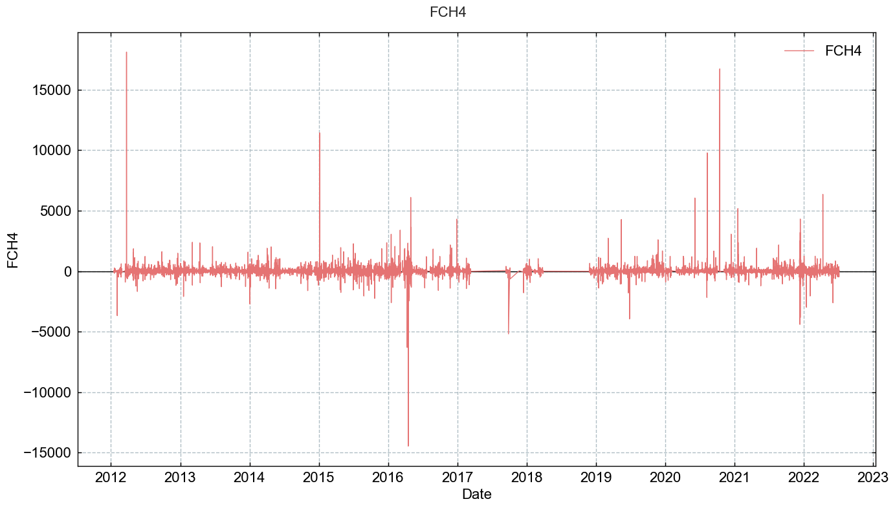
START FLUX PROCESSING CHAIN#
First we need to initialize the processing chain by providing some basic info.
At the same time, some fundamental variables are also created: potential radiation, and two flags based on it: daytime flag (1=daytime) and nighttime flag (1=nighttime).
fpc = FluxProcessingChain(
df=maindf,
fluxcol=FLUXVAR,
site_lat=SITE_LAT,
site_lon=SITE_LON,
utc_offset=UTC_OFFSET,
nighttime_threshold=NIGHTTIME_THRESHOLD,
daytime_accept_qcf_below=DAYTIME_ACCEPT_QCF_BELOW,
nighttimetime_accept_qcf_below=NIGHTTIMETIME_ACCEPT_QCF_BELOW
)
Detected base variable CH4 for FCH4. (CH4 was used to calculate FCH4.)
Calculated potential radiation from latitude and longitude (SW_IN_POT) ...
Calculated daytime flag DAYTIME and nighttime flag NIGHTTIME from SW_IN_POT ...
++ Added new columns ['SW_IN_POT', 'DAYTIME', 'NIGHTTIME'] to input data.
Let’s check the flux processing chain dataframe: this are the data the chain is working with in this run:
fpc.fpc_df
| FCH4 | USTAR | SW_IN_POT | DAYTIME | NIGHTTIME | |
|---|---|---|---|---|---|
| TIMESTAMP_MIDDLE | |||||
| 2012-01-01 00:15:00 | NaN | 0.191226 | 0.0 | 0.0 | 1.0 |
| 2012-01-01 00:45:00 | NaN | 0.056639 | 0.0 | 0.0 | 1.0 |
| 2012-01-01 01:15:00 | NaN | 0.105926 | 0.0 | 0.0 | 1.0 |
| 2012-01-01 01:45:00 | NaN | 0.061007 | 0.0 | 0.0 | 1.0 |
| 2012-01-01 02:15:00 | NaN | 0.079177 | 0.0 | 0.0 | 1.0 |
| ... | ... | ... | ... | ... | ... |
| 2022-12-31 21:45:00 | NaN | 0.104603 | 0.0 | 0.0 | 1.0 |
| 2022-12-31 22:15:00 | NaN | 0.076353 | 0.0 | 0.0 | 1.0 |
| 2022-12-31 22:45:00 | NaN | 0.120844 | 0.0 | 0.0 | 1.0 |
| 2022-12-31 23:15:00 | NaN | 0.079593 | 0.0 | 0.0 | 1.0 |
| 2022-12-31 23:45:00 | NaN | 0.107872 | 0.0 | 0.0 | 1.0 |
192864 rows × 5 columns
Level-2: QUALITY FLAG EXTENSION#
Extract additional quality information from the EddyPro output and store it in newly added quality flags.
Note that the USTAR filtering is not part of the Level-2 calculations.
User settings#
A test for missing values is always included: flag calculated here from missing flux values in the EddyPro output file
SSITC tests (default: True)#
Flag calculated in EddyPro
Combination of the two partial tests steady state test and developed turbulent conditions test
This notebook expects the SSITC flag to follow the flagging policy according to Mauder and Foken 2004:
0for best quality fluxes1for fluxes suitable for general analysis such as annual budgets (although this is debatable for nighttime data)2for fluxes that should be discarded from the dataset
TEST_SSITC = True # Default True
Flux base variable completeness test (default: True)#
Flag newly calculated here
Check completeness of the variable that was used to calculate the respective flux
Example:
CO2is the base variable that was used to calculate fluxFC, the test is therefore run onCO2Checks number of records of the relevant base variable available for each averaging Interval and calculates completeness flag as follows:
0for files where >= 99% of base variable are available1for files where >= 97% and < 99% of base variable are available2for files where < 97% of base variable are available
List of flux base variables and the corresponding fluxes:
CO2: used to calculateFCH2O: used to calculateFH2OH2O: used to calculateLEH2O: used to calculateETT_SONIC: used to calculateHN2O: used to calculateFN2OCH4: used to calculateFCH4
TEST_GAS_COMPLETENESS = True # Default True
Spectral correction factor test (default: True)#
Flag calculated here from the gas
SCFvariable in EddyPro output file
TEST_SPECTRAL_CORRECTION_FACTOR = True # Default True
Signal strength test#
Signal strength / AGC / window dirtiness test (if available)
Flag calculated here from the signal strength / AGC variable for the gas analyzer in EddyPro output file
SIGNAL_STRENGTH_COL: Name of the column storing the signal strength, typically ‘CUSTOM_AGC_MEAN’ for LI-7500, ‘CUSTOM_SIGNAL_STRENGTH_IRGA72_MEAN’ for LI-7200, or something similarSIGNAL_STRENGTH_THRESHOLD: Signal strength threshold, flux values where threshold is exceeded are flagged as rejectedSIGNAL_STRENGTH_METHOD:discard aboveflags fluxes where signal strength > threshold,discard belowwhere signal strength < threshold
# Signal strength
TEST_SIGNAL_STRENGTH = False
TEST_SIGNAL_STRENGTH_COL = 'CUSTOM_AGC_MEAN' # Typical variable name in fluxnet files
TEST_SIGNAL_STRENGTH_METHOD = 'discard above'
TEST_SIGNAL_STRENGTH_THRESHOLD = 90
# TimeSeries(series=df_orig[SIGNAL_STRENGTH_COL]).plot_interactive()
# TimeSeries(series=maindf[TEST_SIGNAL_STRENGTH_COL]).plot()
Raw data screening tests#
Flags were calculated in EddyPro
See here for more details: Despiking and raw data statistical screening (EddyPro help)
TEST_RAWDATA = True # Default True
TEST_RAWDATA_SPIKES = True # Default True
TEST_RAWDATA_AMPLITUDE = True # Default True
TEST_RAWDATA_DROPOUT = True # Default True
TEST_RAWDATA_ABSLIM = False # Default False
TEST_RAWDATA_SKEWKURT_HF = False # Default False
TEST_RAWDATA_SKEWKURT_SF = False # Default False
TEST_RAWDATA_DISCONT_HF = False # Default False
TEST_RAWDATA_DISCONT_SF = False # Default False
Angle-of-attack test (default: False)#
This test calculates sample-wise Angle of Attacks throughout the current flux averaging period, and flags it if the percentage of angles of attack exceeding a user-defined range is beyond a (user-defined) threshold.
Source: EddyPro help (3 Jan 2024)
Flag was calculated in EddyPro
Flag can be useful during some time periods when the sonic anemometer had issues
Not used by default (similar to ICOS)
TEST_RAWDATA_ANGLE_OF_ATTACK = True # Default False
# TEST_RAWDATA_ANGLE_OF_ATTACK_APPLICATION_DATES = []
TEST_RAWDATA_ANGLE_OF_ATTACK_APPLICATION_DATES = [['2008-01-01', '2010-01-01'],
['2016-03-01', '2016-05-01']]
Steadiness of horizontal wind test (default: False)#
This test assesses whether the along-wind and crosswind components of the wind vector undergo a systematic reduction (or increase) throughout the file. If the quadratic combination of such systematic variations is beyond the user-selected limit, the flux averaging period is hard-flagged for instationary horizontal wind (Vickers and Mahrt, 1997, Par. 6g).
Source: EddyPro help (3 Jan 2024)
Flag was calculated in EddyPro
TEST_RAWDATA_STEADINESS_OF_HORIZONTAL_WIND = False # Default False
Run#
LEVEL2_SETTINGS = {
'signal_strength': {
'apply': TEST_SIGNAL_STRENGTH,
'signal_strength_col': TEST_SIGNAL_STRENGTH_COL,
'method': TEST_SIGNAL_STRENGTH_METHOD,
'threshold': TEST_SIGNAL_STRENGTH_THRESHOLD},
'raw_data_screening_vm97': {
'apply': TEST_RAWDATA,
'spikes': TEST_RAWDATA_SPIKES,
'amplitude': TEST_RAWDATA_AMPLITUDE,
'dropout': TEST_RAWDATA_DROPOUT,
'abslim': TEST_RAWDATA_ABSLIM,
'skewkurt_hf': TEST_RAWDATA_SKEWKURT_HF,
'skewkurt_sf': TEST_RAWDATA_SKEWKURT_SF,
'discont_hf': TEST_RAWDATA_DISCONT_HF,
'discont_sf': TEST_RAWDATA_DISCONT_SF},
'ssitc': {
'apply': TEST_SSITC},
'gas_completeness': {
'apply': TEST_GAS_COMPLETENESS},
'spectral_correction_factor': {
'apply': TEST_SPECTRAL_CORRECTION_FACTOR},
'angle_of_attack': {
'apply': TEST_RAWDATA_ANGLE_OF_ATTACK,
'application_dates': TEST_RAWDATA_ANGLE_OF_ATTACK_APPLICATION_DATES},
'steadiness_of_horizontal_wind': {
'apply': TEST_RAWDATA_STEADINESS_OF_HORIZONTAL_WIND}
}
fpc.level2_quality_flag_expansion(**LEVEL2_SETTINGS)
[MissingValues] running MissingValues ...
SSITC TEST: Generated new flag variable FLAG_L2_FCH4_SSITC_TEST, values taken from output variable FCH4_SSITC_TEST ...
FLUX BASE VARIABLE COMPLETENESS TEST: Generated new flag variable FLAG_L2_FCH4_COMPLETENESS_TEST, newly calculated from variable CH4, with flag 0 (good values) where available number of records for CH4 >= 0.99, flag 1 (ok values) >= 0.97 and < 0.99, flag 2 (bad values) < 0.97...
SPECTRAL CORRECTION FACTOR TEST: Generating new flag variable FLAG_L2_FCH4_SCF_TEST, newly calculated from output variable FCH4_SCF, withflag 0 (good values) where FCH4_SCF < 2, flag 1 (ok values) where FCH4_SCF >= 2 and < 4, flag 2 (bad values) where FCH4_SCF >= 4...
RAW DATA TEST: Generated new flag variable FLAG_L2_FCH4_CH4_VM97_SPIKE_HF_TEST, values taken from output variable CH4_VM97_TEST from position 1, based on CH4, with flag 0 (good values) where test passed, flag 2 (bad values) where test failed (for hard flags) or flag 1 (ok values) where test failed (for soft flags) ...
RAW DATA TEST: Generated new flag variable FLAG_L2_FCH4_CH4_VM97_AMPLITUDE_RESOLUTION_HF_TEST, values taken from output variable CH4_VM97_TEST from position 2, based on CH4, with flag 0 (good values) where test passed, flag 2 (bad values) where test failed (for hard flags) or flag 1 (ok values) where test failed (for soft flags) ...
RAW DATA TEST: Generated new flag variable FLAG_L2_FCH4_CH4_VM97_DROPOUT_TEST, values taken from output variable CH4_VM97_TEST from position 3, based on CH4, with flag 0 (good values) where test passed, flag 2 (bad values) where test failed (for hard flags) or flag 1 (ok values) where test failed (for soft flags) ...
ANGLE OF ATTACK TEST: will be applied on the following dates only: [['2008-01-01', '2010-01-01'], ['2016-03-01', '2016-05-01']]
ANGLE OF ATTACK TEST: Generated new flag variable FLAG_L2_FCH4_VM97_AOA_HF_TEST, values taken from output variable None, with flag 0 (good values) where test passed, flag 2 (bad values) where test failed ...
Finalize Level-2#
fpc.finalize_level2()
++Added new column FLAG_L2_FCH4_MISSING_TEST.
++Added new column FLAG_L2_FCH4_SSITC_TEST.
++Added new column FLAG_L2_FCH4_COMPLETENESS_TEST.
++Added new column FLAG_L2_FCH4_SCF_TEST.
++Added new column FLAG_L2_FCH4_CH4_VM97_SPIKE_HF_TEST.
++Added new column FLAG_L2_FCH4_CH4_VM97_AMPLITUDE_RESOLUTION_HF_TEST.
++Added new column FLAG_L2_FCH4_CH4_VM97_DROPOUT_TEST.
++Added new column FLAG_L2_FCH4_VM97_AOA_HF_TEST.
++Added new column SUM_L2_FCH4_HARDFLAGS.
++Added new column SUM_L2_FCH4_SOFTFLAGS.
++Added new column SUM_L2_FCH4_FLAGS.
++Added new column FLAG_L2_FCH4_QCF.
++Added new column FCH4_L2_QCF.
++Added new column FCH4_L2_QCF0.
Available Level-2 variables#
This shows all available Level-2 variables for this flux
[x for x in fpc.fpc_df.columns if 'L2' in x]
['FLAG_L2_FCH4_MISSING_TEST',
'FLAG_L2_FCH4_SSITC_TEST',
'FLAG_L2_FCH4_COMPLETENESS_TEST',
'FLAG_L2_FCH4_SCF_TEST',
'FLAG_L2_FCH4_CH4_VM97_SPIKE_HF_TEST',
'FLAG_L2_FCH4_CH4_VM97_AMPLITUDE_RESOLUTION_HF_TEST',
'FLAG_L2_FCH4_CH4_VM97_DROPOUT_TEST',
'FLAG_L2_FCH4_VM97_AOA_HF_TEST',
'SUM_L2_FCH4_HARDFLAGS',
'SUM_L2_FCH4_SOFTFLAGS',
'SUM_L2_FCH4_FLAGS',
'FLAG_L2_FCH4_QCF',
'FCH4_L2_QCF',
'FCH4_L2_QCF0']
Plots#
fpc.level2_qcf.showplot_qcf_heatmaps()
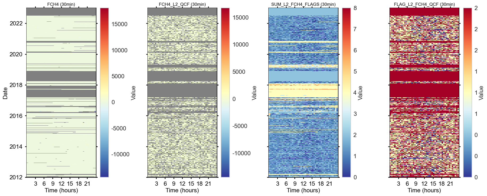
# fpc.level2_qcf.showplot_qcf_timeseries()
Reports#
fpc.level2_qcf.report_qcf_evolution()
========================================
QCF FLAG EVOLUTION
========================================
This output shows the evolution of the QCF overall quality flag
when test flags are applied sequentially to the variable FCH4.
Number of FCH4 records before QC: 146409
+++ FLAG_L2_FCH4_MISSING_TEST rejected 0 values (+0.00%) TOTALS: flag 0: 146409 (100.00%) / flag 1: 0 (0.00%) / flag 2: 0 (0.00%)
+++ FLAG_L2_FCH4_SSITC_TEST rejected 49805 values (+34.02%) TOTALS: flag 0: 20676 (14.12%) / flag 1: 75928 (51.86%) / flag 2: 49805 (34.02%)
+++ FLAG_L2_FCH4_COMPLETENESS_TEST rejected 3210 values (+2.19%) TOTALS: flag 0: 18657 (12.74%) / flag 1: 74737 (51.05%) / flag 2: 53015 (36.21%)
+++ FLAG_L2_FCH4_SCF_TEST rejected 76 values (+0.05%) TOTALS: flag 0: 18374 (12.55%) / flag 1: 74944 (51.19%) / flag 2: 53091 (36.26%)
+++ FLAG_L2_FCH4_CH4_VM97_SPIKE_HF_TEST rejected 0 values (+0.00%) TOTALS: flag 0: 18374 (12.55%) / flag 1: 74944 (51.19%) / flag 2: 53091 (36.26%)
+++ FLAG_L2_FCH4_CH4_VM97_AMPLITUDE_RESOLUTION_HF_TEST rejected 4389 values (+3.00%) TOTALS: flag 0: 17861 (12.20%) / flag 1: 71068 (48.54%) / flag 2: 57480 (39.26%)
+++ FLAG_L2_FCH4_CH4_VM97_DROPOUT_TEST rejected 0 values (+0.00%) TOTALS: flag 0: 17861 (12.20%) / flag 1: 71068 (48.54%) / flag 2: 57480 (39.26%)
+++ FLAG_L2_FCH4_VM97_AOA_HF_TEST rejected 291 values (+0.20%) TOTALS: flag 0: 17842 (12.19%) / flag 1: 70796 (48.35%) / flag 2: 57771 (39.46%)
In total, 57771 (39.46%) of the available records were rejected in this step.
INFO Rejected DAYTIME records where QCF flag >= 2
INFO Rejected NIGHTTIME records where QCF flag >= 2
fpc.level2_qcf.report_qcf_series()
========================================
SUMMARY: FLAG_L2_FCH4_QCF, QCF FLAG FOR FCH4
========================================
Between 2012-01-01 00:15 and 2022-12-31 23:45 ...
Total flux records BEFORE quality checks: 146409 (75.91% of potential)
Available flux records AFTER quality checks: 88638 (60.54% of total)
Rejected flux records: 57771 (39.46% of total)
Potential flux records: 192864
Potential flux records missed: 46455 (24.09% of potential)
# fpc.level2_qcf.report_qcf_flags()
Level-3.1: STORAGE CORRECTION#
The flux storage term (single point) is added to the flux
For some records, the storage term can be missing. In such cases, missing terms are gap-filled using the rolling mean in an expanding window.
Without gap-filling the storage term, we can lose an additional e.g. 2-3% of flux data
Run#
fpc.level31_storage_correction(gapfill_storage_term=True)
Detected storage variable SCH4_SINGLE for FCH4.
Calculating storage-corrected flux FCH4_L3.1 from flux FCH4 and storage term SCH4_SINGLE ...
Missing values for storage term SCH4_SINGLE_gfRMED_L3.1: 474
Gap-filling storage-term SCH4_SINGLE with rolling median (window size = 3 records) ...
Missing values for storage term SCH4_SINGLE_gfRMED_L3.1: 474
Gap-filling storage-term SCH4_SINGLE with rolling median (window size = 5 records) ...
Missing values for storage term SCH4_SINGLE_gfRMED_L3.1: 309
Gap-filling storage-term SCH4_SINGLE with rolling median (window size = 7 records) ...
Missing values for storage term SCH4_SINGLE_gfRMED_L3.1: 49
Gap-filling storage-term SCH4_SINGLE with rolling median (window size = 9 records) ...
Missing values for storage term SCH4_SINGLE_gfRMED_L3.1: 35
Gap-filling storage-term SCH4_SINGLE with rolling median (window size = 11 records) ...
Missing values for storage term SCH4_SINGLE_gfRMED_L3.1: 25
Gap-filling storage-term SCH4_SINGLE with rolling median (window size = 13 records) ...
Missing values for storage term SCH4_SINGLE_gfRMED_L3.1: 17
Gap-filling storage-term SCH4_SINGLE with rolling median (window size = 15 records) ...
Missing values for storage term SCH4_SINGLE_gfRMED_L3.1: 12
Gap-filling storage-term SCH4_SINGLE with rolling median (window size = 17 records) ...
Missing values for storage term SCH4_SINGLE_gfRMED_L3.1: 10
Gap-filling storage-term SCH4_SINGLE with rolling median (window size = 19 records) ...
Missing values for storage term SCH4_SINGLE_gfRMED_L3.1: 10
Gap-filling storage-term SCH4_SINGLE with rolling median (window size = 21 records) ...
Missing values for storage term SCH4_SINGLE_gfRMED_L3.1: 10
Gap-filling storage-term SCH4_SINGLE with rolling median (window size = 23 records) ...
Missing values for storage term SCH4_SINGLE_gfRMED_L3.1: 10
Gap-filling storage-term SCH4_SINGLE with rolling median (window size = 25 records) ...
Missing values for storage term SCH4_SINGLE_gfRMED_L3.1: 9
Gap-filling storage-term SCH4_SINGLE with rolling median (window size = 27 records) ...
Missing values for storage term SCH4_SINGLE_gfRMED_L3.1: 9
Gap-filling storage-term SCH4_SINGLE with rolling median (window size = 29 records) ...
Missing values for storage term SCH4_SINGLE_gfRMED_L3.1: 8
Gap-filling storage-term SCH4_SINGLE with rolling median (window size = 31 records) ...
Missing values for storage term SCH4_SINGLE_gfRMED_L3.1: 7
Gap-filling storage-term SCH4_SINGLE with rolling median (window size = 33 records) ...
Missing values for storage term SCH4_SINGLE_gfRMED_L3.1: 6
Gap-filling storage-term SCH4_SINGLE with rolling median (window size = 35 records) ...
Missing values for storage term SCH4_SINGLE_gfRMED_L3.1: 6
Gap-filling storage-term SCH4_SINGLE with rolling median (window size = 37 records) ...
Missing values for storage term SCH4_SINGLE_gfRMED_L3.1: 5
Gap-filling storage-term SCH4_SINGLE with rolling median (window size = 39 records) ...
Missing values for storage term SCH4_SINGLE_gfRMED_L3.1: 5
Gap-filling storage-term SCH4_SINGLE with rolling median (window size = 41 records) ...
Missing values for storage term SCH4_SINGLE_gfRMED_L3.1: 5
Gap-filling storage-term SCH4_SINGLE with rolling median (window size = 43 records) ...
Missing values for storage term SCH4_SINGLE_gfRMED_L3.1: 5
Gap-filling storage-term SCH4_SINGLE with rolling median (window size = 45 records) ...
Missing values for storage term SCH4_SINGLE_gfRMED_L3.1: 5
Gap-filling storage-term SCH4_SINGLE with rolling median (window size = 47 records) ...
Missing values for storage term SCH4_SINGLE_gfRMED_L3.1: 5
Gap-filling storage-term SCH4_SINGLE with rolling median (window size = 49 records) ...
Missing values for storage term SCH4_SINGLE_gfRMED_L3.1: 5
Gap-filling storage-term SCH4_SINGLE with rolling median (window size = 51 records) ...
Missing values for storage term SCH4_SINGLE_gfRMED_L3.1: 5
Gap-filling storage-term SCH4_SINGLE with rolling median (window size = 53 records) ...
Missing values for storage term SCH4_SINGLE_gfRMED_L3.1: 5
Gap-filling storage-term SCH4_SINGLE with rolling median (window size = 55 records) ...
Missing values for storage term SCH4_SINGLE_gfRMED_L3.1: 5
Gap-filling storage-term SCH4_SINGLE with rolling median (window size = 57 records) ...
Missing values for storage term SCH4_SINGLE_gfRMED_L3.1: 5
Gap-filling storage-term SCH4_SINGLE with rolling median (window size = 59 records) ...
Missing values for storage term SCH4_SINGLE_gfRMED_L3.1: 5
Gap-filling storage-term SCH4_SINGLE with rolling median (window size = 61 records) ...
Missing values for storage term SCH4_SINGLE_gfRMED_L3.1: 5
Gap-filling storage-term SCH4_SINGLE with rolling median (window size = 63 records) ...
Missing values for storage term SCH4_SINGLE_gfRMED_L3.1: 5
Gap-filling storage-term SCH4_SINGLE with rolling median (window size = 65 records) ...
Missing values for storage term SCH4_SINGLE_gfRMED_L3.1: 5
Gap-filling storage-term SCH4_SINGLE with rolling median (window size = 67 records) ...
Missing values for storage term SCH4_SINGLE_gfRMED_L3.1: 5
Gap-filling storage-term SCH4_SINGLE with rolling median (window size = 69 records) ...
Missing values for storage term SCH4_SINGLE_gfRMED_L3.1: 5
Gap-filling storage-term SCH4_SINGLE with rolling median (window size = 71 records) ...
Missing values for storage term SCH4_SINGLE_gfRMED_L3.1: 5
Gap-filling storage-term SCH4_SINGLE with rolling median (window size = 73 records) ...
Missing values for storage term SCH4_SINGLE_gfRMED_L3.1: 5
Gap-filling storage-term SCH4_SINGLE with rolling median (window size = 75 records) ...
Missing values for storage term SCH4_SINGLE_gfRMED_L3.1: 5
Gap-filling storage-term SCH4_SINGLE with rolling median (window size = 77 records) ...
Missing values for storage term SCH4_SINGLE_gfRMED_L3.1: 5
Gap-filling storage-term SCH4_SINGLE with rolling median (window size = 79 records) ...
Missing values for storage term SCH4_SINGLE_gfRMED_L3.1: 5
Gap-filling storage-term SCH4_SINGLE with rolling median (window size = 81 records) ...
Missing values for storage term SCH4_SINGLE_gfRMED_L3.1: 5
Gap-filling storage-term SCH4_SINGLE with rolling median (window size = 83 records) ...
Missing values for storage term SCH4_SINGLE_gfRMED_L3.1: 5
Gap-filling storage-term SCH4_SINGLE with rolling median (window size = 85 records) ...
Missing values for storage term SCH4_SINGLE_gfRMED_L3.1: 5
Gap-filling storage-term SCH4_SINGLE with rolling median (window size = 87 records) ...
Missing values for storage term SCH4_SINGLE_gfRMED_L3.1: 4
Gap-filling storage-term SCH4_SINGLE with rolling median (window size = 89 records) ...
Missing values for storage term SCH4_SINGLE_gfRMED_L3.1: 4
Gap-filling storage-term SCH4_SINGLE with rolling median (window size = 91 records) ...
Missing values for storage term SCH4_SINGLE_gfRMED_L3.1: 4
Gap-filling storage-term SCH4_SINGLE with rolling median (window size = 93 records) ...
Missing values for storage term SCH4_SINGLE_gfRMED_L3.1: 3
Gap-filling storage-term SCH4_SINGLE with rolling median (window size = 95 records) ...
Missing values for storage term SCH4_SINGLE_gfRMED_L3.1: 2
Gap-filling storage-term SCH4_SINGLE with rolling median (window size = 97 records) ...
Missing values for storage term SCH4_SINGLE_gfRMED_L3.1: 2
Gap-filling storage-term SCH4_SINGLE with rolling median (window size = 99 records) ...
Missing values for storage term SCH4_SINGLE_gfRMED_L3.1: 1
Gap-filling storage-term SCH4_SINGLE with rolling median (window size = 101 records) ...
Missing values for storage term SCH4_SINGLE_gfRMED_L3.1: 1
Gap-filling storage-term SCH4_SINGLE with rolling median (window size = 103 records) ...
Missing values for storage term SCH4_SINGLE_gfRMED_L3.1: 1
Gap-filling storage-term SCH4_SINGLE with rolling median (window size = 105 records) ...
Missing values for storage term SCH4_SINGLE_gfRMED_L3.1: 1
Gap-filling storage-term SCH4_SINGLE with rolling median (window size = 107 records) ...
Missing values for storage term SCH4_SINGLE_gfRMED_L3.1: 1
Gap-filling storage-term SCH4_SINGLE with rolling median (window size = 109 records) ...
Missing values for storage term SCH4_SINGLE_gfRMED_L3.1: 1
Gap-filling storage-term SCH4_SINGLE with rolling median (window size = 111 records) ...
Missing values for storage term SCH4_SINGLE_gfRMED_L3.1: 1
Gap-filling storage-term SCH4_SINGLE with rolling median (window size = 113 records) ...
Missing values for storage term SCH4_SINGLE_gfRMED_L3.1: 1
Gap-filling storage-term SCH4_SINGLE with rolling median (window size = 115 records) ...
Missing values for storage term SCH4_SINGLE_gfRMED_L3.1: 1
Gap-filling storage-term SCH4_SINGLE with rolling median (window size = 117 records) ...
Missing values for storage term SCH4_SINGLE_gfRMED_L3.1: 1
Gap-filling storage-term SCH4_SINGLE with rolling median (window size = 119 records) ...
Missing values for storage term SCH4_SINGLE_gfRMED_L3.1: 1
Gap-filling storage-term SCH4_SINGLE with rolling median (window size = 121 records) ...
Missing values for storage term SCH4_SINGLE_gfRMED_L3.1: 1
Gap-filling storage-term SCH4_SINGLE with rolling median (window size = 123 records) ...
Missing values for storage term SCH4_SINGLE_gfRMED_L3.1: 1
Gap-filling storage-term SCH4_SINGLE with rolling median (window size = 125 records) ...
Missing values for storage term SCH4_SINGLE_gfRMED_L3.1: 1
Gap-filling storage-term SCH4_SINGLE with rolling median (window size = 127 records) ...
Missing values for storage term SCH4_SINGLE_gfRMED_L3.1: 1
Gap-filling storage-term SCH4_SINGLE with rolling median (window size = 129 records) ...
Missing values for storage term SCH4_SINGLE_gfRMED_L3.1: 1
Gap-filling storage-term SCH4_SINGLE with rolling median (window size = 131 records) ...
Missing values for storage term SCH4_SINGLE_gfRMED_L3.1: 1
Gap-filling storage-term SCH4_SINGLE with rolling median (window size = 133 records) ...
Missing values for storage term SCH4_SINGLE_gfRMED_L3.1: 1
Gap-filling storage-term SCH4_SINGLE with rolling median (window size = 135 records) ...
Missing values for storage term SCH4_SINGLE_gfRMED_L3.1: 1
Gap-filling storage-term SCH4_SINGLE with rolling median (window size = 137 records) ...
Missing values for storage term SCH4_SINGLE_gfRMED_L3.1: 1
Gap-filling storage-term SCH4_SINGLE with rolling median (window size = 139 records) ...
Missing values for storage term SCH4_SINGLE_gfRMED_L3.1: 1
Gap-filling storage-term SCH4_SINGLE with rolling median (window size = 141 records) ...
Missing values for storage term SCH4_SINGLE_gfRMED_L3.1: 1
Gap-filling storage-term SCH4_SINGLE with rolling median (window size = 143 records) ...
Missing values for storage term SCH4_SINGLE_gfRMED_L3.1: 1
Gap-filling storage-term SCH4_SINGLE with rolling median (window size = 145 records) ...
Missing values for storage term SCH4_SINGLE_gfRMED_L3.1: 1
Gap-filling storage-term SCH4_SINGLE with rolling median (window size = 147 records) ...
Missing values for storage term SCH4_SINGLE_gfRMED_L3.1: 1
Gap-filling storage-term SCH4_SINGLE with rolling median (window size = 149 records) ...
Missing values for storage term SCH4_SINGLE_gfRMED_L3.1: 1
Gap-filling storage-term SCH4_SINGLE with rolling median (window size = 151 records) ...
Missing values for storage term SCH4_SINGLE_gfRMED_L3.1: 1
Gap-filling storage-term SCH4_SINGLE with rolling median (window size = 153 records) ...
Missing values for storage term SCH4_SINGLE_gfRMED_L3.1: 1
Gap-filling storage-term SCH4_SINGLE with rolling median (window size = 155 records) ...
Missing values for storage term SCH4_SINGLE_gfRMED_L3.1: 1
Gap-filling storage-term SCH4_SINGLE with rolling median (window size = 157 records) ...
Missing values for storage term SCH4_SINGLE_gfRMED_L3.1: 1
Gap-filling storage-term SCH4_SINGLE with rolling median (window size = 159 records) ...
Missing values for storage term SCH4_SINGLE_gfRMED_L3.1: 1
Gap-filling storage-term SCH4_SINGLE with rolling median (window size = 161 records) ...
Missing values for storage term SCH4_SINGLE_gfRMED_L3.1: 1
Gap-filling storage-term SCH4_SINGLE with rolling median (window size = 163 records) ...
Missing values for storage term SCH4_SINGLE_gfRMED_L3.1: 1
Gap-filling storage-term SCH4_SINGLE with rolling median (window size = 165 records) ...
Missing values for storage term SCH4_SINGLE_gfRMED_L3.1: 1
Gap-filling storage-term SCH4_SINGLE with rolling median (window size = 167 records) ...
Missing values for storage term SCH4_SINGLE_gfRMED_L3.1: 1
Gap-filling storage-term SCH4_SINGLE with rolling median (window size = 169 records) ...
Missing values for storage term SCH4_SINGLE_gfRMED_L3.1: 1
Gap-filling storage-term SCH4_SINGLE with rolling median (window size = 171 records) ...
Missing values for storage term SCH4_SINGLE_gfRMED_L3.1: 1
Gap-filling storage-term SCH4_SINGLE with rolling median (window size = 173 records) ...
Missing values for storage term SCH4_SINGLE_gfRMED_L3.1: 1
Gap-filling storage-term SCH4_SINGLE with rolling median (window size = 175 records) ...
Missing values for storage term SCH4_SINGLE_gfRMED_L3.1: 1
Gap-filling storage-term SCH4_SINGLE with rolling median (window size = 177 records) ...
Missing values for storage term SCH4_SINGLE_gfRMED_L3.1: 1
Gap-filling storage-term SCH4_SINGLE with rolling median (window size = 179 records) ...
Missing values for storage term SCH4_SINGLE_gfRMED_L3.1: 1
Gap-filling storage-term SCH4_SINGLE with rolling median (window size = 181 records) ...
Missing values for storage term SCH4_SINGLE_gfRMED_L3.1: 1
Gap-filling storage-term SCH4_SINGLE with rolling median (window size = 183 records) ...
Missing values for storage term SCH4_SINGLE_gfRMED_L3.1: 1
Gap-filling storage-term SCH4_SINGLE with rolling median (window size = 185 records) ...
Missing values for storage term SCH4_SINGLE_gfRMED_L3.1: 1
Gap-filling storage-term SCH4_SINGLE with rolling median (window size = 187 records) ...
Missing values for storage term SCH4_SINGLE_gfRMED_L3.1: 1
Gap-filling storage-term SCH4_SINGLE with rolling median (window size = 189 records) ...
Missing values for storage term SCH4_SINGLE_gfRMED_L3.1: 1
Gap-filling storage-term SCH4_SINGLE with rolling median (window size = 191 records) ...
Missing values for storage term SCH4_SINGLE_gfRMED_L3.1: 1
Gap-filling storage-term SCH4_SINGLE with rolling median (window size = 193 records) ...
Missing values for storage term SCH4_SINGLE_gfRMED_L3.1: 1
Gap-filling storage-term SCH4_SINGLE with rolling median (window size = 195 records) ...
Missing values for storage term SCH4_SINGLE_gfRMED_L3.1: 1
Gap-filling storage-term SCH4_SINGLE with rolling median (window size = 197 records) ...
Missing values for storage term SCH4_SINGLE_gfRMED_L3.1: 1
Gap-filling storage-term SCH4_SINGLE with rolling median (window size = 199 records) ...
Missing values for storage term SCH4_SINGLE_gfRMED_L3.1: 1
Gap-filling storage-term SCH4_SINGLE with rolling median (window size = 201 records) ...
Missing values for storage term SCH4_SINGLE_gfRMED_L3.1: 1
Gap-filling storage-term SCH4_SINGLE with rolling median (window size = 203 records) ...
Missing values for storage term SCH4_SINGLE_gfRMED_L3.1: 1
Gap-filling storage-term SCH4_SINGLE with rolling median (window size = 205 records) ...
Missing values for storage term SCH4_SINGLE_gfRMED_L3.1: 1
Gap-filling storage-term SCH4_SINGLE with rolling median (window size = 207 records) ...
Missing values for storage term SCH4_SINGLE_gfRMED_L3.1: 1
Gap-filling storage-term SCH4_SINGLE with rolling median (window size = 209 records) ...
Missing values for storage term SCH4_SINGLE_gfRMED_L3.1: 1
Gap-filling storage-term SCH4_SINGLE with rolling median (window size = 211 records) ...
Missing values for storage term SCH4_SINGLE_gfRMED_L3.1: 1
Gap-filling storage-term SCH4_SINGLE with rolling median (window size = 213 records) ...
Missing values for storage term SCH4_SINGLE_gfRMED_L3.1: 1
Gap-filling storage-term SCH4_SINGLE with rolling median (window size = 215 records) ...
Missing values for storage term SCH4_SINGLE_gfRMED_L3.1: 1
Gap-filling storage-term SCH4_SINGLE with rolling median (window size = 217 records) ...
Missing values for storage term SCH4_SINGLE_gfRMED_L3.1: 1
Gap-filling storage-term SCH4_SINGLE with rolling median (window size = 219 records) ...
Missing values for storage term SCH4_SINGLE_gfRMED_L3.1: 1
Gap-filling storage-term SCH4_SINGLE with rolling median (window size = 221 records) ...
Missing values for storage term SCH4_SINGLE_gfRMED_L3.1: 1
Gap-filling storage-term SCH4_SINGLE with rolling median (window size = 223 records) ...
Missing values for storage term SCH4_SINGLE_gfRMED_L3.1: 1
Gap-filling storage-term SCH4_SINGLE with rolling median (window size = 225 records) ...
Missing values for storage term SCH4_SINGLE_gfRMED_L3.1: 1
Gap-filling storage-term SCH4_SINGLE with rolling median (window size = 227 records) ...
Missing values for storage term SCH4_SINGLE_gfRMED_L3.1: 1
Gap-filling storage-term SCH4_SINGLE with rolling median (window size = 229 records) ...
Missing values for storage term SCH4_SINGLE_gfRMED_L3.1: 1
Gap-filling storage-term SCH4_SINGLE with rolling median (window size = 231 records) ...
Missing values for storage term SCH4_SINGLE_gfRMED_L3.1: 1
Gap-filling storage-term SCH4_SINGLE with rolling median (window size = 233 records) ...
Missing values for storage term SCH4_SINGLE_gfRMED_L3.1: 1
Gap-filling storage-term SCH4_SINGLE with rolling median (window size = 235 records) ...
Missing values for storage term SCH4_SINGLE_gfRMED_L3.1: 1
Gap-filling storage-term SCH4_SINGLE with rolling median (window size = 237 records) ...
Missing values for storage term SCH4_SINGLE_gfRMED_L3.1: 1
Gap-filling storage-term SCH4_SINGLE with rolling median (window size = 239 records) ...
Missing values for storage term SCH4_SINGLE_gfRMED_L3.1: 1
Gap-filling storage-term SCH4_SINGLE with rolling median (window size = 241 records) ...
Missing values for storage term SCH4_SINGLE_gfRMED_L3.1: 1
Gap-filling storage-term SCH4_SINGLE with rolling median (window size = 243 records) ...
Missing values for storage term SCH4_SINGLE_gfRMED_L3.1: 1
Gap-filling storage-term SCH4_SINGLE with rolling median (window size = 245 records) ...
Missing values for storage term SCH4_SINGLE_gfRMED_L3.1: 1
Gap-filling storage-term SCH4_SINGLE with rolling median (window size = 247 records) ...
Missing values for storage term SCH4_SINGLE_gfRMED_L3.1: 1
Gap-filling storage-term SCH4_SINGLE with rolling median (window size = 249 records) ...
Missing values for storage term SCH4_SINGLE_gfRMED_L3.1: 1
Gap-filling storage-term SCH4_SINGLE with rolling median (window size = 251 records) ...
Missing values for storage term SCH4_SINGLE_gfRMED_L3.1: 1
Gap-filling storage-term SCH4_SINGLE with rolling median (window size = 253 records) ...
Missing values for storage term SCH4_SINGLE_gfRMED_L3.1: 1
Gap-filling storage-term SCH4_SINGLE with rolling median (window size = 255 records) ...
Missing values for storage term SCH4_SINGLE_gfRMED_L3.1: 1
Gap-filling storage-term SCH4_SINGLE with rolling median (window size = 257 records) ...
Missing values for storage term SCH4_SINGLE_gfRMED_L3.1: 1
Gap-filling storage-term SCH4_SINGLE with rolling median (window size = 259 records) ...
Missing values for storage term SCH4_SINGLE_gfRMED_L3.1: 1
Gap-filling storage-term SCH4_SINGLE with rolling median (window size = 261 records) ...
Missing values for storage term SCH4_SINGLE_gfRMED_L3.1: 1
Gap-filling storage-term SCH4_SINGLE with rolling median (window size = 263 records) ...
Missing values for storage term SCH4_SINGLE_gfRMED_L3.1: 1
Gap-filling storage-term SCH4_SINGLE with rolling median (window size = 265 records) ...
Missing values for storage term SCH4_SINGLE_gfRMED_L3.1: 1
Gap-filling storage-term SCH4_SINGLE with rolling median (window size = 267 records) ...
Missing values for storage term SCH4_SINGLE_gfRMED_L3.1: 1
Gap-filling storage-term SCH4_SINGLE with rolling median (window size = 269 records) ...
Missing values for storage term SCH4_SINGLE_gfRMED_L3.1: 1
Gap-filling storage-term SCH4_SINGLE with rolling median (window size = 271 records) ...
Missing values for storage term SCH4_SINGLE_gfRMED_L3.1: 1
Gap-filling storage-term SCH4_SINGLE with rolling median (window size = 273 records) ...
Missing values for storage term SCH4_SINGLE_gfRMED_L3.1: 1
Gap-filling storage-term SCH4_SINGLE with rolling median (window size = 275 records) ...
Missing values for storage term SCH4_SINGLE_gfRMED_L3.1: 1
Gap-filling storage-term SCH4_SINGLE with rolling median (window size = 277 records) ...
Missing values for storage term SCH4_SINGLE_gfRMED_L3.1: 1
Gap-filling storage-term SCH4_SINGLE with rolling median (window size = 279 records) ...
Missing values for storage term SCH4_SINGLE_gfRMED_L3.1: 1
Gap-filling storage-term SCH4_SINGLE with rolling median (window size = 281 records) ...
Missing values for storage term SCH4_SINGLE_gfRMED_L3.1: 1
Gap-filling storage-term SCH4_SINGLE with rolling median (window size = 283 records) ...
Missing values for storage term SCH4_SINGLE_gfRMED_L3.1: 1
Gap-filling storage-term SCH4_SINGLE with rolling median (window size = 285 records) ...
Missing values for storage term SCH4_SINGLE_gfRMED_L3.1: 1
Gap-filling storage-term SCH4_SINGLE with rolling median (window size = 287 records) ...
Missing values for storage term SCH4_SINGLE_gfRMED_L3.1: 1
Gap-filling storage-term SCH4_SINGLE with rolling median (window size = 289 records) ...
Missing values for storage term SCH4_SINGLE_gfRMED_L3.1: 1
Gap-filling storage-term SCH4_SINGLE with rolling median (window size = 291 records) ...
Missing values for storage term SCH4_SINGLE_gfRMED_L3.1: 1
Gap-filling storage-term SCH4_SINGLE with rolling median (window size = 293 records) ...
Missing values for storage term SCH4_SINGLE_gfRMED_L3.1: 1
Gap-filling storage-term SCH4_SINGLE with rolling median (window size = 295 records) ...
Missing values for storage term SCH4_SINGLE_gfRMED_L3.1: 1
Gap-filling storage-term SCH4_SINGLE with rolling median (window size = 297 records) ...
Missing values for storage term SCH4_SINGLE_gfRMED_L3.1: 1
Gap-filling storage-term SCH4_SINGLE with rolling median (window size = 299 records) ...
Missing values for storage term SCH4_SINGLE_gfRMED_L3.1: 1
Gap-filling storage-term SCH4_SINGLE with rolling median (window size = 301 records) ...
Missing values for storage term SCH4_SINGLE_gfRMED_L3.1: 1
Gap-filling storage-term SCH4_SINGLE with rolling median (window size = 303 records) ...
Missing values for storage term SCH4_SINGLE_gfRMED_L3.1: 1
Gap-filling storage-term SCH4_SINGLE with rolling median (window size = 305 records) ...
Missing values for storage term SCH4_SINGLE_gfRMED_L3.1: 1
Gap-filling storage-term SCH4_SINGLE with rolling median (window size = 307 records) ...
Missing values for storage term SCH4_SINGLE_gfRMED_L3.1: 1
Gap-filling storage-term SCH4_SINGLE with rolling median (window size = 309 records) ...
Missing values for storage term SCH4_SINGLE_gfRMED_L3.1: 1
Gap-filling storage-term SCH4_SINGLE with rolling median (window size = 311 records) ...
Missing values for storage term SCH4_SINGLE_gfRMED_L3.1: 1
Gap-filling storage-term SCH4_SINGLE with rolling median (window size = 313 records) ...
Missing values for storage term SCH4_SINGLE_gfRMED_L3.1: 1
Gap-filling storage-term SCH4_SINGLE with rolling median (window size = 315 records) ...
Missing values for storage term SCH4_SINGLE_gfRMED_L3.1: 1
Gap-filling storage-term SCH4_SINGLE with rolling median (window size = 317 records) ...
Missing values for storage term SCH4_SINGLE_gfRMED_L3.1: 1
Gap-filling storage-term SCH4_SINGLE with rolling median (window size = 319 records) ...
Missing values for storage term SCH4_SINGLE_gfRMED_L3.1: 1
Gap-filling storage-term SCH4_SINGLE with rolling median (window size = 321 records) ...
Missing values for storage term SCH4_SINGLE_gfRMED_L3.1: 1
Gap-filling storage-term SCH4_SINGLE with rolling median (window size = 323 records) ...
Missing values for storage term SCH4_SINGLE_gfRMED_L3.1: 1
Gap-filling storage-term SCH4_SINGLE with rolling median (window size = 325 records) ...
Missing values for storage term SCH4_SINGLE_gfRMED_L3.1: 1
Gap-filling storage-term SCH4_SINGLE with rolling median (window size = 327 records) ...
Missing values for storage term SCH4_SINGLE_gfRMED_L3.1: 1
Gap-filling storage-term SCH4_SINGLE with rolling median (window size = 329 records) ...
Missing values for storage term SCH4_SINGLE_gfRMED_L3.1: 1
Gap-filling storage-term SCH4_SINGLE with rolling median (window size = 331 records) ...
Missing values for storage term SCH4_SINGLE_gfRMED_L3.1: 1
Gap-filling storage-term SCH4_SINGLE with rolling median (window size = 333 records) ...
Missing values for storage term SCH4_SINGLE_gfRMED_L3.1: 1
Gap-filling storage-term SCH4_SINGLE with rolling median (window size = 335 records) ...
Missing values for storage term SCH4_SINGLE_gfRMED_L3.1: 1
Gap-filling storage-term SCH4_SINGLE with rolling median (window size = 337 records) ...
Missing values for storage term SCH4_SINGLE_gfRMED_L3.1: 1
Gap-filling storage-term SCH4_SINGLE with rolling median (window size = 339 records) ...
Missing values for storage term SCH4_SINGLE_gfRMED_L3.1: 1
Gap-filling storage-term SCH4_SINGLE with rolling median (window size = 341 records) ...
Missing values for storage term SCH4_SINGLE_gfRMED_L3.1: 1
Gap-filling storage-term SCH4_SINGLE with rolling median (window size = 343 records) ...
Missing values for storage term SCH4_SINGLE_gfRMED_L3.1: 1
Gap-filling storage-term SCH4_SINGLE with rolling median (window size = 345 records) ...
Missing values for storage term SCH4_SINGLE_gfRMED_L3.1: 1
Gap-filling storage-term SCH4_SINGLE with rolling median (window size = 347 records) ...
Missing values for storage term SCH4_SINGLE_gfRMED_L3.1: 1
Gap-filling storage-term SCH4_SINGLE with rolling median (window size = 349 records) ...
Missing values for storage term SCH4_SINGLE_gfRMED_L3.1: 1
Gap-filling storage-term SCH4_SINGLE with rolling median (window size = 351 records) ...
Missing values for storage term SCH4_SINGLE_gfRMED_L3.1: 1
Gap-filling storage-term SCH4_SINGLE with rolling median (window size = 353 records) ...
Missing values for storage term SCH4_SINGLE_gfRMED_L3.1: 1
Gap-filling storage-term SCH4_SINGLE with rolling median (window size = 355 records) ...
Missing values for storage term SCH4_SINGLE_gfRMED_L3.1: 1
Gap-filling storage-term SCH4_SINGLE with rolling median (window size = 357 records) ...
Missing values for storage term SCH4_SINGLE_gfRMED_L3.1: 1
Gap-filling storage-term SCH4_SINGLE with rolling median (window size = 359 records) ...
Missing values for storage term SCH4_SINGLE_gfRMED_L3.1: 1
Gap-filling storage-term SCH4_SINGLE with rolling median (window size = 361 records) ...
Missing values for storage term SCH4_SINGLE_gfRMED_L3.1: 1
Gap-filling storage-term SCH4_SINGLE with rolling median (window size = 363 records) ...
Missing values for storage term SCH4_SINGLE_gfRMED_L3.1: 1
Gap-filling storage-term SCH4_SINGLE with rolling median (window size = 365 records) ...
Missing values for storage term SCH4_SINGLE_gfRMED_L3.1: 1
Gap-filling storage-term SCH4_SINGLE with rolling median (window size = 367 records) ...
Missing values for storage term SCH4_SINGLE_gfRMED_L3.1: 1
Gap-filling storage-term SCH4_SINGLE with rolling median (window size = 369 records) ...
Missing values for storage term SCH4_SINGLE_gfRMED_L3.1: 1
Gap-filling storage-term SCH4_SINGLE with rolling median (window size = 371 records) ...
Missing values for storage term SCH4_SINGLE_gfRMED_L3.1: 1
Gap-filling storage-term SCH4_SINGLE with rolling median (window size = 373 records) ...
Missing values for storage term SCH4_SINGLE_gfRMED_L3.1: 1
Gap-filling storage-term SCH4_SINGLE with rolling median (window size = 375 records) ...
Missing values for storage term SCH4_SINGLE_gfRMED_L3.1: 1
Gap-filling storage-term SCH4_SINGLE with rolling median (window size = 377 records) ...
Missing values for storage term SCH4_SINGLE_gfRMED_L3.1: 1
Gap-filling storage-term SCH4_SINGLE with rolling median (window size = 379 records) ...
Missing values for storage term SCH4_SINGLE_gfRMED_L3.1: 1
Gap-filling storage-term SCH4_SINGLE with rolling median (window size = 381 records) ...
Missing values for storage term SCH4_SINGLE_gfRMED_L3.1: 1
Gap-filling storage-term SCH4_SINGLE with rolling median (window size = 383 records) ...
Missing values for storage term SCH4_SINGLE_gfRMED_L3.1: 1
Gap-filling storage-term SCH4_SINGLE with rolling median (window size = 385 records) ...
Missing values for storage term SCH4_SINGLE_gfRMED_L3.1: 1
Gap-filling storage-term SCH4_SINGLE with rolling median (window size = 387 records) ...
Missing values for storage term SCH4_SINGLE_gfRMED_L3.1: 1
Gap-filling storage-term SCH4_SINGLE with rolling median (window size = 389 records) ...
Missing values for storage term SCH4_SINGLE_gfRMED_L3.1: 1
Gap-filling storage-term SCH4_SINGLE with rolling median (window size = 391 records) ...
Missing values for storage term SCH4_SINGLE_gfRMED_L3.1: 1
Gap-filling storage-term SCH4_SINGLE with rolling median (window size = 393 records) ...
Missing values for storage term SCH4_SINGLE_gfRMED_L3.1: 1
Gap-filling storage-term SCH4_SINGLE with rolling median (window size = 395 records) ...
Missing values for storage term SCH4_SINGLE_gfRMED_L3.1: 1
Gap-filling storage-term SCH4_SINGLE with rolling median (window size = 397 records) ...
Missing values for storage term SCH4_SINGLE_gfRMED_L3.1: 1
Gap-filling storage-term SCH4_SINGLE with rolling median (window size = 399 records) ...
Missing values for storage term SCH4_SINGLE_gfRMED_L3.1: 1
Gap-filling storage-term SCH4_SINGLE with rolling median (window size = 401 records) ...
Missing values for storage term SCH4_SINGLE_gfRMED_L3.1: 1
Gap-filling storage-term SCH4_SINGLE with rolling median (window size = 403 records) ...
Missing values for storage term SCH4_SINGLE_gfRMED_L3.1: 1
Gap-filling storage-term SCH4_SINGLE with rolling median (window size = 405 records) ...
Missing values for storage term SCH4_SINGLE_gfRMED_L3.1: 1
Gap-filling storage-term SCH4_SINGLE with rolling median (window size = 407 records) ...
Missing values for storage term SCH4_SINGLE_gfRMED_L3.1: 1
Gap-filling storage-term SCH4_SINGLE with rolling median (window size = 409 records) ...
Missing values for storage term SCH4_SINGLE_gfRMED_L3.1: 1
Gap-filling storage-term SCH4_SINGLE with rolling median (window size = 411 records) ...
Missing values for storage term SCH4_SINGLE_gfRMED_L3.1: 1
Gap-filling storage-term SCH4_SINGLE with rolling median (window size = 413 records) ...
Missing values for storage term SCH4_SINGLE_gfRMED_L3.1: 1
Gap-filling storage-term SCH4_SINGLE with rolling median (window size = 415 records) ...
Missing values for storage term SCH4_SINGLE_gfRMED_L3.1: 1
Gap-filling storage-term SCH4_SINGLE with rolling median (window size = 417 records) ...
Missing values for storage term SCH4_SINGLE_gfRMED_L3.1: 1
Gap-filling storage-term SCH4_SINGLE with rolling median (window size = 419 records) ...
Missing values for storage term SCH4_SINGLE_gfRMED_L3.1: 1
Gap-filling storage-term SCH4_SINGLE with rolling median (window size = 421 records) ...
Missing values for storage term SCH4_SINGLE_gfRMED_L3.1: 1
Gap-filling storage-term SCH4_SINGLE with rolling median (window size = 423 records) ...
Missing values for storage term SCH4_SINGLE_gfRMED_L3.1: 1
Gap-filling storage-term SCH4_SINGLE with rolling median (window size = 425 records) ...
Missing values for storage term SCH4_SINGLE_gfRMED_L3.1: 1
Gap-filling storage-term SCH4_SINGLE with rolling median (window size = 427 records) ...
Missing values for storage term SCH4_SINGLE_gfRMED_L3.1: 1
Gap-filling storage-term SCH4_SINGLE with rolling median (window size = 429 records) ...
Missing values for storage term SCH4_SINGLE_gfRMED_L3.1: 1
Gap-filling storage-term SCH4_SINGLE with rolling median (window size = 431 records) ...
Missing values for storage term SCH4_SINGLE_gfRMED_L3.1: 1
Gap-filling storage-term SCH4_SINGLE with rolling median (window size = 433 records) ...
Missing values for storage term SCH4_SINGLE_gfRMED_L3.1: 1
Gap-filling storage-term SCH4_SINGLE with rolling median (window size = 435 records) ...
Missing values for storage term SCH4_SINGLE_gfRMED_L3.1: 1
Gap-filling storage-term SCH4_SINGLE with rolling median (window size = 437 records) ...
Missing values for storage term SCH4_SINGLE_gfRMED_L3.1: 1
Gap-filling storage-term SCH4_SINGLE with rolling median (window size = 439 records) ...
Missing values for storage term SCH4_SINGLE_gfRMED_L3.1: 1
Gap-filling storage-term SCH4_SINGLE with rolling median (window size = 441 records) ...
Missing values for storage term SCH4_SINGLE_gfRMED_L3.1: 1
Gap-filling storage-term SCH4_SINGLE with rolling median (window size = 443 records) ...
Missing values for storage term SCH4_SINGLE_gfRMED_L3.1: 1
Gap-filling storage-term SCH4_SINGLE with rolling median (window size = 445 records) ...
Missing values for storage term SCH4_SINGLE_gfRMED_L3.1: 1
Gap-filling storage-term SCH4_SINGLE with rolling median (window size = 447 records) ...
Missing values for storage term SCH4_SINGLE_gfRMED_L3.1: 1
Gap-filling storage-term SCH4_SINGLE with rolling median (window size = 449 records) ...
Missing values for storage term SCH4_SINGLE_gfRMED_L3.1: 1
Gap-filling storage-term SCH4_SINGLE with rolling median (window size = 451 records) ...
Missing values for storage term SCH4_SINGLE_gfRMED_L3.1: 1
Gap-filling storage-term SCH4_SINGLE with rolling median (window size = 453 records) ...
Missing values for storage term SCH4_SINGLE_gfRMED_L3.1: 1
Gap-filling storage-term SCH4_SINGLE with rolling median (window size = 455 records) ...
Missing values for storage term SCH4_SINGLE_gfRMED_L3.1: 1
Gap-filling storage-term SCH4_SINGLE with rolling median (window size = 457 records) ...
Missing values for storage term SCH4_SINGLE_gfRMED_L3.1: 1
Gap-filling storage-term SCH4_SINGLE with rolling median (window size = 459 records) ...
Missing values for storage term SCH4_SINGLE_gfRMED_L3.1: 1
Gap-filling storage-term SCH4_SINGLE with rolling median (window size = 461 records) ...
Missing values for storage term SCH4_SINGLE_gfRMED_L3.1: 1
Gap-filling storage-term SCH4_SINGLE with rolling median (window size = 463 records) ...
Missing values for storage term SCH4_SINGLE_gfRMED_L3.1: 1
Gap-filling storage-term SCH4_SINGLE with rolling median (window size = 465 records) ...
Missing values for storage term SCH4_SINGLE_gfRMED_L3.1: 1
Gap-filling storage-term SCH4_SINGLE with rolling median (window size = 467 records) ...
Missing values for storage term SCH4_SINGLE_gfRMED_L3.1: 1
Gap-filling storage-term SCH4_SINGLE with rolling median (window size = 469 records) ...
Missing values for storage term SCH4_SINGLE_gfRMED_L3.1: 1
Gap-filling storage-term SCH4_SINGLE with rolling median (window size = 471 records) ...
Missing values for storage term SCH4_SINGLE_gfRMED_L3.1: 1
Gap-filling storage-term SCH4_SINGLE with rolling median (window size = 473 records) ...
Missing values for storage term SCH4_SINGLE_gfRMED_L3.1: 1
Gap-filling storage-term SCH4_SINGLE with rolling median (window size = 475 records) ...
Missing values for storage term SCH4_SINGLE_gfRMED_L3.1: 1
Gap-filling storage-term SCH4_SINGLE with rolling median (window size = 477 records) ...
Missing values for storage term SCH4_SINGLE_gfRMED_L3.1: 1
Gap-filling storage-term SCH4_SINGLE with rolling median (window size = 479 records) ...
Missing values for storage term SCH4_SINGLE_gfRMED_L3.1: 1
Gap-filling storage-term SCH4_SINGLE with rolling median (window size = 481 records) ...
Missing values for storage term SCH4_SINGLE_gfRMED_L3.1: 1
Gap-filling storage-term SCH4_SINGLE with rolling median (window size = 483 records) ...
Missing values for storage term SCH4_SINGLE_gfRMED_L3.1: 1
Gap-filling storage-term SCH4_SINGLE with rolling median (window size = 485 records) ...
Missing values for storage term SCH4_SINGLE_gfRMED_L3.1: 1
Gap-filling storage-term SCH4_SINGLE with rolling median (window size = 487 records) ...
Missing values for storage term SCH4_SINGLE_gfRMED_L3.1: 1
Gap-filling storage-term SCH4_SINGLE with rolling median (window size = 489 records) ...
Missing values for storage term SCH4_SINGLE_gfRMED_L3.1: 1
Gap-filling storage-term SCH4_SINGLE with rolling median (window size = 491 records) ...
Missing values for storage term SCH4_SINGLE_gfRMED_L3.1: 1
Gap-filling storage-term SCH4_SINGLE with rolling median (window size = 493 records) ...
Missing values for storage term SCH4_SINGLE_gfRMED_L3.1: 1
Gap-filling storage-term SCH4_SINGLE with rolling median (window size = 495 records) ...
Missing values for storage term SCH4_SINGLE_gfRMED_L3.1: 1
Gap-filling storage-term SCH4_SINGLE with rolling median (window size = 497 records) ...
Missing values for storage term SCH4_SINGLE_gfRMED_L3.1: 1
Gap-filling storage-term SCH4_SINGLE with rolling median (window size = 499 records) ...
Missing values for storage term SCH4_SINGLE_gfRMED_L3.1: 1
Gap-filling storage-term SCH4_SINGLE with rolling median (window size = 501 records) ...
Missing values for storage term SCH4_SINGLE_gfRMED_L3.1: 1
Gap-filling storage-term SCH4_SINGLE with rolling median (window size = 503 records) ...
Missing values for storage term SCH4_SINGLE_gfRMED_L3.1: 1
Gap-filling storage-term SCH4_SINGLE with rolling median (window size = 505 records) ...
Missing values for storage term SCH4_SINGLE_gfRMED_L3.1: 1
Gap-filling storage-term SCH4_SINGLE with rolling median (window size = 507 records) ...
Missing values for storage term SCH4_SINGLE_gfRMED_L3.1: 1
Gap-filling storage-term SCH4_SINGLE with rolling median (window size = 509 records) ...
Missing values for storage term SCH4_SINGLE_gfRMED_L3.1: 1
Gap-filling storage-term SCH4_SINGLE with rolling median (window size = 511 records) ...
Missing values for storage term SCH4_SINGLE_gfRMED_L3.1: 1
Gap-filling storage-term SCH4_SINGLE with rolling median (window size = 513 records) ...
Missing values for storage term SCH4_SINGLE_gfRMED_L3.1: 1
Gap-filling storage-term SCH4_SINGLE with rolling median (window size = 515 records) ...
Missing values for storage term SCH4_SINGLE_gfRMED_L3.1: 1
Gap-filling storage-term SCH4_SINGLE with rolling median (window size = 517 records) ...
Missing values for storage term SCH4_SINGLE_gfRMED_L3.1: 1
Gap-filling storage-term SCH4_SINGLE with rolling median (window size = 519 records) ...
Missing values for storage term SCH4_SINGLE_gfRMED_L3.1: 1
Gap-filling storage-term SCH4_SINGLE with rolling median (window size = 521 records) ...
Missing values for storage term SCH4_SINGLE_gfRMED_L3.1: 1
Gap-filling storage-term SCH4_SINGLE with rolling median (window size = 523 records) ...
Missing values for storage term SCH4_SINGLE_gfRMED_L3.1: 1
Gap-filling storage-term SCH4_SINGLE with rolling median (window size = 525 records) ...
Missing values for storage term SCH4_SINGLE_gfRMED_L3.1: 1
Gap-filling storage-term SCH4_SINGLE with rolling median (window size = 527 records) ...
Missing values for storage term SCH4_SINGLE_gfRMED_L3.1: 1
Gap-filling storage-term SCH4_SINGLE with rolling median (window size = 529 records) ...
Missing values for storage term SCH4_SINGLE_gfRMED_L3.1: 1
Gap-filling storage-term SCH4_SINGLE with rolling median (window size = 531 records) ...
Missing values for storage term SCH4_SINGLE_gfRMED_L3.1: 1
Gap-filling storage-term SCH4_SINGLE with rolling median (window size = 533 records) ...
Missing values for storage term SCH4_SINGLE_gfRMED_L3.1: 1
Gap-filling storage-term SCH4_SINGLE with rolling median (window size = 535 records) ...
Missing values for storage term SCH4_SINGLE_gfRMED_L3.1: 1
Gap-filling storage-term SCH4_SINGLE with rolling median (window size = 537 records) ...
Missing values for storage term SCH4_SINGLE_gfRMED_L3.1: 1
Gap-filling storage-term SCH4_SINGLE with rolling median (window size = 539 records) ...
Missing values for storage term SCH4_SINGLE_gfRMED_L3.1: 1
Gap-filling storage-term SCH4_SINGLE with rolling median (window size = 541 records) ...
Missing values for storage term SCH4_SINGLE_gfRMED_L3.1: 1
Gap-filling storage-term SCH4_SINGLE with rolling median (window size = 543 records) ...
Missing values for storage term SCH4_SINGLE_gfRMED_L3.1: 1
Gap-filling storage-term SCH4_SINGLE with rolling median (window size = 545 records) ...
Missing values for storage term SCH4_SINGLE_gfRMED_L3.1: 1
Gap-filling storage-term SCH4_SINGLE with rolling median (window size = 547 records) ...
Missing values for storage term SCH4_SINGLE_gfRMED_L3.1: 1
Gap-filling storage-term SCH4_SINGLE with rolling median (window size = 549 records) ...
Missing values for storage term SCH4_SINGLE_gfRMED_L3.1: 1
Gap-filling storage-term SCH4_SINGLE with rolling median (window size = 551 records) ...
Missing values for storage term SCH4_SINGLE_gfRMED_L3.1: 1
Gap-filling storage-term SCH4_SINGLE with rolling median (window size = 553 records) ...
Missing values for storage term SCH4_SINGLE_gfRMED_L3.1: 1
Gap-filling storage-term SCH4_SINGLE with rolling median (window size = 555 records) ...
Missing values for storage term SCH4_SINGLE_gfRMED_L3.1: 1
Gap-filling storage-term SCH4_SINGLE with rolling median (window size = 557 records) ...
Missing values for storage term SCH4_SINGLE_gfRMED_L3.1: 1
Gap-filling storage-term SCH4_SINGLE with rolling median (window size = 559 records) ...
Missing values for storage term SCH4_SINGLE_gfRMED_L3.1: 1
Gap-filling storage-term SCH4_SINGLE with rolling median (window size = 561 records) ...
Missing values for storage term SCH4_SINGLE_gfRMED_L3.1: 1
Gap-filling storage-term SCH4_SINGLE with rolling median (window size = 563 records) ...
Missing values for storage term SCH4_SINGLE_gfRMED_L3.1: 1
Gap-filling storage-term SCH4_SINGLE with rolling median (window size = 565 records) ...
Missing values for storage term SCH4_SINGLE_gfRMED_L3.1: 1
Gap-filling storage-term SCH4_SINGLE with rolling median (window size = 567 records) ...
Missing values for storage term SCH4_SINGLE_gfRMED_L3.1: 1
Gap-filling storage-term SCH4_SINGLE with rolling median (window size = 569 records) ...
Missing values for storage term SCH4_SINGLE_gfRMED_L3.1: 1
Gap-filling storage-term SCH4_SINGLE with rolling median (window size = 571 records) ...
Missing values for storage term SCH4_SINGLE_gfRMED_L3.1: 1
Gap-filling storage-term SCH4_SINGLE with rolling median (window size = 573 records) ...
Missing values for storage term SCH4_SINGLE_gfRMED_L3.1: 1
Gap-filling storage-term SCH4_SINGLE with rolling median (window size = 575 records) ...
Missing values for storage term SCH4_SINGLE_gfRMED_L3.1: 1
Gap-filling storage-term SCH4_SINGLE with rolling median (window size = 577 records) ...
Missing values for storage term SCH4_SINGLE_gfRMED_L3.1: 1
Gap-filling storage-term SCH4_SINGLE with rolling median (window size = 579 records) ...
Missing values for storage term SCH4_SINGLE_gfRMED_L3.1: 1
Gap-filling storage-term SCH4_SINGLE with rolling median (window size = 581 records) ...
Missing values for storage term SCH4_SINGLE_gfRMED_L3.1: 1
Gap-filling storage-term SCH4_SINGLE with rolling median (window size = 583 records) ...
Missing values for storage term SCH4_SINGLE_gfRMED_L3.1: 1
Gap-filling storage-term SCH4_SINGLE with rolling median (window size = 585 records) ...
Missing values for storage term SCH4_SINGLE_gfRMED_L3.1: 1
Gap-filling storage-term SCH4_SINGLE with rolling median (window size = 587 records) ...
Missing values for storage term SCH4_SINGLE_gfRMED_L3.1: 1
Gap-filling storage-term SCH4_SINGLE with rolling median (window size = 589 records) ...
Missing values for storage term SCH4_SINGLE_gfRMED_L3.1: 1
Gap-filling storage-term SCH4_SINGLE with rolling median (window size = 591 records) ...
Missing values for storage term SCH4_SINGLE_gfRMED_L3.1: 1
Gap-filling storage-term SCH4_SINGLE with rolling median (window size = 593 records) ...
Missing values for storage term SCH4_SINGLE_gfRMED_L3.1: 1
Gap-filling storage-term SCH4_SINGLE with rolling median (window size = 595 records) ...
Missing values for storage term SCH4_SINGLE_gfRMED_L3.1: 1
Gap-filling storage-term SCH4_SINGLE with rolling median (window size = 597 records) ...
Missing values for storage term SCH4_SINGLE_gfRMED_L3.1: 1
Gap-filling storage-term SCH4_SINGLE with rolling median (window size = 599 records) ...
Missing values for storage term SCH4_SINGLE_gfRMED_L3.1: 1
Gap-filling storage-term SCH4_SINGLE with rolling median (window size = 601 records) ...
Missing values for storage term SCH4_SINGLE_gfRMED_L3.1: 1
Gap-filling storage-term SCH4_SINGLE with rolling median (window size = 603 records) ...
Missing values for storage term SCH4_SINGLE_gfRMED_L3.1: 1
Gap-filling storage-term SCH4_SINGLE with rolling median (window size = 605 records) ...
Missing values for storage term SCH4_SINGLE_gfRMED_L3.1: 1
Gap-filling storage-term SCH4_SINGLE with rolling median (window size = 607 records) ...
Missing values for storage term SCH4_SINGLE_gfRMED_L3.1: 1
Gap-filling storage-term SCH4_SINGLE with rolling median (window size = 609 records) ...
Missing values for storage term SCH4_SINGLE_gfRMED_L3.1: 1
Gap-filling storage-term SCH4_SINGLE with rolling median (window size = 611 records) ...
Missing values for storage term SCH4_SINGLE_gfRMED_L3.1: 1
Gap-filling storage-term SCH4_SINGLE with rolling median (window size = 613 records) ...
Missing values for storage term SCH4_SINGLE_gfRMED_L3.1: 1
Gap-filling storage-term SCH4_SINGLE with rolling median (window size = 615 records) ...
Missing values for storage term SCH4_SINGLE_gfRMED_L3.1: 1
Gap-filling storage-term SCH4_SINGLE with rolling median (window size = 617 records) ...
Missing values for storage term SCH4_SINGLE_gfRMED_L3.1: 1
Gap-filling storage-term SCH4_SINGLE with rolling median (window size = 619 records) ...
Missing values for storage term SCH4_SINGLE_gfRMED_L3.1: 1
Gap-filling storage-term SCH4_SINGLE with rolling median (window size = 621 records) ...
Missing values for storage term SCH4_SINGLE_gfRMED_L3.1: 1
Gap-filling storage-term SCH4_SINGLE with rolling median (window size = 623 records) ...
Missing values for storage term SCH4_SINGLE_gfRMED_L3.1: 1
Gap-filling storage-term SCH4_SINGLE with rolling median (window size = 625 records) ...
Missing values for storage term SCH4_SINGLE_gfRMED_L3.1: 1
Gap-filling storage-term SCH4_SINGLE with rolling median (window size = 627 records) ...
Missing values for storage term SCH4_SINGLE_gfRMED_L3.1: 1
Gap-filling storage-term SCH4_SINGLE with rolling median (window size = 629 records) ...
Missing values for storage term SCH4_SINGLE_gfRMED_L3.1: 1
Gap-filling storage-term SCH4_SINGLE with rolling median (window size = 631 records) ...
Missing values for storage term SCH4_SINGLE_gfRMED_L3.1: 1
Gap-filling storage-term SCH4_SINGLE with rolling median (window size = 633 records) ...
Missing values for storage term SCH4_SINGLE_gfRMED_L3.1: 1
Gap-filling storage-term SCH4_SINGLE with rolling median (window size = 635 records) ...
Missing values for storage term SCH4_SINGLE_gfRMED_L3.1: 1
Gap-filling storage-term SCH4_SINGLE with rolling median (window size = 637 records) ...
Missing values for storage term SCH4_SINGLE_gfRMED_L3.1: 1
Gap-filling storage-term SCH4_SINGLE with rolling median (window size = 639 records) ...
Missing values for storage term SCH4_SINGLE_gfRMED_L3.1: 1
Gap-filling storage-term SCH4_SINGLE with rolling median (window size = 641 records) ...
Missing values for storage term SCH4_SINGLE_gfRMED_L3.1: 1
Gap-filling storage-term SCH4_SINGLE with rolling median (window size = 643 records) ...
Missing values for storage term SCH4_SINGLE_gfRMED_L3.1: 1
Gap-filling storage-term SCH4_SINGLE with rolling median (window size = 645 records) ...
Missing values for storage term SCH4_SINGLE_gfRMED_L3.1: 1
Gap-filling storage-term SCH4_SINGLE with rolling median (window size = 647 records) ...
Missing values for storage term SCH4_SINGLE_gfRMED_L3.1: 1
Gap-filling storage-term SCH4_SINGLE with rolling median (window size = 649 records) ...
Missing values for storage term SCH4_SINGLE_gfRMED_L3.1: 1
Gap-filling storage-term SCH4_SINGLE with rolling median (window size = 651 records) ...
Missing values for storage term SCH4_SINGLE_gfRMED_L3.1: 1
Gap-filling storage-term SCH4_SINGLE with rolling median (window size = 653 records) ...
Missing values for storage term SCH4_SINGLE_gfRMED_L3.1: 1
Gap-filling storage-term SCH4_SINGLE with rolling median (window size = 655 records) ...
Missing values for storage term SCH4_SINGLE_gfRMED_L3.1: 1
Gap-filling storage-term SCH4_SINGLE with rolling median (window size = 657 records) ...
Missing values for storage term SCH4_SINGLE_gfRMED_L3.1: 1
Gap-filling storage-term SCH4_SINGLE with rolling median (window size = 659 records) ...
Missing values for storage term SCH4_SINGLE_gfRMED_L3.1: 1
Gap-filling storage-term SCH4_SINGLE with rolling median (window size = 661 records) ...
Missing values for storage term SCH4_SINGLE_gfRMED_L3.1: 1
Gap-filling storage-term SCH4_SINGLE with rolling median (window size = 663 records) ...
Missing values for storage term SCH4_SINGLE_gfRMED_L3.1: 1
Gap-filling storage-term SCH4_SINGLE with rolling median (window size = 665 records) ...
Missing values for storage term SCH4_SINGLE_gfRMED_L3.1: 1
Gap-filling storage-term SCH4_SINGLE with rolling median (window size = 667 records) ...
Missing values for storage term SCH4_SINGLE_gfRMED_L3.1: 1
Gap-filling storage-term SCH4_SINGLE with rolling median (window size = 669 records) ...
Missing values for storage term SCH4_SINGLE_gfRMED_L3.1: 1
Gap-filling storage-term SCH4_SINGLE with rolling median (window size = 671 records) ...
Missing values for storage term SCH4_SINGLE_gfRMED_L3.1: 1
Gap-filling storage-term SCH4_SINGLE with rolling median (window size = 673 records) ...
Missing values for storage term SCH4_SINGLE_gfRMED_L3.1: 1
Gap-filling storage-term SCH4_SINGLE with rolling median (window size = 675 records) ...
Missing values for storage term SCH4_SINGLE_gfRMED_L3.1: 1
Gap-filling storage-term SCH4_SINGLE with rolling median (window size = 677 records) ...
Missing values for storage term SCH4_SINGLE_gfRMED_L3.1: 1
Gap-filling storage-term SCH4_SINGLE with rolling median (window size = 679 records) ...
Missing values for storage term SCH4_SINGLE_gfRMED_L3.1: 1
Gap-filling storage-term SCH4_SINGLE with rolling median (window size = 681 records) ...
Missing values for storage term SCH4_SINGLE_gfRMED_L3.1: 1
Gap-filling storage-term SCH4_SINGLE with rolling median (window size = 683 records) ...
Missing values for storage term SCH4_SINGLE_gfRMED_L3.1: 1
Gap-filling storage-term SCH4_SINGLE with rolling median (window size = 685 records) ...
Missing values for storage term SCH4_SINGLE_gfRMED_L3.1: 1
Gap-filling storage-term SCH4_SINGLE with rolling median (window size = 687 records) ...
Missing values for storage term SCH4_SINGLE_gfRMED_L3.1: 1
Gap-filling storage-term SCH4_SINGLE with rolling median (window size = 689 records) ...
Missing values for storage term SCH4_SINGLE_gfRMED_L3.1: 1
Gap-filling storage-term SCH4_SINGLE with rolling median (window size = 691 records) ...
Missing values for storage term SCH4_SINGLE_gfRMED_L3.1: 1
Gap-filling storage-term SCH4_SINGLE with rolling median (window size = 693 records) ...
Missing values for storage term SCH4_SINGLE_gfRMED_L3.1: 1
Gap-filling storage-term SCH4_SINGLE with rolling median (window size = 695 records) ...
Missing values for storage term SCH4_SINGLE_gfRMED_L3.1: 1
Gap-filling storage-term SCH4_SINGLE with rolling median (window size = 697 records) ...
Missing values for storage term SCH4_SINGLE_gfRMED_L3.1: 1
Gap-filling storage-term SCH4_SINGLE with rolling median (window size = 699 records) ...
Missing values for storage term SCH4_SINGLE_gfRMED_L3.1: 1
Gap-filling storage-term SCH4_SINGLE with rolling median (window size = 701 records) ...
Missing values for storage term SCH4_SINGLE_gfRMED_L3.1: 1
Gap-filling storage-term SCH4_SINGLE with rolling median (window size = 703 records) ...
Missing values for storage term SCH4_SINGLE_gfRMED_L3.1: 1
Gap-filling storage-term SCH4_SINGLE with rolling median (window size = 705 records) ...
Missing values for storage term SCH4_SINGLE_gfRMED_L3.1: 1
Gap-filling storage-term SCH4_SINGLE with rolling median (window size = 707 records) ...
Missing values for storage term SCH4_SINGLE_gfRMED_L3.1: 1
Gap-filling storage-term SCH4_SINGLE with rolling median (window size = 709 records) ...
Missing values for storage term SCH4_SINGLE_gfRMED_L3.1: 1
Gap-filling storage-term SCH4_SINGLE with rolling median (window size = 711 records) ...
Missing values for storage term SCH4_SINGLE_gfRMED_L3.1: 1
Gap-filling storage-term SCH4_SINGLE with rolling median (window size = 713 records) ...
Missing values for storage term SCH4_SINGLE_gfRMED_L3.1: 1
Gap-filling storage-term SCH4_SINGLE with rolling median (window size = 715 records) ...
Missing values for storage term SCH4_SINGLE_gfRMED_L3.1: 1
Gap-filling storage-term SCH4_SINGLE with rolling median (window size = 717 records) ...
Missing values for storage term SCH4_SINGLE_gfRMED_L3.1: 1
Gap-filling storage-term SCH4_SINGLE with rolling median (window size = 719 records) ...
Missing values for storage term SCH4_SINGLE_gfRMED_L3.1: 1
Gap-filling storage-term SCH4_SINGLE with rolling median (window size = 721 records) ...
Missing values for storage term SCH4_SINGLE_gfRMED_L3.1: 1
Gap-filling storage-term SCH4_SINGLE with rolling median (window size = 723 records) ...
Missing values for storage term SCH4_SINGLE_gfRMED_L3.1: 1
Gap-filling storage-term SCH4_SINGLE with rolling median (window size = 725 records) ...
Missing values for storage term SCH4_SINGLE_gfRMED_L3.1: 1
Gap-filling storage-term SCH4_SINGLE with rolling median (window size = 727 records) ...
Missing values for storage term SCH4_SINGLE_gfRMED_L3.1: 1
Gap-filling storage-term SCH4_SINGLE with rolling median (window size = 729 records) ...
Missing values for storage term SCH4_SINGLE_gfRMED_L3.1: 1
Gap-filling storage-term SCH4_SINGLE with rolling median (window size = 731 records) ...
Missing values for storage term SCH4_SINGLE_gfRMED_L3.1: 1
Gap-filling storage-term SCH4_SINGLE with rolling median (window size = 733 records) ...
Missing values for storage term SCH4_SINGLE_gfRMED_L3.1: 1
Gap-filling storage-term SCH4_SINGLE with rolling median (window size = 735 records) ...
Missing values for storage term SCH4_SINGLE_gfRMED_L3.1: 1
Gap-filling storage-term SCH4_SINGLE with rolling median (window size = 737 records) ...
Missing values for storage term SCH4_SINGLE_gfRMED_L3.1: 1
Gap-filling storage-term SCH4_SINGLE with rolling median (window size = 739 records) ...
Missing values for storage term SCH4_SINGLE_gfRMED_L3.1: 1
Gap-filling storage-term SCH4_SINGLE with rolling median (window size = 741 records) ...
Missing values for storage term SCH4_SINGLE_gfRMED_L3.1: 1
Gap-filling storage-term SCH4_SINGLE with rolling median (window size = 743 records) ...
Missing values for storage term SCH4_SINGLE_gfRMED_L3.1: 1
Gap-filling storage-term SCH4_SINGLE with rolling median (window size = 745 records) ...
Missing values for storage term SCH4_SINGLE_gfRMED_L3.1: 1
Gap-filling storage-term SCH4_SINGLE with rolling median (window size = 747 records) ...
Missing values for storage term SCH4_SINGLE_gfRMED_L3.1: 1
Gap-filling storage-term SCH4_SINGLE with rolling median (window size = 749 records) ...
Missing values for storage term SCH4_SINGLE_gfRMED_L3.1: 1
Gap-filling storage-term SCH4_SINGLE with rolling median (window size = 751 records) ...
Missing values for storage term SCH4_SINGLE_gfRMED_L3.1: 1
Gap-filling storage-term SCH4_SINGLE with rolling median (window size = 753 records) ...
Missing values for storage term SCH4_SINGLE_gfRMED_L3.1: 1
Gap-filling storage-term SCH4_SINGLE with rolling median (window size = 755 records) ...
Missing values for storage term SCH4_SINGLE_gfRMED_L3.1: 1
Gap-filling storage-term SCH4_SINGLE with rolling median (window size = 757 records) ...
Missing values for storage term SCH4_SINGLE_gfRMED_L3.1: 1
Gap-filling storage-term SCH4_SINGLE with rolling median (window size = 759 records) ...
Missing values for storage term SCH4_SINGLE_gfRMED_L3.1: 1
Gap-filling storage-term SCH4_SINGLE with rolling median (window size = 761 records) ...
Missing values for storage term SCH4_SINGLE_gfRMED_L3.1: 1
Gap-filling storage-term SCH4_SINGLE with rolling median (window size = 763 records) ...
Missing values for storage term SCH4_SINGLE_gfRMED_L3.1: 1
Gap-filling storage-term SCH4_SINGLE with rolling median (window size = 765 records) ...
Missing values for storage term SCH4_SINGLE_gfRMED_L3.1: 1
Gap-filling storage-term SCH4_SINGLE with rolling median (window size = 767 records) ...
Missing values for storage term SCH4_SINGLE_gfRMED_L3.1: 1
Gap-filling storage-term SCH4_SINGLE with rolling median (window size = 769 records) ...
Missing values for storage term SCH4_SINGLE_gfRMED_L3.1: 1
Gap-filling storage-term SCH4_SINGLE with rolling median (window size = 771 records) ...
Missing values for storage term SCH4_SINGLE_gfRMED_L3.1: 1
Gap-filling storage-term SCH4_SINGLE with rolling median (window size = 773 records) ...
Missing values for storage term SCH4_SINGLE_gfRMED_L3.1: 1
Gap-filling storage-term SCH4_SINGLE with rolling median (window size = 775 records) ...
Missing values for storage term SCH4_SINGLE_gfRMED_L3.1: 1
Gap-filling storage-term SCH4_SINGLE with rolling median (window size = 777 records) ...
Missing values for storage term SCH4_SINGLE_gfRMED_L3.1: 1
Gap-filling storage-term SCH4_SINGLE with rolling median (window size = 779 records) ...
Missing values for storage term SCH4_SINGLE_gfRMED_L3.1: 1
Gap-filling storage-term SCH4_SINGLE with rolling median (window size = 781 records) ...
Missing values for storage term SCH4_SINGLE_gfRMED_L3.1: 1
Gap-filling storage-term SCH4_SINGLE with rolling median (window size = 783 records) ...
Missing values for storage term SCH4_SINGLE_gfRMED_L3.1: 1
Gap-filling storage-term SCH4_SINGLE with rolling median (window size = 785 records) ...
Missing values for storage term SCH4_SINGLE_gfRMED_L3.1: 1
Gap-filling storage-term SCH4_SINGLE with rolling median (window size = 787 records) ...
Missing values for storage term SCH4_SINGLE_gfRMED_L3.1: 1
Gap-filling storage-term SCH4_SINGLE with rolling median (window size = 789 records) ...
Missing values for storage term SCH4_SINGLE_gfRMED_L3.1: 1
Gap-filling storage-term SCH4_SINGLE with rolling median (window size = 791 records) ...
Missing values for storage term SCH4_SINGLE_gfRMED_L3.1: 1
Gap-filling storage-term SCH4_SINGLE with rolling median (window size = 793 records) ...
Missing values for storage term SCH4_SINGLE_gfRMED_L3.1: 1
Gap-filling storage-term SCH4_SINGLE with rolling median (window size = 795 records) ...
Missing values for storage term SCH4_SINGLE_gfRMED_L3.1: 1
Gap-filling storage-term SCH4_SINGLE with rolling median (window size = 797 records) ...
Missing values for storage term SCH4_SINGLE_gfRMED_L3.1: 1
Gap-filling storage-term SCH4_SINGLE with rolling median (window size = 799 records) ...
Missing values for storage term SCH4_SINGLE_gfRMED_L3.1: 1
Gap-filling storage-term SCH4_SINGLE with rolling median (window size = 801 records) ...
Missing values for storage term SCH4_SINGLE_gfRMED_L3.1: 1
Gap-filling storage-term SCH4_SINGLE with rolling median (window size = 803 records) ...
Missing values for storage term SCH4_SINGLE_gfRMED_L3.1: 1
Gap-filling storage-term SCH4_SINGLE with rolling median (window size = 805 records) ...
Missing values for storage term SCH4_SINGLE_gfRMED_L3.1: 1
Gap-filling storage-term SCH4_SINGLE with rolling median (window size = 807 records) ...
Missing values for storage term SCH4_SINGLE_gfRMED_L3.1: 1
Gap-filling storage-term SCH4_SINGLE with rolling median (window size = 809 records) ...
Missing values for storage term SCH4_SINGLE_gfRMED_L3.1: 1
Gap-filling storage-term SCH4_SINGLE with rolling median (window size = 811 records) ...
Missing values for storage term SCH4_SINGLE_gfRMED_L3.1: 1
Gap-filling storage-term SCH4_SINGLE with rolling median (window size = 813 records) ...
Missing values for storage term SCH4_SINGLE_gfRMED_L3.1: 1
Gap-filling storage-term SCH4_SINGLE with rolling median (window size = 815 records) ...
Missing values for storage term SCH4_SINGLE_gfRMED_L3.1: 1
Gap-filling storage-term SCH4_SINGLE with rolling median (window size = 817 records) ...
Missing values for storage term SCH4_SINGLE_gfRMED_L3.1: 1
Gap-filling storage-term SCH4_SINGLE with rolling median (window size = 819 records) ...
Missing values for storage term SCH4_SINGLE_gfRMED_L3.1: 1
Gap-filling storage-term SCH4_SINGLE with rolling median (window size = 821 records) ...
Missing values for storage term SCH4_SINGLE_gfRMED_L3.1: 1
Gap-filling storage-term SCH4_SINGLE with rolling median (window size = 823 records) ...
Missing values for storage term SCH4_SINGLE_gfRMED_L3.1: 1
Gap-filling storage-term SCH4_SINGLE with rolling median (window size = 825 records) ...
Missing values for storage term SCH4_SINGLE_gfRMED_L3.1: 1
Gap-filling storage-term SCH4_SINGLE with rolling median (window size = 827 records) ...
Missing values for storage term SCH4_SINGLE_gfRMED_L3.1: 1
Gap-filling storage-term SCH4_SINGLE with rolling median (window size = 829 records) ...
Missing values for storage term SCH4_SINGLE_gfRMED_L3.1: 1
Gap-filling storage-term SCH4_SINGLE with rolling median (window size = 831 records) ...
Missing values for storage term SCH4_SINGLE_gfRMED_L3.1: 1
Gap-filling storage-term SCH4_SINGLE with rolling median (window size = 833 records) ...
Missing values for storage term SCH4_SINGLE_gfRMED_L3.1: 1
Gap-filling storage-term SCH4_SINGLE with rolling median (window size = 835 records) ...
Missing values for storage term SCH4_SINGLE_gfRMED_L3.1: 1
Gap-filling storage-term SCH4_SINGLE with rolling median (window size = 837 records) ...
Missing values for storage term SCH4_SINGLE_gfRMED_L3.1: 1
Gap-filling storage-term SCH4_SINGLE with rolling median (window size = 839 records) ...
Missing values for storage term SCH4_SINGLE_gfRMED_L3.1: 1
Gap-filling storage-term SCH4_SINGLE with rolling median (window size = 841 records) ...
Missing values for storage term SCH4_SINGLE_gfRMED_L3.1: 1
Gap-filling storage-term SCH4_SINGLE with rolling median (window size = 843 records) ...
Missing values for storage term SCH4_SINGLE_gfRMED_L3.1: 1
Gap-filling storage-term SCH4_SINGLE with rolling median (window size = 845 records) ...
Missing values for storage term SCH4_SINGLE_gfRMED_L3.1: 1
Gap-filling storage-term SCH4_SINGLE with rolling median (window size = 847 records) ...
Missing values for storage term SCH4_SINGLE_gfRMED_L3.1: 1
Gap-filling storage-term SCH4_SINGLE with rolling median (window size = 849 records) ...
Missing values for storage term SCH4_SINGLE_gfRMED_L3.1: 1
Gap-filling storage-term SCH4_SINGLE with rolling median (window size = 851 records) ...
Missing values for storage term SCH4_SINGLE_gfRMED_L3.1: 1
Gap-filling storage-term SCH4_SINGLE with rolling median (window size = 853 records) ...
Missing values for storage term SCH4_SINGLE_gfRMED_L3.1: 1
Gap-filling storage-term SCH4_SINGLE with rolling median (window size = 855 records) ...
Missing values for storage term SCH4_SINGLE_gfRMED_L3.1: 1
Gap-filling storage-term SCH4_SINGLE with rolling median (window size = 857 records) ...
Missing values for storage term SCH4_SINGLE_gfRMED_L3.1: 1
Gap-filling storage-term SCH4_SINGLE with rolling median (window size = 859 records) ...
Missing values for storage term SCH4_SINGLE_gfRMED_L3.1: 1
Gap-filling storage-term SCH4_SINGLE with rolling median (window size = 861 records) ...
Missing values for storage term SCH4_SINGLE_gfRMED_L3.1: 1
Gap-filling storage-term SCH4_SINGLE with rolling median (window size = 863 records) ...
Missing values for storage term SCH4_SINGLE_gfRMED_L3.1: 1
Gap-filling storage-term SCH4_SINGLE with rolling median (window size = 865 records) ...
Missing values for storage term SCH4_SINGLE_gfRMED_L3.1: 1
Gap-filling storage-term SCH4_SINGLE with rolling median (window size = 867 records) ...
Missing values for storage term SCH4_SINGLE_gfRMED_L3.1: 1
Gap-filling storage-term SCH4_SINGLE with rolling median (window size = 869 records) ...
Missing values for storage term SCH4_SINGLE_gfRMED_L3.1: 1
Gap-filling storage-term SCH4_SINGLE with rolling median (window size = 871 records) ...
Missing values for storage term SCH4_SINGLE_gfRMED_L3.1: 1
Gap-filling storage-term SCH4_SINGLE with rolling median (window size = 873 records) ...
Missing values for storage term SCH4_SINGLE_gfRMED_L3.1: 1
Gap-filling storage-term SCH4_SINGLE with rolling median (window size = 875 records) ...
Missing values for storage term SCH4_SINGLE_gfRMED_L3.1: 1
Gap-filling storage-term SCH4_SINGLE with rolling median (window size = 877 records) ...
Missing values for storage term SCH4_SINGLE_gfRMED_L3.1: 1
Gap-filling storage-term SCH4_SINGLE with rolling median (window size = 879 records) ...
Missing values for storage term SCH4_SINGLE_gfRMED_L3.1: 1
Gap-filling storage-term SCH4_SINGLE with rolling median (window size = 881 records) ...
Missing values for storage term SCH4_SINGLE_gfRMED_L3.1: 1
Gap-filling storage-term SCH4_SINGLE with rolling median (window size = 883 records) ...
Missing values for storage term SCH4_SINGLE_gfRMED_L3.1: 1
Gap-filling storage-term SCH4_SINGLE with rolling median (window size = 885 records) ...
Missing values for storage term SCH4_SINGLE_gfRMED_L3.1: 1
Gap-filling storage-term SCH4_SINGLE with rolling median (window size = 887 records) ...
Missing values for storage term SCH4_SINGLE_gfRMED_L3.1: 1
Gap-filling storage-term SCH4_SINGLE with rolling median (window size = 889 records) ...
Missing values for storage term SCH4_SINGLE_gfRMED_L3.1: 1
Gap-filling storage-term SCH4_SINGLE with rolling median (window size = 891 records) ...
Missing values for storage term SCH4_SINGLE_gfRMED_L3.1: 1
Gap-filling storage-term SCH4_SINGLE with rolling median (window size = 893 records) ...
Missing values for storage term SCH4_SINGLE_gfRMED_L3.1: 1
Gap-filling storage-term SCH4_SINGLE with rolling median (window size = 895 records) ...
Missing values for storage term SCH4_SINGLE_gfRMED_L3.1: 1
Gap-filling storage-term SCH4_SINGLE with rolling median (window size = 897 records) ...
Missing values for storage term SCH4_SINGLE_gfRMED_L3.1: 1
Gap-filling storage-term SCH4_SINGLE with rolling median (window size = 899 records) ...
Missing values for storage term SCH4_SINGLE_gfRMED_L3.1: 1
Gap-filling storage-term SCH4_SINGLE with rolling median (window size = 901 records) ...
Missing values for storage term SCH4_SINGLE_gfRMED_L3.1: 1
Gap-filling storage-term SCH4_SINGLE with rolling median (window size = 903 records) ...
Missing values for storage term SCH4_SINGLE_gfRMED_L3.1: 1
Gap-filling storage-term SCH4_SINGLE with rolling median (window size = 905 records) ...
Missing values for storage term SCH4_SINGLE_gfRMED_L3.1: 1
Gap-filling storage-term SCH4_SINGLE with rolling median (window size = 907 records) ...
Missing values for storage term SCH4_SINGLE_gfRMED_L3.1: 1
Gap-filling storage-term SCH4_SINGLE with rolling median (window size = 909 records) ...
Missing values for storage term SCH4_SINGLE_gfRMED_L3.1: 1
Gap-filling storage-term SCH4_SINGLE with rolling median (window size = 911 records) ...
Missing values for storage term SCH4_SINGLE_gfRMED_L3.1: 1
Gap-filling storage-term SCH4_SINGLE with rolling median (window size = 913 records) ...
Missing values for storage term SCH4_SINGLE_gfRMED_L3.1: 1
Gap-filling storage-term SCH4_SINGLE with rolling median (window size = 915 records) ...
Missing values for storage term SCH4_SINGLE_gfRMED_L3.1: 1
Gap-filling storage-term SCH4_SINGLE with rolling median (window size = 917 records) ...
Missing values for storage term SCH4_SINGLE_gfRMED_L3.1: 1
Gap-filling storage-term SCH4_SINGLE with rolling median (window size = 919 records) ...
Missing values for storage term SCH4_SINGLE_gfRMED_L3.1: 1
Gap-filling storage-term SCH4_SINGLE with rolling median (window size = 921 records) ...
Missing values for storage term SCH4_SINGLE_gfRMED_L3.1: 1
Gap-filling storage-term SCH4_SINGLE with rolling median (window size = 923 records) ...
Missing values for storage term SCH4_SINGLE_gfRMED_L3.1: 1
Gap-filling storage-term SCH4_SINGLE with rolling median (window size = 925 records) ...
Missing values for storage term SCH4_SINGLE_gfRMED_L3.1: 1
Gap-filling storage-term SCH4_SINGLE with rolling median (window size = 927 records) ...
Missing values for storage term SCH4_SINGLE_gfRMED_L3.1: 1
Gap-filling storage-term SCH4_SINGLE with rolling median (window size = 929 records) ...
Missing values for storage term SCH4_SINGLE_gfRMED_L3.1: 1
Gap-filling storage-term SCH4_SINGLE with rolling median (window size = 931 records) ...
Missing values for storage term SCH4_SINGLE_gfRMED_L3.1: 1
Gap-filling storage-term SCH4_SINGLE with rolling median (window size = 933 records) ...
Missing values for storage term SCH4_SINGLE_gfRMED_L3.1: 1
Gap-filling storage-term SCH4_SINGLE with rolling median (window size = 935 records) ...
Missing values for storage term SCH4_SINGLE_gfRMED_L3.1: 1
Gap-filling storage-term SCH4_SINGLE with rolling median (window size = 937 records) ...
Missing values for storage term SCH4_SINGLE_gfRMED_L3.1: 1
Gap-filling storage-term SCH4_SINGLE with rolling median (window size = 939 records) ...
Missing values for storage term SCH4_SINGLE_gfRMED_L3.1: 1
Gap-filling storage-term SCH4_SINGLE with rolling median (window size = 941 records) ...
Missing values for storage term SCH4_SINGLE_gfRMED_L3.1: 1
Gap-filling storage-term SCH4_SINGLE with rolling median (window size = 943 records) ...
Missing values for storage term SCH4_SINGLE_gfRMED_L3.1: 1
Gap-filling storage-term SCH4_SINGLE with rolling median (window size = 945 records) ...
Missing values for storage term SCH4_SINGLE_gfRMED_L3.1: 1
Gap-filling storage-term SCH4_SINGLE with rolling median (window size = 947 records) ...
Missing values for storage term SCH4_SINGLE_gfRMED_L3.1: 1
Gap-filling storage-term SCH4_SINGLE with rolling median (window size = 949 records) ...
Missing values for storage term SCH4_SINGLE_gfRMED_L3.1: 1
Gap-filling storage-term SCH4_SINGLE with rolling median (window size = 951 records) ...
Missing values for storage term SCH4_SINGLE_gfRMED_L3.1: 1
Gap-filling storage-term SCH4_SINGLE with rolling median (window size = 953 records) ...
Missing values for storage term SCH4_SINGLE_gfRMED_L3.1: 1
Gap-filling storage-term SCH4_SINGLE with rolling median (window size = 955 records) ...
Missing values for storage term SCH4_SINGLE_gfRMED_L3.1: 1
Gap-filling storage-term SCH4_SINGLE with rolling median (window size = 957 records) ...
Missing values for storage term SCH4_SINGLE_gfRMED_L3.1: 1
Gap-filling storage-term SCH4_SINGLE with rolling median (window size = 959 records) ...
Missing values for storage term SCH4_SINGLE_gfRMED_L3.1: 1
Gap-filling storage-term SCH4_SINGLE with rolling median (window size = 961 records) ...
Missing values for storage term SCH4_SINGLE_gfRMED_L3.1: 1
Gap-filling storage-term SCH4_SINGLE with rolling median (window size = 963 records) ...
Missing values for storage term SCH4_SINGLE_gfRMED_L3.1: 1
Gap-filling storage-term SCH4_SINGLE with rolling median (window size = 965 records) ...
Missing values for storage term SCH4_SINGLE_gfRMED_L3.1: 1
Gap-filling storage-term SCH4_SINGLE with rolling median (window size = 967 records) ...
Missing values for storage term SCH4_SINGLE_gfRMED_L3.1: 1
Gap-filling storage-term SCH4_SINGLE with rolling median (window size = 969 records) ...
Missing values for storage term SCH4_SINGLE_gfRMED_L3.1: 1
Gap-filling storage-term SCH4_SINGLE with rolling median (window size = 971 records) ...
Missing values for storage term SCH4_SINGLE_gfRMED_L3.1: 1
Gap-filling storage-term SCH4_SINGLE with rolling median (window size = 973 records) ...
Missing values for storage term SCH4_SINGLE_gfRMED_L3.1: 1
Gap-filling storage-term SCH4_SINGLE with rolling median (window size = 975 records) ...
Missing values for storage term SCH4_SINGLE_gfRMED_L3.1: 1
Gap-filling storage-term SCH4_SINGLE with rolling median (window size = 977 records) ...
Missing values for storage term SCH4_SINGLE_gfRMED_L3.1: 1
Gap-filling storage-term SCH4_SINGLE with rolling median (window size = 979 records) ...
Missing values for storage term SCH4_SINGLE_gfRMED_L3.1: 1
Gap-filling storage-term SCH4_SINGLE with rolling median (window size = 981 records) ...
Missing values for storage term SCH4_SINGLE_gfRMED_L3.1: 1
Gap-filling storage-term SCH4_SINGLE with rolling median (window size = 983 records) ...
Missing values for storage term SCH4_SINGLE_gfRMED_L3.1: 1
Gap-filling storage-term SCH4_SINGLE with rolling median (window size = 985 records) ...
Missing values for storage term SCH4_SINGLE_gfRMED_L3.1: 1
Gap-filling storage-term SCH4_SINGLE with rolling median (window size = 987 records) ...
Missing values for storage term SCH4_SINGLE_gfRMED_L3.1: 1
Gap-filling storage-term SCH4_SINGLE with rolling median (window size = 989 records) ...
Missing values for storage term SCH4_SINGLE_gfRMED_L3.1: 1
Gap-filling storage-term SCH4_SINGLE with rolling median (window size = 991 records) ...
Missing values for storage term SCH4_SINGLE_gfRMED_L3.1: 1
Gap-filling storage-term SCH4_SINGLE with rolling median (window size = 993 records) ...
Missing values for storage term SCH4_SINGLE_gfRMED_L3.1: 1
Gap-filling storage-term SCH4_SINGLE with rolling median (window size = 995 records) ...
Missing values for storage term SCH4_SINGLE_gfRMED_L3.1: 1
Gap-filling storage-term SCH4_SINGLE with rolling median (window size = 997 records) ...
Missing values for storage term SCH4_SINGLE_gfRMED_L3.1: 1
Gap-filling storage-term SCH4_SINGLE with rolling median (window size = 999 records) ...
Missing values for storage term SCH4_SINGLE_gfRMED_L3.1: 1
Gap-filling storage-term SCH4_SINGLE with rolling median (window size = 1001 records) ...
Missing values for storage term SCH4_SINGLE_gfRMED_L3.1: 1
Gap-filling storage-term SCH4_SINGLE with rolling median (window size = 1003 records) ...
Missing values for storage term SCH4_SINGLE_gfRMED_L3.1: 1
Gap-filling storage-term SCH4_SINGLE with rolling median (window size = 1005 records) ...
Missing values for storage term SCH4_SINGLE_gfRMED_L3.1: 1
Gap-filling storage-term SCH4_SINGLE with rolling median (window size = 1007 records) ...
Missing values for storage term SCH4_SINGLE_gfRMED_L3.1: 1
Gap-filling storage-term SCH4_SINGLE with rolling median (window size = 1009 records) ...
Missing values for storage term SCH4_SINGLE_gfRMED_L3.1: 1
Gap-filling storage-term SCH4_SINGLE with rolling median (window size = 1011 records) ...
Missing values for storage term SCH4_SINGLE_gfRMED_L3.1: 1
Gap-filling storage-term SCH4_SINGLE with rolling median (window size = 1013 records) ...
Missing values for storage term SCH4_SINGLE_gfRMED_L3.1: 1
Gap-filling storage-term SCH4_SINGLE with rolling median (window size = 1015 records) ...
Missing values for storage term SCH4_SINGLE_gfRMED_L3.1: 1
Gap-filling storage-term SCH4_SINGLE with rolling median (window size = 1017 records) ...
Missing values for storage term SCH4_SINGLE_gfRMED_L3.1: 1
Gap-filling storage-term SCH4_SINGLE with rolling median (window size = 1019 records) ...
Missing values for storage term SCH4_SINGLE_gfRMED_L3.1: 1
Gap-filling storage-term SCH4_SINGLE with rolling median (window size = 1021 records) ...
Missing values for storage term SCH4_SINGLE_gfRMED_L3.1: 1
Gap-filling storage-term SCH4_SINGLE with rolling median (window size = 1023 records) ...
Missing values for storage term SCH4_SINGLE_gfRMED_L3.1: 1
Gap-filling storage-term SCH4_SINGLE with rolling median (window size = 1025 records) ...
Missing values for storage term SCH4_SINGLE_gfRMED_L3.1: 1
Gap-filling storage-term SCH4_SINGLE with rolling median (window size = 1027 records) ...
Missing values for storage term SCH4_SINGLE_gfRMED_L3.1: 1
Gap-filling storage-term SCH4_SINGLE with rolling median (window size = 1029 records) ...
Missing values for storage term SCH4_SINGLE_gfRMED_L3.1: 1
Gap-filling storage-term SCH4_SINGLE with rolling median (window size = 1031 records) ...
Missing values for storage term SCH4_SINGLE_gfRMED_L3.1: 1
Gap-filling storage-term SCH4_SINGLE with rolling median (window size = 1033 records) ...
Missing values for storage term SCH4_SINGLE_gfRMED_L3.1: 1
Gap-filling storage-term SCH4_SINGLE with rolling median (window size = 1035 records) ...
Missing values for storage term SCH4_SINGLE_gfRMED_L3.1: 1
Gap-filling storage-term SCH4_SINGLE with rolling median (window size = 1037 records) ...
Missing values for storage term SCH4_SINGLE_gfRMED_L3.1: 1
Gap-filling storage-term SCH4_SINGLE with rolling median (window size = 1039 records) ...
Missing values for storage term SCH4_SINGLE_gfRMED_L3.1: 1
Gap-filling storage-term SCH4_SINGLE with rolling median (window size = 1041 records) ...
Missing values for storage term SCH4_SINGLE_gfRMED_L3.1: 1
Gap-filling storage-term SCH4_SINGLE with rolling median (window size = 1043 records) ...
Missing values for storage term SCH4_SINGLE_gfRMED_L3.1: 1
Gap-filling storage-term SCH4_SINGLE with rolling median (window size = 1045 records) ...
Missing values for storage term SCH4_SINGLE_gfRMED_L3.1: 1
Gap-filling storage-term SCH4_SINGLE with rolling median (window size = 1047 records) ...
Missing values for storage term SCH4_SINGLE_gfRMED_L3.1: 1
Gap-filling storage-term SCH4_SINGLE with rolling median (window size = 1049 records) ...
Missing values for storage term SCH4_SINGLE_gfRMED_L3.1: 1
Gap-filling storage-term SCH4_SINGLE with rolling median (window size = 1051 records) ...
Missing values for storage term SCH4_SINGLE_gfRMED_L3.1: 1
Gap-filling storage-term SCH4_SINGLE with rolling median (window size = 1053 records) ...
Missing values for storage term SCH4_SINGLE_gfRMED_L3.1: 1
Gap-filling storage-term SCH4_SINGLE with rolling median (window size = 1055 records) ...
Missing values for storage term SCH4_SINGLE_gfRMED_L3.1: 1
Gap-filling storage-term SCH4_SINGLE with rolling median (window size = 1057 records) ...
Missing values for storage term SCH4_SINGLE_gfRMED_L3.1: 1
Gap-filling storage-term SCH4_SINGLE with rolling median (window size = 1059 records) ...
Missing values for storage term SCH4_SINGLE_gfRMED_L3.1: 1
Gap-filling storage-term SCH4_SINGLE with rolling median (window size = 1061 records) ...
Missing values for storage term SCH4_SINGLE_gfRMED_L3.1: 1
Gap-filling storage-term SCH4_SINGLE with rolling median (window size = 1063 records) ...
Missing values for storage term SCH4_SINGLE_gfRMED_L3.1: 1
Gap-filling storage-term SCH4_SINGLE with rolling median (window size = 1065 records) ...
Missing values for storage term SCH4_SINGLE_gfRMED_L3.1: 1
Gap-filling storage-term SCH4_SINGLE with rolling median (window size = 1067 records) ...
Missing values for storage term SCH4_SINGLE_gfRMED_L3.1: 1
Gap-filling storage-term SCH4_SINGLE with rolling median (window size = 1069 records) ...
Missing values for storage term SCH4_SINGLE_gfRMED_L3.1: 1
Gap-filling storage-term SCH4_SINGLE with rolling median (window size = 1071 records) ...
Missing values for storage term SCH4_SINGLE_gfRMED_L3.1: 1
Gap-filling storage-term SCH4_SINGLE with rolling median (window size = 1073 records) ...
Missing values for storage term SCH4_SINGLE_gfRMED_L3.1: 1
Gap-filling storage-term SCH4_SINGLE with rolling median (window size = 1075 records) ...
Missing values for storage term SCH4_SINGLE_gfRMED_L3.1: 1
Gap-filling storage-term SCH4_SINGLE with rolling median (window size = 1077 records) ...
Missing values for storage term SCH4_SINGLE_gfRMED_L3.1: 1
Gap-filling storage-term SCH4_SINGLE with rolling median (window size = 1079 records) ...
Missing values for storage term SCH4_SINGLE_gfRMED_L3.1: 1
Gap-filling storage-term SCH4_SINGLE with rolling median (window size = 1081 records) ...
Missing values for storage term SCH4_SINGLE_gfRMED_L3.1: 1
Gap-filling storage-term SCH4_SINGLE with rolling median (window size = 1083 records) ...
Missing values for storage term SCH4_SINGLE_gfRMED_L3.1: 1
Gap-filling storage-term SCH4_SINGLE with rolling median (window size = 1085 records) ...
Missing values for storage term SCH4_SINGLE_gfRMED_L3.1: 1
Gap-filling storage-term SCH4_SINGLE with rolling median (window size = 1087 records) ...
Missing values for storage term SCH4_SINGLE_gfRMED_L3.1: 1
Gap-filling storage-term SCH4_SINGLE with rolling median (window size = 1089 records) ...
Missing values for storage term SCH4_SINGLE_gfRMED_L3.1: 1
Gap-filling storage-term SCH4_SINGLE with rolling median (window size = 1091 records) ...
Missing values for storage term SCH4_SINGLE_gfRMED_L3.1: 1
Gap-filling storage-term SCH4_SINGLE with rolling median (window size = 1093 records) ...
Missing values for storage term SCH4_SINGLE_gfRMED_L3.1: 1
Gap-filling storage-term SCH4_SINGLE with rolling median (window size = 1095 records) ...
Missing values for storage term SCH4_SINGLE_gfRMED_L3.1: 1
Gap-filling storage-term SCH4_SINGLE with rolling median (window size = 1097 records) ...
Missing values for storage term SCH4_SINGLE_gfRMED_L3.1: 1
Gap-filling storage-term SCH4_SINGLE with rolling median (window size = 1099 records) ...
Missing values for storage term SCH4_SINGLE_gfRMED_L3.1: 1
Gap-filling storage-term SCH4_SINGLE with rolling median (window size = 1101 records) ...
Missing values for storage term SCH4_SINGLE_gfRMED_L3.1: 1
Gap-filling storage-term SCH4_SINGLE with rolling median (window size = 1103 records) ...
Missing values for storage term SCH4_SINGLE_gfRMED_L3.1: 1
Gap-filling storage-term SCH4_SINGLE with rolling median (window size = 1105 records) ...
Missing values for storage term SCH4_SINGLE_gfRMED_L3.1: 1
Gap-filling storage-term SCH4_SINGLE with rolling median (window size = 1107 records) ...
Missing values for storage term SCH4_SINGLE_gfRMED_L3.1: 1
Gap-filling storage-term SCH4_SINGLE with rolling median (window size = 1109 records) ...
Missing values for storage term SCH4_SINGLE_gfRMED_L3.1: 1
Gap-filling storage-term SCH4_SINGLE with rolling median (window size = 1111 records) ...
Missing values for storage term SCH4_SINGLE_gfRMED_L3.1: 1
Gap-filling storage-term SCH4_SINGLE with rolling median (window size = 1113 records) ...
Missing values for storage term SCH4_SINGLE_gfRMED_L3.1: 1
Gap-filling storage-term SCH4_SINGLE with rolling median (window size = 1115 records) ...
Missing values for storage term SCH4_SINGLE_gfRMED_L3.1: 1
Gap-filling storage-term SCH4_SINGLE with rolling median (window size = 1117 records) ...
Missing values for storage term SCH4_SINGLE_gfRMED_L3.1: 1
Gap-filling storage-term SCH4_SINGLE with rolling median (window size = 1119 records) ...
Missing values for storage term SCH4_SINGLE_gfRMED_L3.1: 1
Gap-filling storage-term SCH4_SINGLE with rolling median (window size = 1121 records) ...
Missing values for storage term SCH4_SINGLE_gfRMED_L3.1: 1
Gap-filling storage-term SCH4_SINGLE with rolling median (window size = 1123 records) ...
Missing values for storage term SCH4_SINGLE_gfRMED_L3.1: 1
Gap-filling storage-term SCH4_SINGLE with rolling median (window size = 1125 records) ...
Missing values for storage term SCH4_SINGLE_gfRMED_L3.1: 1
Gap-filling storage-term SCH4_SINGLE with rolling median (window size = 1127 records) ...
Missing values for storage term SCH4_SINGLE_gfRMED_L3.1: 1
Gap-filling storage-term SCH4_SINGLE with rolling median (window size = 1129 records) ...
Missing values for storage term SCH4_SINGLE_gfRMED_L3.1: 1
Gap-filling storage-term SCH4_SINGLE with rolling median (window size = 1131 records) ...
Missing values for storage term SCH4_SINGLE_gfRMED_L3.1: 1
Gap-filling storage-term SCH4_SINGLE with rolling median (window size = 1133 records) ...
Missing values for storage term SCH4_SINGLE_gfRMED_L3.1: 1
Gap-filling storage-term SCH4_SINGLE with rolling median (window size = 1135 records) ...
Missing values for storage term SCH4_SINGLE_gfRMED_L3.1: 1
Gap-filling storage-term SCH4_SINGLE with rolling median (window size = 1137 records) ...
Missing values for storage term SCH4_SINGLE_gfRMED_L3.1: 1
Gap-filling storage-term SCH4_SINGLE with rolling median (window size = 1139 records) ...
Missing values for storage term SCH4_SINGLE_gfRMED_L3.1: 1
Gap-filling storage-term SCH4_SINGLE with rolling median (window size = 1141 records) ...
Missing values for storage term SCH4_SINGLE_gfRMED_L3.1: 1
Gap-filling storage-term SCH4_SINGLE with rolling median (window size = 1143 records) ...
Missing values for storage term SCH4_SINGLE_gfRMED_L3.1: 1
Gap-filling storage-term SCH4_SINGLE with rolling median (window size = 1145 records) ...
Missing values for storage term SCH4_SINGLE_gfRMED_L3.1: 1
Gap-filling storage-term SCH4_SINGLE with rolling median (window size = 1147 records) ...
Missing values for storage term SCH4_SINGLE_gfRMED_L3.1: 1
Gap-filling storage-term SCH4_SINGLE with rolling median (window size = 1149 records) ...
Missing values for storage term SCH4_SINGLE_gfRMED_L3.1: 1
Gap-filling storage-term SCH4_SINGLE with rolling median (window size = 1151 records) ...
Missing values for storage term SCH4_SINGLE_gfRMED_L3.1: 1
Gap-filling storage-term SCH4_SINGLE with rolling median (window size = 1153 records) ...
Missing values for storage term SCH4_SINGLE_gfRMED_L3.1: 1
Gap-filling storage-term SCH4_SINGLE with rolling median (window size = 1155 records) ...
Missing values for storage term SCH4_SINGLE_gfRMED_L3.1: 1
Gap-filling storage-term SCH4_SINGLE with rolling median (window size = 1157 records) ...
Missing values for storage term SCH4_SINGLE_gfRMED_L3.1: 1
Gap-filling storage-term SCH4_SINGLE with rolling median (window size = 1159 records) ...
Missing values for storage term SCH4_SINGLE_gfRMED_L3.1: 1
Gap-filling storage-term SCH4_SINGLE with rolling median (window size = 1161 records) ...
Missing values for storage term SCH4_SINGLE_gfRMED_L3.1: 1
Gap-filling storage-term SCH4_SINGLE with rolling median (window size = 1163 records) ...
Missing values for storage term SCH4_SINGLE_gfRMED_L3.1: 1
Gap-filling storage-term SCH4_SINGLE with rolling median (window size = 1165 records) ...
Missing values for storage term SCH4_SINGLE_gfRMED_L3.1: 1
Gap-filling storage-term SCH4_SINGLE with rolling median (window size = 1167 records) ...
Missing values for storage term SCH4_SINGLE_gfRMED_L3.1: 1
Gap-filling storage-term SCH4_SINGLE with rolling median (window size = 1169 records) ...
Missing values for storage term SCH4_SINGLE_gfRMED_L3.1: 1
Gap-filling storage-term SCH4_SINGLE with rolling median (window size = 1171 records) ...
Missing values for storage term SCH4_SINGLE_gfRMED_L3.1: 1
Gap-filling storage-term SCH4_SINGLE with rolling median (window size = 1173 records) ...
Missing values for storage term SCH4_SINGLE_gfRMED_L3.1: 1
Gap-filling storage-term SCH4_SINGLE with rolling median (window size = 1175 records) ...
Missing values for storage term SCH4_SINGLE_gfRMED_L3.1: 1
Gap-filling storage-term SCH4_SINGLE with rolling median (window size = 1177 records) ...
Missing values for storage term SCH4_SINGLE_gfRMED_L3.1: 1
Gap-filling storage-term SCH4_SINGLE with rolling median (window size = 1179 records) ...
Missing values for storage term SCH4_SINGLE_gfRMED_L3.1: 1
Gap-filling storage-term SCH4_SINGLE with rolling median (window size = 1181 records) ...
Missing values for storage term SCH4_SINGLE_gfRMED_L3.1: 1
Gap-filling storage-term SCH4_SINGLE with rolling median (window size = 1183 records) ...
Missing values for storage term SCH4_SINGLE_gfRMED_L3.1: 1
Gap-filling storage-term SCH4_SINGLE with rolling median (window size = 1185 records) ...
Missing values for storage term SCH4_SINGLE_gfRMED_L3.1: 1
Gap-filling storage-term SCH4_SINGLE with rolling median (window size = 1187 records) ...
Missing values for storage term SCH4_SINGLE_gfRMED_L3.1: 1
Gap-filling storage-term SCH4_SINGLE with rolling median (window size = 1189 records) ...
Missing values for storage term SCH4_SINGLE_gfRMED_L3.1: 1
Gap-filling storage-term SCH4_SINGLE with rolling median (window size = 1191 records) ...
Missing values for storage term SCH4_SINGLE_gfRMED_L3.1: 1
Gap-filling storage-term SCH4_SINGLE with rolling median (window size = 1193 records) ...
Missing values for storage term SCH4_SINGLE_gfRMED_L3.1: 1
Gap-filling storage-term SCH4_SINGLE with rolling median (window size = 1195 records) ...
Missing values for storage term SCH4_SINGLE_gfRMED_L3.1: 1
Gap-filling storage-term SCH4_SINGLE with rolling median (window size = 1197 records) ...
Missing values for storage term SCH4_SINGLE_gfRMED_L3.1: 1
Gap-filling storage-term SCH4_SINGLE with rolling median (window size = 1199 records) ...
Missing values for storage term SCH4_SINGLE_gfRMED_L3.1: 1
Gap-filling storage-term SCH4_SINGLE with rolling median (window size = 1201 records) ...
Missing values for storage term SCH4_SINGLE_gfRMED_L3.1: 1
Gap-filling storage-term SCH4_SINGLE with rolling median (window size = 1203 records) ...
Missing values for storage term SCH4_SINGLE_gfRMED_L3.1: 1
Gap-filling storage-term SCH4_SINGLE with rolling median (window size = 1205 records) ...
Missing values for storage term SCH4_SINGLE_gfRMED_L3.1: 1
Gap-filling storage-term SCH4_SINGLE with rolling median (window size = 1207 records) ...
Missing values for storage term SCH4_SINGLE_gfRMED_L3.1: 1
Gap-filling storage-term SCH4_SINGLE with rolling median (window size = 1209 records) ...
Missing values for storage term SCH4_SINGLE_gfRMED_L3.1: 1
Gap-filling storage-term SCH4_SINGLE with rolling median (window size = 1211 records) ...
Missing values for storage term SCH4_SINGLE_gfRMED_L3.1: 1
Gap-filling storage-term SCH4_SINGLE with rolling median (window size = 1213 records) ...
Missing values for storage term SCH4_SINGLE_gfRMED_L3.1: 1
Gap-filling storage-term SCH4_SINGLE with rolling median (window size = 1215 records) ...
Missing values for storage term SCH4_SINGLE_gfRMED_L3.1: 1
Gap-filling storage-term SCH4_SINGLE with rolling median (window size = 1217 records) ...
Missing values for storage term SCH4_SINGLE_gfRMED_L3.1: 1
Gap-filling storage-term SCH4_SINGLE with rolling median (window size = 1219 records) ...
Missing values for storage term SCH4_SINGLE_gfRMED_L3.1: 1
Gap-filling storage-term SCH4_SINGLE with rolling median (window size = 1221 records) ...
Missing values for storage term SCH4_SINGLE_gfRMED_L3.1: 1
Gap-filling storage-term SCH4_SINGLE with rolling median (window size = 1223 records) ...
Missing values for storage term SCH4_SINGLE_gfRMED_L3.1: 1
Gap-filling storage-term SCH4_SINGLE with rolling median (window size = 1225 records) ...
Missing values for storage term SCH4_SINGLE_gfRMED_L3.1: 1
Gap-filling storage-term SCH4_SINGLE with rolling median (window size = 1227 records) ...
Missing values for storage term SCH4_SINGLE_gfRMED_L3.1: 1
Gap-filling storage-term SCH4_SINGLE with rolling median (window size = 1229 records) ...
Missing values for storage term SCH4_SINGLE_gfRMED_L3.1: 1
Gap-filling storage-term SCH4_SINGLE with rolling median (window size = 1231 records) ...
Missing values for storage term SCH4_SINGLE_gfRMED_L3.1: 1
Gap-filling storage-term SCH4_SINGLE with rolling median (window size = 1233 records) ...
Missing values for storage term SCH4_SINGLE_gfRMED_L3.1: 1
Gap-filling storage-term SCH4_SINGLE with rolling median (window size = 1235 records) ...
Missing values for storage term SCH4_SINGLE_gfRMED_L3.1: 1
Gap-filling storage-term SCH4_SINGLE with rolling median (window size = 1237 records) ...
Missing values for storage term SCH4_SINGLE_gfRMED_L3.1: 1
Gap-filling storage-term SCH4_SINGLE with rolling median (window size = 1239 records) ...
Missing values for storage term SCH4_SINGLE_gfRMED_L3.1: 1
Gap-filling storage-term SCH4_SINGLE with rolling median (window size = 1241 records) ...
Missing values for storage term SCH4_SINGLE_gfRMED_L3.1: 1
Gap-filling storage-term SCH4_SINGLE with rolling median (window size = 1243 records) ...
Missing values for storage term SCH4_SINGLE_gfRMED_L3.1: 1
Gap-filling storage-term SCH4_SINGLE with rolling median (window size = 1245 records) ...
Missing values for storage term SCH4_SINGLE_gfRMED_L3.1: 1
Gap-filling storage-term SCH4_SINGLE with rolling median (window size = 1247 records) ...
Missing values for storage term SCH4_SINGLE_gfRMED_L3.1: 1
Gap-filling storage-term SCH4_SINGLE with rolling median (window size = 1249 records) ...
Missing values for storage term SCH4_SINGLE_gfRMED_L3.1: 1
Gap-filling storage-term SCH4_SINGLE with rolling median (window size = 1251 records) ...
Missing values for storage term SCH4_SINGLE_gfRMED_L3.1: 1
Gap-filling storage-term SCH4_SINGLE with rolling median (window size = 1253 records) ...
Missing values for storage term SCH4_SINGLE_gfRMED_L3.1: 1
Gap-filling storage-term SCH4_SINGLE with rolling median (window size = 1255 records) ...
Missing values for storage term SCH4_SINGLE_gfRMED_L3.1: 1
Gap-filling storage-term SCH4_SINGLE with rolling median (window size = 1257 records) ...
Missing values for storage term SCH4_SINGLE_gfRMED_L3.1: 1
Gap-filling storage-term SCH4_SINGLE with rolling median (window size = 1259 records) ...
Missing values for storage term SCH4_SINGLE_gfRMED_L3.1: 1
Gap-filling storage-term SCH4_SINGLE with rolling median (window size = 1261 records) ...
Missing values for storage term SCH4_SINGLE_gfRMED_L3.1: 1
Gap-filling storage-term SCH4_SINGLE with rolling median (window size = 1263 records) ...
Missing values for storage term SCH4_SINGLE_gfRMED_L3.1: 1
Gap-filling storage-term SCH4_SINGLE with rolling median (window size = 1265 records) ...
Missing values for storage term SCH4_SINGLE_gfRMED_L3.1: 1
Gap-filling storage-term SCH4_SINGLE with rolling median (window size = 1267 records) ...
Missing values for storage term SCH4_SINGLE_gfRMED_L3.1: 1
Gap-filling storage-term SCH4_SINGLE with rolling median (window size = 1269 records) ...
Missing values for storage term SCH4_SINGLE_gfRMED_L3.1: 1
Gap-filling storage-term SCH4_SINGLE with rolling median (window size = 1271 records) ...
Missing values for storage term SCH4_SINGLE_gfRMED_L3.1: 1
Gap-filling storage-term SCH4_SINGLE with rolling median (window size = 1273 records) ...
Missing values for storage term SCH4_SINGLE_gfRMED_L3.1: 1
Gap-filling storage-term SCH4_SINGLE with rolling median (window size = 1275 records) ...
Missing values for storage term SCH4_SINGLE_gfRMED_L3.1: 1
Gap-filling storage-term SCH4_SINGLE with rolling median (window size = 1277 records) ...
Missing values for storage term SCH4_SINGLE_gfRMED_L3.1: 1
Gap-filling storage-term SCH4_SINGLE with rolling median (window size = 1279 records) ...
Missing values for storage term SCH4_SINGLE_gfRMED_L3.1: 1
Gap-filling storage-term SCH4_SINGLE with rolling median (window size = 1281 records) ...
Missing values for storage term SCH4_SINGLE_gfRMED_L3.1: 1
Gap-filling storage-term SCH4_SINGLE with rolling median (window size = 1283 records) ...
Missing values for storage term SCH4_SINGLE_gfRMED_L3.1: 1
Gap-filling storage-term SCH4_SINGLE with rolling median (window size = 1285 records) ...
Missing values for storage term SCH4_SINGLE_gfRMED_L3.1: 1
Gap-filling storage-term SCH4_SINGLE with rolling median (window size = 1287 records) ...
Missing values for storage term SCH4_SINGLE_gfRMED_L3.1: 1
Gap-filling storage-term SCH4_SINGLE with rolling median (window size = 1289 records) ...
Missing values for storage term SCH4_SINGLE_gfRMED_L3.1: 1
Gap-filling storage-term SCH4_SINGLE with rolling median (window size = 1291 records) ...
Missing values for storage term SCH4_SINGLE_gfRMED_L3.1: 1
Gap-filling storage-term SCH4_SINGLE with rolling median (window size = 1293 records) ...
Missing values for storage term SCH4_SINGLE_gfRMED_L3.1: 1
Gap-filling storage-term SCH4_SINGLE with rolling median (window size = 1295 records) ...
Missing values for storage term SCH4_SINGLE_gfRMED_L3.1: 1
Gap-filling storage-term SCH4_SINGLE with rolling median (window size = 1297 records) ...
Missing values for storage term SCH4_SINGLE_gfRMED_L3.1: 1
Gap-filling storage-term SCH4_SINGLE with rolling median (window size = 1299 records) ...
Missing values for storage term SCH4_SINGLE_gfRMED_L3.1: 1
Gap-filling storage-term SCH4_SINGLE with rolling median (window size = 1301 records) ...
Missing values for storage term SCH4_SINGLE_gfRMED_L3.1: 1
Gap-filling storage-term SCH4_SINGLE with rolling median (window size = 1303 records) ...
Missing values for storage term SCH4_SINGLE_gfRMED_L3.1: 1
Gap-filling storage-term SCH4_SINGLE with rolling median (window size = 1305 records) ...
Missing values for storage term SCH4_SINGLE_gfRMED_L3.1: 1
Gap-filling storage-term SCH4_SINGLE with rolling median (window size = 1307 records) ...
Missing values for storage term SCH4_SINGLE_gfRMED_L3.1: 1
Gap-filling storage-term SCH4_SINGLE with rolling median (window size = 1309 records) ...
Missing values for storage term SCH4_SINGLE_gfRMED_L3.1: 1
Gap-filling storage-term SCH4_SINGLE with rolling median (window size = 1311 records) ...
Missing values for storage term SCH4_SINGLE_gfRMED_L3.1: 1
Gap-filling storage-term SCH4_SINGLE with rolling median (window size = 1313 records) ...
Missing values for storage term SCH4_SINGLE_gfRMED_L3.1: 1
Gap-filling storage-term SCH4_SINGLE with rolling median (window size = 1315 records) ...
Missing values for storage term SCH4_SINGLE_gfRMED_L3.1: 1
Gap-filling storage-term SCH4_SINGLE with rolling median (window size = 1317 records) ...
Missing values for storage term SCH4_SINGLE_gfRMED_L3.1: 1
Gap-filling storage-term SCH4_SINGLE with rolling median (window size = 1319 records) ...
Missing values for storage term SCH4_SINGLE_gfRMED_L3.1: 1
Gap-filling storage-term SCH4_SINGLE with rolling median (window size = 1321 records) ...
Missing values for storage term SCH4_SINGLE_gfRMED_L3.1: 1
Gap-filling storage-term SCH4_SINGLE with rolling median (window size = 1323 records) ...
Missing values for storage term SCH4_SINGLE_gfRMED_L3.1: 1
Gap-filling storage-term SCH4_SINGLE with rolling median (window size = 1325 records) ...
Missing values for storage term SCH4_SINGLE_gfRMED_L3.1: 1
Gap-filling storage-term SCH4_SINGLE with rolling median (window size = 1327 records) ...
Missing values for storage term SCH4_SINGLE_gfRMED_L3.1: 1
Gap-filling storage-term SCH4_SINGLE with rolling median (window size = 1329 records) ...
Missing values for storage term SCH4_SINGLE_gfRMED_L3.1: 1
Gap-filling storage-term SCH4_SINGLE with rolling median (window size = 1331 records) ...
Missing values for storage term SCH4_SINGLE_gfRMED_L3.1: 1
Gap-filling storage-term SCH4_SINGLE with rolling median (window size = 1333 records) ...
Missing values for storage term SCH4_SINGLE_gfRMED_L3.1: 1
Gap-filling storage-term SCH4_SINGLE with rolling median (window size = 1335 records) ...
Missing values for storage term SCH4_SINGLE_gfRMED_L3.1: 1
Gap-filling storage-term SCH4_SINGLE with rolling median (window size = 1337 records) ...
Missing values for storage term SCH4_SINGLE_gfRMED_L3.1: 1
Gap-filling storage-term SCH4_SINGLE with rolling median (window size = 1339 records) ...
Missing values for storage term SCH4_SINGLE_gfRMED_L3.1: 1
Gap-filling storage-term SCH4_SINGLE with rolling median (window size = 1341 records) ...
Missing values for storage term SCH4_SINGLE_gfRMED_L3.1: 1
Gap-filling storage-term SCH4_SINGLE with rolling median (window size = 1343 records) ...
Missing values for storage term SCH4_SINGLE_gfRMED_L3.1: 1
Gap-filling storage-term SCH4_SINGLE with rolling median (window size = 1345 records) ...
Missing values for storage term SCH4_SINGLE_gfRMED_L3.1: 1
Gap-filling storage-term SCH4_SINGLE with rolling median (window size = 1347 records) ...
Missing values for storage term SCH4_SINGLE_gfRMED_L3.1: 1
Gap-filling storage-term SCH4_SINGLE with rolling median (window size = 1349 records) ...
Missing values for storage term SCH4_SINGLE_gfRMED_L3.1: 1
Gap-filling storage-term SCH4_SINGLE with rolling median (window size = 1351 records) ...
Missing values for storage term SCH4_SINGLE_gfRMED_L3.1: 1
Gap-filling storage-term SCH4_SINGLE with rolling median (window size = 1353 records) ...
Missing values for storage term SCH4_SINGLE_gfRMED_L3.1: 1
Gap-filling storage-term SCH4_SINGLE with rolling median (window size = 1355 records) ...
Missing values for storage term SCH4_SINGLE_gfRMED_L3.1: 1
Gap-filling storage-term SCH4_SINGLE with rolling median (window size = 1357 records) ...
Missing values for storage term SCH4_SINGLE_gfRMED_L3.1: 1
Gap-filling storage-term SCH4_SINGLE with rolling median (window size = 1359 records) ...
Missing values for storage term SCH4_SINGLE_gfRMED_L3.1: 1
Gap-filling storage-term SCH4_SINGLE with rolling median (window size = 1361 records) ...
Missing values for storage term SCH4_SINGLE_gfRMED_L3.1: 1
Gap-filling storage-term SCH4_SINGLE with rolling median (window size = 1363 records) ...
Missing values for storage term SCH4_SINGLE_gfRMED_L3.1: 1
Gap-filling storage-term SCH4_SINGLE with rolling median (window size = 1365 records) ...
Missing values for storage term SCH4_SINGLE_gfRMED_L3.1: 1
Gap-filling storage-term SCH4_SINGLE with rolling median (window size = 1367 records) ...
Missing values for storage term SCH4_SINGLE_gfRMED_L3.1: 1
Gap-filling storage-term SCH4_SINGLE with rolling median (window size = 1369 records) ...
Missing values for storage term SCH4_SINGLE_gfRMED_L3.1: 1
Gap-filling storage-term SCH4_SINGLE with rolling median (window size = 1371 records) ...
Missing values for storage term SCH4_SINGLE_gfRMED_L3.1: 1
Gap-filling storage-term SCH4_SINGLE with rolling median (window size = 1373 records) ...
Missing values for storage term SCH4_SINGLE_gfRMED_L3.1: 1
Gap-filling storage-term SCH4_SINGLE with rolling median (window size = 1375 records) ...
Missing values for storage term SCH4_SINGLE_gfRMED_L3.1: 1
Gap-filling storage-term SCH4_SINGLE with rolling median (window size = 1377 records) ...
Missing values for storage term SCH4_SINGLE_gfRMED_L3.1: 1
Gap-filling storage-term SCH4_SINGLE with rolling median (window size = 1379 records) ...
Missing values for storage term SCH4_SINGLE_gfRMED_L3.1: 1
Gap-filling storage-term SCH4_SINGLE with rolling median (window size = 1381 records) ...
Missing values for storage term SCH4_SINGLE_gfRMED_L3.1: 1
Gap-filling storage-term SCH4_SINGLE with rolling median (window size = 1383 records) ...
Missing values for storage term SCH4_SINGLE_gfRMED_L3.1: 1
Gap-filling storage-term SCH4_SINGLE with rolling median (window size = 1385 records) ...
Missing values for storage term SCH4_SINGLE_gfRMED_L3.1: 1
Gap-filling storage-term SCH4_SINGLE with rolling median (window size = 1387 records) ...
Missing values for storage term SCH4_SINGLE_gfRMED_L3.1: 1
Gap-filling storage-term SCH4_SINGLE with rolling median (window size = 1389 records) ...
Missing values for storage term SCH4_SINGLE_gfRMED_L3.1: 1
Gap-filling storage-term SCH4_SINGLE with rolling median (window size = 1391 records) ...
Missing values for storage term SCH4_SINGLE_gfRMED_L3.1: 1
Gap-filling storage-term SCH4_SINGLE with rolling median (window size = 1393 records) ...
Missing values for storage term SCH4_SINGLE_gfRMED_L3.1: 1
Gap-filling storage-term SCH4_SINGLE with rolling median (window size = 1395 records) ...
Missing values for storage term SCH4_SINGLE_gfRMED_L3.1: 1
Gap-filling storage-term SCH4_SINGLE with rolling median (window size = 1397 records) ...
Missing values for storage term SCH4_SINGLE_gfRMED_L3.1: 1
Gap-filling storage-term SCH4_SINGLE with rolling median (window size = 1399 records) ...
Missing values for storage term SCH4_SINGLE_gfRMED_L3.1: 1
Gap-filling storage-term SCH4_SINGLE with rolling median (window size = 1401 records) ...
Missing values for storage term SCH4_SINGLE_gfRMED_L3.1: 1
Gap-filling storage-term SCH4_SINGLE with rolling median (window size = 1403 records) ...
Missing values for storage term SCH4_SINGLE_gfRMED_L3.1: 1
Gap-filling storage-term SCH4_SINGLE with rolling median (window size = 1405 records) ...
Missing values for storage term SCH4_SINGLE_gfRMED_L3.1: 1
Gap-filling storage-term SCH4_SINGLE with rolling median (window size = 1407 records) ...
Missing values for storage term SCH4_SINGLE_gfRMED_L3.1: 1
Gap-filling storage-term SCH4_SINGLE with rolling median (window size = 1409 records) ...
Missing values for storage term SCH4_SINGLE_gfRMED_L3.1: 1
Gap-filling storage-term SCH4_SINGLE with rolling median (window size = 1411 records) ...
Missing values for storage term SCH4_SINGLE_gfRMED_L3.1: 1
Gap-filling storage-term SCH4_SINGLE with rolling median (window size = 1413 records) ...
Missing values for storage term SCH4_SINGLE_gfRMED_L3.1: 1
Gap-filling storage-term SCH4_SINGLE with rolling median (window size = 1415 records) ...
Missing values for storage term SCH4_SINGLE_gfRMED_L3.1: 1
Gap-filling storage-term SCH4_SINGLE with rolling median (window size = 1417 records) ...
Missing values for storage term SCH4_SINGLE_gfRMED_L3.1: 1
Gap-filling storage-term SCH4_SINGLE with rolling median (window size = 1419 records) ...
Missing values for storage term SCH4_SINGLE_gfRMED_L3.1: 1
Gap-filling storage-term SCH4_SINGLE with rolling median (window size = 1421 records) ...
Missing values for storage term SCH4_SINGLE_gfRMED_L3.1: 1
Gap-filling storage-term SCH4_SINGLE with rolling median (window size = 1423 records) ...
Missing values for storage term SCH4_SINGLE_gfRMED_L3.1: 1
Gap-filling storage-term SCH4_SINGLE with rolling median (window size = 1425 records) ...
Missing values for storage term SCH4_SINGLE_gfRMED_L3.1: 1
Gap-filling storage-term SCH4_SINGLE with rolling median (window size = 1427 records) ...
Missing values for storage term SCH4_SINGLE_gfRMED_L3.1: 1
Gap-filling storage-term SCH4_SINGLE with rolling median (window size = 1429 records) ...
Missing values for storage term SCH4_SINGLE_gfRMED_L3.1: 1
Gap-filling storage-term SCH4_SINGLE with rolling median (window size = 1431 records) ...
Missing values for storage term SCH4_SINGLE_gfRMED_L3.1: 1
Gap-filling storage-term SCH4_SINGLE with rolling median (window size = 1433 records) ...
Missing values for storage term SCH4_SINGLE_gfRMED_L3.1: 1
Gap-filling storage-term SCH4_SINGLE with rolling median (window size = 1435 records) ...
Missing values for storage term SCH4_SINGLE_gfRMED_L3.1: 1
Gap-filling storage-term SCH4_SINGLE with rolling median (window size = 1437 records) ...
Missing values for storage term SCH4_SINGLE_gfRMED_L3.1: 1
Gap-filling storage-term SCH4_SINGLE with rolling median (window size = 1439 records) ...
Missing values for storage term SCH4_SINGLE_gfRMED_L3.1: 1
Gap-filling storage-term SCH4_SINGLE with rolling median (window size = 1441 records) ...
Missing values for storage term SCH4_SINGLE_gfRMED_L3.1: 1
Gap-filling storage-term SCH4_SINGLE with rolling median (window size = 1443 records) ...
Missing values for storage term SCH4_SINGLE_gfRMED_L3.1: 1
Gap-filling storage-term SCH4_SINGLE with rolling median (window size = 1445 records) ...
Missing values for storage term SCH4_SINGLE_gfRMED_L3.1: 1
Gap-filling storage-term SCH4_SINGLE with rolling median (window size = 1447 records) ...
Missing values for storage term SCH4_SINGLE_gfRMED_L3.1: 1
Gap-filling storage-term SCH4_SINGLE with rolling median (window size = 1449 records) ...
Missing values for storage term SCH4_SINGLE_gfRMED_L3.1: 1
Gap-filling storage-term SCH4_SINGLE with rolling median (window size = 1451 records) ...
Missing values for storage term SCH4_SINGLE_gfRMED_L3.1: 1
Gap-filling storage-term SCH4_SINGLE with rolling median (window size = 1453 records) ...
Missing values for storage term SCH4_SINGLE_gfRMED_L3.1: 1
Gap-filling storage-term SCH4_SINGLE with rolling median (window size = 1455 records) ...
Missing values for storage term SCH4_SINGLE_gfRMED_L3.1: 1
Gap-filling storage-term SCH4_SINGLE with rolling median (window size = 1457 records) ...
Missing values for storage term SCH4_SINGLE_gfRMED_L3.1: 1
Gap-filling storage-term SCH4_SINGLE with rolling median (window size = 1459 records) ...
Missing values for storage term SCH4_SINGLE_gfRMED_L3.1: 1
Gap-filling storage-term SCH4_SINGLE with rolling median (window size = 1461 records) ...
Missing values for storage term SCH4_SINGLE_gfRMED_L3.1: 1
Gap-filling storage-term SCH4_SINGLE with rolling median (window size = 1463 records) ...
Missing values for storage term SCH4_SINGLE_gfRMED_L3.1: 1
Gap-filling storage-term SCH4_SINGLE with rolling median (window size = 1465 records) ...
Missing values for storage term SCH4_SINGLE_gfRMED_L3.1: 1
Gap-filling storage-term SCH4_SINGLE with rolling median (window size = 1467 records) ...
Missing values for storage term SCH4_SINGLE_gfRMED_L3.1: 1
Gap-filling storage-term SCH4_SINGLE with rolling median (window size = 1469 records) ...
Missing values for storage term SCH4_SINGLE_gfRMED_L3.1: 1
Gap-filling storage-term SCH4_SINGLE with rolling median (window size = 1471 records) ...
Missing values for storage term SCH4_SINGLE_gfRMED_L3.1: 1
Gap-filling storage-term SCH4_SINGLE with rolling median (window size = 1473 records) ...
Missing values for storage term SCH4_SINGLE_gfRMED_L3.1: 1
Gap-filling storage-term SCH4_SINGLE with rolling median (window size = 1475 records) ...
Missing values for storage term SCH4_SINGLE_gfRMED_L3.1: 1
Gap-filling storage-term SCH4_SINGLE with rolling median (window size = 1477 records) ...
Missing values for storage term SCH4_SINGLE_gfRMED_L3.1: 1
Gap-filling storage-term SCH4_SINGLE with rolling median (window size = 1479 records) ...
Missing values for storage term SCH4_SINGLE_gfRMED_L3.1: 1
Gap-filling storage-term SCH4_SINGLE with rolling median (window size = 1481 records) ...
Missing values for storage term SCH4_SINGLE_gfRMED_L3.1: 1
Gap-filling storage-term SCH4_SINGLE with rolling median (window size = 1483 records) ...
Missing values for storage term SCH4_SINGLE_gfRMED_L3.1: 1
Gap-filling storage-term SCH4_SINGLE with rolling median (window size = 1485 records) ...
Missing values for storage term SCH4_SINGLE_gfRMED_L3.1: 1
Gap-filling storage-term SCH4_SINGLE with rolling median (window size = 1487 records) ...
Missing values for storage term SCH4_SINGLE_gfRMED_L3.1: 1
Gap-filling storage-term SCH4_SINGLE with rolling median (window size = 1489 records) ...
Missing values for storage term SCH4_SINGLE_gfRMED_L3.1: 1
Gap-filling storage-term SCH4_SINGLE with rolling median (window size = 1491 records) ...
Missing values for storage term SCH4_SINGLE_gfRMED_L3.1: 1
Gap-filling storage-term SCH4_SINGLE with rolling median (window size = 1493 records) ...
Missing values for storage term SCH4_SINGLE_gfRMED_L3.1: 1
Gap-filling storage-term SCH4_SINGLE with rolling median (window size = 1495 records) ...
Missing values for storage term SCH4_SINGLE_gfRMED_L3.1: 1
Gap-filling storage-term SCH4_SINGLE with rolling median (window size = 1497 records) ...
Missing values for storage term SCH4_SINGLE_gfRMED_L3.1: 1
Gap-filling storage-term SCH4_SINGLE with rolling median (window size = 1499 records) ...
Missing values for storage term SCH4_SINGLE_gfRMED_L3.1: 1
Gap-filling storage-term SCH4_SINGLE with rolling median (window size = 1501 records) ...
Missing values for storage term SCH4_SINGLE_gfRMED_L3.1: 1
Gap-filling storage-term SCH4_SINGLE with rolling median (window size = 1503 records) ...
Missing values for storage term SCH4_SINGLE_gfRMED_L3.1: 1
Gap-filling storage-term SCH4_SINGLE with rolling median (window size = 1505 records) ...
Missing values for storage term SCH4_SINGLE_gfRMED_L3.1: 1
Gap-filling storage-term SCH4_SINGLE with rolling median (window size = 1507 records) ...
Missing values for storage term SCH4_SINGLE_gfRMED_L3.1: 1
Gap-filling storage-term SCH4_SINGLE with rolling median (window size = 1509 records) ...
Missing values for storage term SCH4_SINGLE_gfRMED_L3.1: 1
Gap-filling storage-term SCH4_SINGLE with rolling median (window size = 1511 records) ...
Missing values for storage term SCH4_SINGLE_gfRMED_L3.1: 1
Gap-filling storage-term SCH4_SINGLE with rolling median (window size = 1513 records) ...
Missing values for storage term SCH4_SINGLE_gfRMED_L3.1: 1
Gap-filling storage-term SCH4_SINGLE with rolling median (window size = 1515 records) ...
Missing values for storage term SCH4_SINGLE_gfRMED_L3.1: 1
Gap-filling storage-term SCH4_SINGLE with rolling median (window size = 1517 records) ...
Missing values for storage term SCH4_SINGLE_gfRMED_L3.1: 1
Gap-filling storage-term SCH4_SINGLE with rolling median (window size = 1519 records) ...
Missing values for storage term SCH4_SINGLE_gfRMED_L3.1: 1
Gap-filling storage-term SCH4_SINGLE with rolling median (window size = 1521 records) ...
Missing values for storage term SCH4_SINGLE_gfRMED_L3.1: 1
Gap-filling storage-term SCH4_SINGLE with rolling median (window size = 1523 records) ...
Missing values for storage term SCH4_SINGLE_gfRMED_L3.1: 1
Gap-filling storage-term SCH4_SINGLE with rolling median (window size = 1525 records) ...
Missing values for storage term SCH4_SINGLE_gfRMED_L3.1: 1
Gap-filling storage-term SCH4_SINGLE with rolling median (window size = 1527 records) ...
Missing values for storage term SCH4_SINGLE_gfRMED_L3.1: 1
Gap-filling storage-term SCH4_SINGLE with rolling median (window size = 1529 records) ...
Missing values for storage term SCH4_SINGLE_gfRMED_L3.1: 1
Gap-filling storage-term SCH4_SINGLE with rolling median (window size = 1531 records) ...
Missing values for storage term SCH4_SINGLE_gfRMED_L3.1: 1
Gap-filling storage-term SCH4_SINGLE with rolling median (window size = 1533 records) ...
Missing values for storage term SCH4_SINGLE_gfRMED_L3.1: 1
Gap-filling storage-term SCH4_SINGLE with rolling median (window size = 1535 records) ...
Missing values for storage term SCH4_SINGLE_gfRMED_L3.1: 1
Gap-filling storage-term SCH4_SINGLE with rolling median (window size = 1537 records) ...
Missing values for storage term SCH4_SINGLE_gfRMED_L3.1: 1
Gap-filling storage-term SCH4_SINGLE with rolling median (window size = 1539 records) ...
Missing values for storage term SCH4_SINGLE_gfRMED_L3.1: 1
Gap-filling storage-term SCH4_SINGLE with rolling median (window size = 1541 records) ...
Missing values for storage term SCH4_SINGLE_gfRMED_L3.1: 1
Gap-filling storage-term SCH4_SINGLE with rolling median (window size = 1543 records) ...
Missing values for storage term SCH4_SINGLE_gfRMED_L3.1: 1
Gap-filling storage-term SCH4_SINGLE with rolling median (window size = 1545 records) ...
Missing values for storage term SCH4_SINGLE_gfRMED_L3.1: 1
Gap-filling storage-term SCH4_SINGLE with rolling median (window size = 1547 records) ...
Missing values for storage term SCH4_SINGLE_gfRMED_L3.1: 1
Gap-filling storage-term SCH4_SINGLE with rolling median (window size = 1549 records) ...
Missing values for storage term SCH4_SINGLE_gfRMED_L3.1: 1
Gap-filling storage-term SCH4_SINGLE with rolling median (window size = 1551 records) ...
Missing values for storage term SCH4_SINGLE_gfRMED_L3.1: 1
Gap-filling storage-term SCH4_SINGLE with rolling median (window size = 1553 records) ...
Missing values for storage term SCH4_SINGLE_gfRMED_L3.1: 1
Gap-filling storage-term SCH4_SINGLE with rolling median (window size = 1555 records) ...
Missing values for storage term SCH4_SINGLE_gfRMED_L3.1: 1
Gap-filling storage-term SCH4_SINGLE with rolling median (window size = 1557 records) ...
Missing values for storage term SCH4_SINGLE_gfRMED_L3.1: 1
Gap-filling storage-term SCH4_SINGLE with rolling median (window size = 1559 records) ...
Missing values for storage term SCH4_SINGLE_gfRMED_L3.1: 1
Gap-filling storage-term SCH4_SINGLE with rolling median (window size = 1561 records) ...
Missing values for storage term SCH4_SINGLE_gfRMED_L3.1: 1
Gap-filling storage-term SCH4_SINGLE with rolling median (window size = 1563 records) ...
Missing values for storage term SCH4_SINGLE_gfRMED_L3.1: 1
Gap-filling storage-term SCH4_SINGLE with rolling median (window size = 1565 records) ...
Missing values for storage term SCH4_SINGLE_gfRMED_L3.1: 1
Gap-filling storage-term SCH4_SINGLE with rolling median (window size = 1567 records) ...
Missing values for storage term SCH4_SINGLE_gfRMED_L3.1: 1
Gap-filling storage-term SCH4_SINGLE with rolling median (window size = 1569 records) ...
Missing values for storage term SCH4_SINGLE_gfRMED_L3.1: 1
Gap-filling storage-term SCH4_SINGLE with rolling median (window size = 1571 records) ...
Missing values for storage term SCH4_SINGLE_gfRMED_L3.1: 1
Gap-filling storage-term SCH4_SINGLE with rolling median (window size = 1573 records) ...
Missing values for storage term SCH4_SINGLE_gfRMED_L3.1: 1
Gap-filling storage-term SCH4_SINGLE with rolling median (window size = 1575 records) ...
Missing values for storage term SCH4_SINGLE_gfRMED_L3.1: 1
Gap-filling storage-term SCH4_SINGLE with rolling median (window size = 1577 records) ...
Missing values for storage term SCH4_SINGLE_gfRMED_L3.1: 1
Gap-filling storage-term SCH4_SINGLE with rolling median (window size = 1579 records) ...
Missing values for storage term SCH4_SINGLE_gfRMED_L3.1: 1
Gap-filling storage-term SCH4_SINGLE with rolling median (window size = 1581 records) ...
Missing values for storage term SCH4_SINGLE_gfRMED_L3.1: 1
Gap-filling storage-term SCH4_SINGLE with rolling median (window size = 1583 records) ...
Missing values for storage term SCH4_SINGLE_gfRMED_L3.1: 1
Gap-filling storage-term SCH4_SINGLE with rolling median (window size = 1585 records) ...
Missing values for storage term SCH4_SINGLE_gfRMED_L3.1: 1
Gap-filling storage-term SCH4_SINGLE with rolling median (window size = 1587 records) ...
Missing values for storage term SCH4_SINGLE_gfRMED_L3.1: 1
Gap-filling storage-term SCH4_SINGLE with rolling median (window size = 1589 records) ...
Missing values for storage term SCH4_SINGLE_gfRMED_L3.1: 1
Gap-filling storage-term SCH4_SINGLE with rolling median (window size = 1591 records) ...
Missing values for storage term SCH4_SINGLE_gfRMED_L3.1: 1
Gap-filling storage-term SCH4_SINGLE with rolling median (window size = 1593 records) ...
Missing values for storage term SCH4_SINGLE_gfRMED_L3.1: 1
Gap-filling storage-term SCH4_SINGLE with rolling median (window size = 1595 records) ...
Missing values for storage term SCH4_SINGLE_gfRMED_L3.1: 1
Gap-filling storage-term SCH4_SINGLE with rolling median (window size = 1597 records) ...
Missing values for storage term SCH4_SINGLE_gfRMED_L3.1: 1
Gap-filling storage-term SCH4_SINGLE with rolling median (window size = 1599 records) ...
Missing values for storage term SCH4_SINGLE_gfRMED_L3.1: 1
Gap-filling storage-term SCH4_SINGLE with rolling median (window size = 1601 records) ...
Missing values for storage term SCH4_SINGLE_gfRMED_L3.1: 1
Gap-filling storage-term SCH4_SINGLE with rolling median (window size = 1603 records) ...
Missing values for storage term SCH4_SINGLE_gfRMED_L3.1: 1
Gap-filling storage-term SCH4_SINGLE with rolling median (window size = 1605 records) ...
Missing values for storage term SCH4_SINGLE_gfRMED_L3.1: 1
Gap-filling storage-term SCH4_SINGLE with rolling median (window size = 1607 records) ...
Missing values for storage term SCH4_SINGLE_gfRMED_L3.1: 1
Gap-filling storage-term SCH4_SINGLE with rolling median (window size = 1609 records) ...
Missing values for storage term SCH4_SINGLE_gfRMED_L3.1: 1
Gap-filling storage-term SCH4_SINGLE with rolling median (window size = 1611 records) ...
Missing values for storage term SCH4_SINGLE_gfRMED_L3.1: 1
Gap-filling storage-term SCH4_SINGLE with rolling median (window size = 1613 records) ...
Missing values for storage term SCH4_SINGLE_gfRMED_L3.1: 1
Gap-filling storage-term SCH4_SINGLE with rolling median (window size = 1615 records) ...
Missing values for storage term SCH4_SINGLE_gfRMED_L3.1: 1
Gap-filling storage-term SCH4_SINGLE with rolling median (window size = 1617 records) ...
Missing values for storage term SCH4_SINGLE_gfRMED_L3.1: 1
Gap-filling storage-term SCH4_SINGLE with rolling median (window size = 1619 records) ...
Missing values for storage term SCH4_SINGLE_gfRMED_L3.1: 1
Gap-filling storage-term SCH4_SINGLE with rolling median (window size = 1621 records) ...
Missing values for storage term SCH4_SINGLE_gfRMED_L3.1: 1
Gap-filling storage-term SCH4_SINGLE with rolling median (window size = 1623 records) ...
Missing values for storage term SCH4_SINGLE_gfRMED_L3.1: 1
Gap-filling storage-term SCH4_SINGLE with rolling median (window size = 1625 records) ...
Missing values for storage term SCH4_SINGLE_gfRMED_L3.1: 1
Gap-filling storage-term SCH4_SINGLE with rolling median (window size = 1627 records) ...
Missing values for storage term SCH4_SINGLE_gfRMED_L3.1: 1
Gap-filling storage-term SCH4_SINGLE with rolling median (window size = 1629 records) ...
Missing values for storage term SCH4_SINGLE_gfRMED_L3.1: 1
Gap-filling storage-term SCH4_SINGLE with rolling median (window size = 1631 records) ...
Missing values for storage term SCH4_SINGLE_gfRMED_L3.1: 1
Gap-filling storage-term SCH4_SINGLE with rolling median (window size = 1633 records) ...
Missing values for storage term SCH4_SINGLE_gfRMED_L3.1: 1
Gap-filling storage-term SCH4_SINGLE with rolling median (window size = 1635 records) ...
Missing values for storage term SCH4_SINGLE_gfRMED_L3.1: 1
Gap-filling storage-term SCH4_SINGLE with rolling median (window size = 1637 records) ...
Missing values for storage term SCH4_SINGLE_gfRMED_L3.1: 1
Gap-filling storage-term SCH4_SINGLE with rolling median (window size = 1639 records) ...
Missing values for storage term SCH4_SINGLE_gfRMED_L3.1: 1
Gap-filling storage-term SCH4_SINGLE with rolling median (window size = 1641 records) ...
Missing values for storage term SCH4_SINGLE_gfRMED_L3.1: 1
Gap-filling storage-term SCH4_SINGLE with rolling median (window size = 1643 records) ...
Missing values for storage term SCH4_SINGLE_gfRMED_L3.1: 1
Gap-filling storage-term SCH4_SINGLE with rolling median (window size = 1645 records) ...
Missing values for storage term SCH4_SINGLE_gfRMED_L3.1: 1
Gap-filling storage-term SCH4_SINGLE with rolling median (window size = 1647 records) ...
Missing values for storage term SCH4_SINGLE_gfRMED_L3.1: 1
Gap-filling storage-term SCH4_SINGLE with rolling median (window size = 1649 records) ...
Missing values for storage term SCH4_SINGLE_gfRMED_L3.1: 1
Gap-filling storage-term SCH4_SINGLE with rolling median (window size = 1651 records) ...
Missing values for storage term SCH4_SINGLE_gfRMED_L3.1: 1
Gap-filling storage-term SCH4_SINGLE with rolling median (window size = 1653 records) ...
Missing values for storage term SCH4_SINGLE_gfRMED_L3.1: 1
Gap-filling storage-term SCH4_SINGLE with rolling median (window size = 1655 records) ...
Missing values for storage term SCH4_SINGLE_gfRMED_L3.1: 1
Gap-filling storage-term SCH4_SINGLE with rolling median (window size = 1657 records) ...
Missing values for storage term SCH4_SINGLE_gfRMED_L3.1: 1
Gap-filling storage-term SCH4_SINGLE with rolling median (window size = 1659 records) ...
Missing values for storage term SCH4_SINGLE_gfRMED_L3.1: 1
Gap-filling storage-term SCH4_SINGLE with rolling median (window size = 1661 records) ...
Missing values for storage term SCH4_SINGLE_gfRMED_L3.1: 1
Gap-filling storage-term SCH4_SINGLE with rolling median (window size = 1663 records) ...
Missing values for storage term SCH4_SINGLE_gfRMED_L3.1: 1
Gap-filling storage-term SCH4_SINGLE with rolling median (window size = 1665 records) ...
Missing values for storage term SCH4_SINGLE_gfRMED_L3.1: 1
Gap-filling storage-term SCH4_SINGLE with rolling median (window size = 1667 records) ...
Missing values for storage term SCH4_SINGLE_gfRMED_L3.1: 1
Gap-filling storage-term SCH4_SINGLE with rolling median (window size = 1669 records) ...
Missing values for storage term SCH4_SINGLE_gfRMED_L3.1: 1
Gap-filling storage-term SCH4_SINGLE with rolling median (window size = 1671 records) ...
Missing values for storage term SCH4_SINGLE_gfRMED_L3.1: 1
Gap-filling storage-term SCH4_SINGLE with rolling median (window size = 1673 records) ...
Missing values for storage term SCH4_SINGLE_gfRMED_L3.1: 1
Gap-filling storage-term SCH4_SINGLE with rolling median (window size = 1675 records) ...
Missing values for storage term SCH4_SINGLE_gfRMED_L3.1: 1
Gap-filling storage-term SCH4_SINGLE with rolling median (window size = 1677 records) ...
Missing values for storage term SCH4_SINGLE_gfRMED_L3.1: 1
Gap-filling storage-term SCH4_SINGLE with rolling median (window size = 1679 records) ...
Missing values for storage term SCH4_SINGLE_gfRMED_L3.1: 1
Gap-filling storage-term SCH4_SINGLE with rolling median (window size = 1681 records) ...
Missing values for storage term SCH4_SINGLE_gfRMED_L3.1: 1
Gap-filling storage-term SCH4_SINGLE with rolling median (window size = 1683 records) ...
Missing values for storage term SCH4_SINGLE_gfRMED_L3.1: 1
Gap-filling storage-term SCH4_SINGLE with rolling median (window size = 1685 records) ...
Missing values for storage term SCH4_SINGLE_gfRMED_L3.1: 1
Gap-filling storage-term SCH4_SINGLE with rolling median (window size = 1687 records) ...
Missing values for storage term SCH4_SINGLE_gfRMED_L3.1: 1
Gap-filling storage-term SCH4_SINGLE with rolling median (window size = 1689 records) ...
Missing values for storage term SCH4_SINGLE_gfRMED_L3.1: 1
Gap-filling storage-term SCH4_SINGLE with rolling median (window size = 1691 records) ...
Missing values for storage term SCH4_SINGLE_gfRMED_L3.1: 1
Gap-filling storage-term SCH4_SINGLE with rolling median (window size = 1693 records) ...
Missing values for storage term SCH4_SINGLE_gfRMED_L3.1: 1
Gap-filling storage-term SCH4_SINGLE with rolling median (window size = 1695 records) ...
Missing values for storage term SCH4_SINGLE_gfRMED_L3.1: 1
Gap-filling storage-term SCH4_SINGLE with rolling median (window size = 1697 records) ...
Missing values for storage term SCH4_SINGLE_gfRMED_L3.1: 1
Gap-filling storage-term SCH4_SINGLE with rolling median (window size = 1699 records) ...
Missing values for storage term SCH4_SINGLE_gfRMED_L3.1: 1
Gap-filling storage-term SCH4_SINGLE with rolling median (window size = 1701 records) ...
Missing values for storage term SCH4_SINGLE_gfRMED_L3.1: 1
Gap-filling storage-term SCH4_SINGLE with rolling median (window size = 1703 records) ...
Missing values for storage term SCH4_SINGLE_gfRMED_L3.1: 1
Gap-filling storage-term SCH4_SINGLE with rolling median (window size = 1705 records) ...
Missing values for storage term SCH4_SINGLE_gfRMED_L3.1: 1
Gap-filling storage-term SCH4_SINGLE with rolling median (window size = 1707 records) ...
Missing values for storage term SCH4_SINGLE_gfRMED_L3.1: 1
Gap-filling storage-term SCH4_SINGLE with rolling median (window size = 1709 records) ...
Missing values for storage term SCH4_SINGLE_gfRMED_L3.1: 1
Gap-filling storage-term SCH4_SINGLE with rolling median (window size = 1711 records) ...
Missing values for storage term SCH4_SINGLE_gfRMED_L3.1: 1
Gap-filling storage-term SCH4_SINGLE with rolling median (window size = 1713 records) ...
Missing values for storage term SCH4_SINGLE_gfRMED_L3.1: 1
Gap-filling storage-term SCH4_SINGLE with rolling median (window size = 1715 records) ...
Missing values for storage term SCH4_SINGLE_gfRMED_L3.1: 1
Gap-filling storage-term SCH4_SINGLE with rolling median (window size = 1717 records) ...
Missing values for storage term SCH4_SINGLE_gfRMED_L3.1: 1
Gap-filling storage-term SCH4_SINGLE with rolling median (window size = 1719 records) ...
Missing values for storage term SCH4_SINGLE_gfRMED_L3.1: 1
Gap-filling storage-term SCH4_SINGLE with rolling median (window size = 1721 records) ...
Missing values for storage term SCH4_SINGLE_gfRMED_L3.1: 1
Gap-filling storage-term SCH4_SINGLE with rolling median (window size = 1723 records) ...
Missing values for storage term SCH4_SINGLE_gfRMED_L3.1: 1
Gap-filling storage-term SCH4_SINGLE with rolling median (window size = 1725 records) ...
Missing values for storage term SCH4_SINGLE_gfRMED_L3.1: 1
Gap-filling storage-term SCH4_SINGLE with rolling median (window size = 1727 records) ...
Missing values for storage term SCH4_SINGLE_gfRMED_L3.1: 1
Gap-filling storage-term SCH4_SINGLE with rolling median (window size = 1729 records) ...
Missing values for storage term SCH4_SINGLE_gfRMED_L3.1: 1
Gap-filling storage-term SCH4_SINGLE with rolling median (window size = 1731 records) ...
Missing values for storage term SCH4_SINGLE_gfRMED_L3.1: 1
Gap-filling storage-term SCH4_SINGLE with rolling median (window size = 1733 records) ...
Missing values for storage term SCH4_SINGLE_gfRMED_L3.1: 1
Gap-filling storage-term SCH4_SINGLE with rolling median (window size = 1735 records) ...
Missing values for storage term SCH4_SINGLE_gfRMED_L3.1: 1
Gap-filling storage-term SCH4_SINGLE with rolling median (window size = 1737 records) ...
Missing values for storage term SCH4_SINGLE_gfRMED_L3.1: 1
Gap-filling storage-term SCH4_SINGLE with rolling median (window size = 1739 records) ...
Missing values for storage term SCH4_SINGLE_gfRMED_L3.1: 1
Gap-filling storage-term SCH4_SINGLE with rolling median (window size = 1741 records) ...
Missing values for storage term SCH4_SINGLE_gfRMED_L3.1: 1
Gap-filling storage-term SCH4_SINGLE with rolling median (window size = 1743 records) ...
Missing values for storage term SCH4_SINGLE_gfRMED_L3.1: 1
Gap-filling storage-term SCH4_SINGLE with rolling median (window size = 1745 records) ...
Missing values for storage term SCH4_SINGLE_gfRMED_L3.1: 1
Gap-filling storage-term SCH4_SINGLE with rolling median (window size = 1747 records) ...
Missing values for storage term SCH4_SINGLE_gfRMED_L3.1: 1
Gap-filling storage-term SCH4_SINGLE with rolling median (window size = 1749 records) ...
Missing values for storage term SCH4_SINGLE_gfRMED_L3.1: 1
Gap-filling storage-term SCH4_SINGLE with rolling median (window size = 1751 records) ...
Missing values for storage term SCH4_SINGLE_gfRMED_L3.1: 1
Gap-filling storage-term SCH4_SINGLE with rolling median (window size = 1753 records) ...
Missing values for storage term SCH4_SINGLE_gfRMED_L3.1: 1
Gap-filling storage-term SCH4_SINGLE with rolling median (window size = 1755 records) ...
Missing values for storage term SCH4_SINGLE_gfRMED_L3.1: 1
Gap-filling storage-term SCH4_SINGLE with rolling median (window size = 1757 records) ...
Missing values for storage term SCH4_SINGLE_gfRMED_L3.1: 1
Gap-filling storage-term SCH4_SINGLE with rolling median (window size = 1759 records) ...
Missing values for storage term SCH4_SINGLE_gfRMED_L3.1: 1
Gap-filling storage-term SCH4_SINGLE with rolling median (window size = 1761 records) ...
Missing values for storage term SCH4_SINGLE_gfRMED_L3.1: 1
Gap-filling storage-term SCH4_SINGLE with rolling median (window size = 1763 records) ...
Missing values for storage term SCH4_SINGLE_gfRMED_L3.1: 1
Gap-filling storage-term SCH4_SINGLE with rolling median (window size = 1765 records) ...
Missing values for storage term SCH4_SINGLE_gfRMED_L3.1: 1
Gap-filling storage-term SCH4_SINGLE with rolling median (window size = 1767 records) ...
Missing values for storage term SCH4_SINGLE_gfRMED_L3.1: 1
Gap-filling storage-term SCH4_SINGLE with rolling median (window size = 1769 records) ...
Missing values for storage term SCH4_SINGLE_gfRMED_L3.1: 1
Gap-filling storage-term SCH4_SINGLE with rolling median (window size = 1771 records) ...
Missing values for storage term SCH4_SINGLE_gfRMED_L3.1: 1
Gap-filling storage-term SCH4_SINGLE with rolling median (window size = 1773 records) ...
Missing values for storage term SCH4_SINGLE_gfRMED_L3.1: 1
Gap-filling storage-term SCH4_SINGLE with rolling median (window size = 1775 records) ...
Missing values for storage term SCH4_SINGLE_gfRMED_L3.1: 1
Gap-filling storage-term SCH4_SINGLE with rolling median (window size = 1777 records) ...
Missing values for storage term SCH4_SINGLE_gfRMED_L3.1: 1
Gap-filling storage-term SCH4_SINGLE with rolling median (window size = 1779 records) ...
Missing values for storage term SCH4_SINGLE_gfRMED_L3.1: 1
Gap-filling storage-term SCH4_SINGLE with rolling median (window size = 1781 records) ...
Missing values for storage term SCH4_SINGLE_gfRMED_L3.1: 1
Gap-filling storage-term SCH4_SINGLE with rolling median (window size = 1783 records) ...
Missing values for storage term SCH4_SINGLE_gfRMED_L3.1: 1
Gap-filling storage-term SCH4_SINGLE with rolling median (window size = 1785 records) ...
Missing values for storage term SCH4_SINGLE_gfRMED_L3.1: 1
Gap-filling storage-term SCH4_SINGLE with rolling median (window size = 1787 records) ...
Missing values for storage term SCH4_SINGLE_gfRMED_L3.1: 1
Gap-filling storage-term SCH4_SINGLE with rolling median (window size = 1789 records) ...
Missing values for storage term SCH4_SINGLE_gfRMED_L3.1: 1
Gap-filling storage-term SCH4_SINGLE with rolling median (window size = 1791 records) ...
Missing values for storage term SCH4_SINGLE_gfRMED_L3.1: 1
Gap-filling storage-term SCH4_SINGLE with rolling median (window size = 1793 records) ...
Missing values for storage term SCH4_SINGLE_gfRMED_L3.1: 1
Gap-filling storage-term SCH4_SINGLE with rolling median (window size = 1795 records) ...
Missing values for storage term SCH4_SINGLE_gfRMED_L3.1: 1
Gap-filling storage-term SCH4_SINGLE with rolling median (window size = 1797 records) ...
Missing values for storage term SCH4_SINGLE_gfRMED_L3.1: 1
Gap-filling storage-term SCH4_SINGLE with rolling median (window size = 1799 records) ...
Missing values for storage term SCH4_SINGLE_gfRMED_L3.1: 1
Gap-filling storage-term SCH4_SINGLE with rolling median (window size = 1801 records) ...
Missing values for storage term SCH4_SINGLE_gfRMED_L3.1: 1
Gap-filling storage-term SCH4_SINGLE with rolling median (window size = 1803 records) ...
Missing values for storage term SCH4_SINGLE_gfRMED_L3.1: 1
Gap-filling storage-term SCH4_SINGLE with rolling median (window size = 1805 records) ...
Missing values for storage term SCH4_SINGLE_gfRMED_L3.1: 1
Gap-filling storage-term SCH4_SINGLE with rolling median (window size = 1807 records) ...
Missing values for storage term SCH4_SINGLE_gfRMED_L3.1: 1
Gap-filling storage-term SCH4_SINGLE with rolling median (window size = 1809 records) ...
Missing values for storage term SCH4_SINGLE_gfRMED_L3.1: 1
Gap-filling storage-term SCH4_SINGLE with rolling median (window size = 1811 records) ...
Missing values for storage term SCH4_SINGLE_gfRMED_L3.1: 1
Gap-filling storage-term SCH4_SINGLE with rolling median (window size = 1813 records) ...
Missing values for storage term SCH4_SINGLE_gfRMED_L3.1: 1
Gap-filling storage-term SCH4_SINGLE with rolling median (window size = 1815 records) ...
Missing values for storage term SCH4_SINGLE_gfRMED_L3.1: 1
Gap-filling storage-term SCH4_SINGLE with rolling median (window size = 1817 records) ...
Missing values for storage term SCH4_SINGLE_gfRMED_L3.1: 1
Gap-filling storage-term SCH4_SINGLE with rolling median (window size = 1819 records) ...
Missing values for storage term SCH4_SINGLE_gfRMED_L3.1: 1
Gap-filling storage-term SCH4_SINGLE with rolling median (window size = 1821 records) ...
Missing values for storage term SCH4_SINGLE_gfRMED_L3.1: 1
Gap-filling storage-term SCH4_SINGLE with rolling median (window size = 1823 records) ...
Missing values for storage term SCH4_SINGLE_gfRMED_L3.1: 1
Gap-filling storage-term SCH4_SINGLE with rolling median (window size = 1825 records) ...
Missing values for storage term SCH4_SINGLE_gfRMED_L3.1: 1
Gap-filling storage-term SCH4_SINGLE with rolling median (window size = 1827 records) ...
Missing values for storage term SCH4_SINGLE_gfRMED_L3.1: 1
Gap-filling storage-term SCH4_SINGLE with rolling median (window size = 1829 records) ...
Missing values for storage term SCH4_SINGLE_gfRMED_L3.1: 1
Gap-filling storage-term SCH4_SINGLE with rolling median (window size = 1831 records) ...
Missing values for storage term SCH4_SINGLE_gfRMED_L3.1: 1
Gap-filling storage-term SCH4_SINGLE with rolling median (window size = 1833 records) ...
Missing values for storage term SCH4_SINGLE_gfRMED_L3.1: 1
Gap-filling storage-term SCH4_SINGLE with rolling median (window size = 1835 records) ...
Missing values for storage term SCH4_SINGLE_gfRMED_L3.1: 1
Gap-filling storage-term SCH4_SINGLE with rolling median (window size = 1837 records) ...
Missing values for storage term SCH4_SINGLE_gfRMED_L3.1: 1
Gap-filling storage-term SCH4_SINGLE with rolling median (window size = 1839 records) ...
Missing values for storage term SCH4_SINGLE_gfRMED_L3.1: 1
Gap-filling storage-term SCH4_SINGLE with rolling median (window size = 1841 records) ...
Missing values for storage term SCH4_SINGLE_gfRMED_L3.1: 1
Gap-filling storage-term SCH4_SINGLE with rolling median (window size = 1843 records) ...
Missing values for storage term SCH4_SINGLE_gfRMED_L3.1: 1
Gap-filling storage-term SCH4_SINGLE with rolling median (window size = 1845 records) ...
Missing values for storage term SCH4_SINGLE_gfRMED_L3.1: 1
Gap-filling storage-term SCH4_SINGLE with rolling median (window size = 1847 records) ...
Missing values for storage term SCH4_SINGLE_gfRMED_L3.1: 1
Gap-filling storage-term SCH4_SINGLE with rolling median (window size = 1849 records) ...
Missing values for storage term SCH4_SINGLE_gfRMED_L3.1: 1
Gap-filling storage-term SCH4_SINGLE with rolling median (window size = 1851 records) ...
Missing values for storage term SCH4_SINGLE_gfRMED_L3.1: 1
Gap-filling storage-term SCH4_SINGLE with rolling median (window size = 1853 records) ...
Missing values for storage term SCH4_SINGLE_gfRMED_L3.1: 1
Gap-filling storage-term SCH4_SINGLE with rolling median (window size = 1855 records) ...
Missing values for storage term SCH4_SINGLE_gfRMED_L3.1: 1
Gap-filling storage-term SCH4_SINGLE with rolling median (window size = 1857 records) ...
Missing values for storage term SCH4_SINGLE_gfRMED_L3.1: 1
Gap-filling storage-term SCH4_SINGLE with rolling median (window size = 1859 records) ...
Missing values for storage term SCH4_SINGLE_gfRMED_L3.1: 1
Gap-filling storage-term SCH4_SINGLE with rolling median (window size = 1861 records) ...
Missing values for storage term SCH4_SINGLE_gfRMED_L3.1: 1
Gap-filling storage-term SCH4_SINGLE with rolling median (window size = 1863 records) ...
Missing values for storage term SCH4_SINGLE_gfRMED_L3.1: 1
Gap-filling storage-term SCH4_SINGLE with rolling median (window size = 1865 records) ...
Missing values for storage term SCH4_SINGLE_gfRMED_L3.1: 1
Gap-filling storage-term SCH4_SINGLE with rolling median (window size = 1867 records) ...
Missing values for storage term SCH4_SINGLE_gfRMED_L3.1: 1
Gap-filling storage-term SCH4_SINGLE with rolling median (window size = 1869 records) ...
Missing values for storage term SCH4_SINGLE_gfRMED_L3.1: 1
Gap-filling storage-term SCH4_SINGLE with rolling median (window size = 1871 records) ...
Missing values for storage term SCH4_SINGLE_gfRMED_L3.1: 1
Gap-filling storage-term SCH4_SINGLE with rolling median (window size = 1873 records) ...
Missing values for storage term SCH4_SINGLE_gfRMED_L3.1: 1
Gap-filling storage-term SCH4_SINGLE with rolling median (window size = 1875 records) ...
Missing values for storage term SCH4_SINGLE_gfRMED_L3.1: 1
Gap-filling storage-term SCH4_SINGLE with rolling median (window size = 1877 records) ...
Missing values for storage term SCH4_SINGLE_gfRMED_L3.1: 1
Gap-filling storage-term SCH4_SINGLE with rolling median (window size = 1879 records) ...
Missing values for storage term SCH4_SINGLE_gfRMED_L3.1: 1
Gap-filling storage-term SCH4_SINGLE with rolling median (window size = 1881 records) ...
Missing values for storage term SCH4_SINGLE_gfRMED_L3.1: 1
Gap-filling storage-term SCH4_SINGLE with rolling median (window size = 1883 records) ...
Missing values for storage term SCH4_SINGLE_gfRMED_L3.1: 1
Gap-filling storage-term SCH4_SINGLE with rolling median (window size = 1885 records) ...
Missing values for storage term SCH4_SINGLE_gfRMED_L3.1: 1
Gap-filling storage-term SCH4_SINGLE with rolling median (window size = 1887 records) ...
Missing values for storage term SCH4_SINGLE_gfRMED_L3.1: 1
Gap-filling storage-term SCH4_SINGLE with rolling median (window size = 1889 records) ...
Missing values for storage term SCH4_SINGLE_gfRMED_L3.1: 1
Gap-filling storage-term SCH4_SINGLE with rolling median (window size = 1891 records) ...
Missing values for storage term SCH4_SINGLE_gfRMED_L3.1: 1
Gap-filling storage-term SCH4_SINGLE with rolling median (window size = 1893 records) ...
Missing values for storage term SCH4_SINGLE_gfRMED_L3.1: 1
Gap-filling storage-term SCH4_SINGLE with rolling median (window size = 1895 records) ...
Missing values for storage term SCH4_SINGLE_gfRMED_L3.1: 1
Gap-filling storage-term SCH4_SINGLE with rolling median (window size = 1897 records) ...
Missing values for storage term SCH4_SINGLE_gfRMED_L3.1: 1
Gap-filling storage-term SCH4_SINGLE with rolling median (window size = 1899 records) ...
Missing values for storage term SCH4_SINGLE_gfRMED_L3.1: 1
Gap-filling storage-term SCH4_SINGLE with rolling median (window size = 1901 records) ...
Missing values for storage term SCH4_SINGLE_gfRMED_L3.1: 1
Gap-filling storage-term SCH4_SINGLE with rolling median (window size = 1903 records) ...
Missing values for storage term SCH4_SINGLE_gfRMED_L3.1: 1
Gap-filling storage-term SCH4_SINGLE with rolling median (window size = 1905 records) ...
Missing values for storage term SCH4_SINGLE_gfRMED_L3.1: 1
Gap-filling storage-term SCH4_SINGLE with rolling median (window size = 1907 records) ...
Missing values for storage term SCH4_SINGLE_gfRMED_L3.1: 1
Gap-filling storage-term SCH4_SINGLE with rolling median (window size = 1909 records) ...
Missing values for storage term SCH4_SINGLE_gfRMED_L3.1: 1
Gap-filling storage-term SCH4_SINGLE with rolling median (window size = 1911 records) ...
Missing values for storage term SCH4_SINGLE_gfRMED_L3.1: 1
Gap-filling storage-term SCH4_SINGLE with rolling median (window size = 1913 records) ...
Missing values for storage term SCH4_SINGLE_gfRMED_L3.1: 1
Gap-filling storage-term SCH4_SINGLE with rolling median (window size = 1915 records) ...
Missing values for storage term SCH4_SINGLE_gfRMED_L3.1: 1
Gap-filling storage-term SCH4_SINGLE with rolling median (window size = 1917 records) ...
Missing values for storage term SCH4_SINGLE_gfRMED_L3.1: 1
Gap-filling storage-term SCH4_SINGLE with rolling median (window size = 1919 records) ...
Missing values for storage term SCH4_SINGLE_gfRMED_L3.1: 1
Gap-filling storage-term SCH4_SINGLE with rolling median (window size = 1921 records) ...
Missing values for storage term SCH4_SINGLE_gfRMED_L3.1: 1
Gap-filling storage-term SCH4_SINGLE with rolling median (window size = 1923 records) ...
Missing values for storage term SCH4_SINGLE_gfRMED_L3.1: 1
Gap-filling storage-term SCH4_SINGLE with rolling median (window size = 1925 records) ...
Missing values for storage term SCH4_SINGLE_gfRMED_L3.1: 1
Gap-filling storage-term SCH4_SINGLE with rolling median (window size = 1927 records) ...
Missing values for storage term SCH4_SINGLE_gfRMED_L3.1: 1
Gap-filling storage-term SCH4_SINGLE with rolling median (window size = 1929 records) ...
Missing values for storage term SCH4_SINGLE_gfRMED_L3.1: 1
Gap-filling storage-term SCH4_SINGLE with rolling median (window size = 1931 records) ...
Missing values for storage term SCH4_SINGLE_gfRMED_L3.1: 1
Gap-filling storage-term SCH4_SINGLE with rolling median (window size = 1933 records) ...
Missing values for storage term SCH4_SINGLE_gfRMED_L3.1: 1
Gap-filling storage-term SCH4_SINGLE with rolling median (window size = 1935 records) ...
Missing values for storage term SCH4_SINGLE_gfRMED_L3.1: 1
Gap-filling storage-term SCH4_SINGLE with rolling median (window size = 1937 records) ...
Missing values for storage term SCH4_SINGLE_gfRMED_L3.1: 1
Gap-filling storage-term SCH4_SINGLE with rolling median (window size = 1939 records) ...
Missing values for storage term SCH4_SINGLE_gfRMED_L3.1: 1
Gap-filling storage-term SCH4_SINGLE with rolling median (window size = 1941 records) ...
Missing values for storage term SCH4_SINGLE_gfRMED_L3.1: 1
Gap-filling storage-term SCH4_SINGLE with rolling median (window size = 1943 records) ...
Missing values for storage term SCH4_SINGLE_gfRMED_L3.1: 1
Gap-filling storage-term SCH4_SINGLE with rolling median (window size = 1945 records) ...
Missing values for storage term SCH4_SINGLE_gfRMED_L3.1: 1
Gap-filling storage-term SCH4_SINGLE with rolling median (window size = 1947 records) ...
Missing values for storage term SCH4_SINGLE_gfRMED_L3.1: 1
Gap-filling storage-term SCH4_SINGLE with rolling median (window size = 1949 records) ...
Missing values for storage term SCH4_SINGLE_gfRMED_L3.1: 1
Gap-filling storage-term SCH4_SINGLE with rolling median (window size = 1951 records) ...
Missing values for storage term SCH4_SINGLE_gfRMED_L3.1: 1
Gap-filling storage-term SCH4_SINGLE with rolling median (window size = 1953 records) ...
Missing values for storage term SCH4_SINGLE_gfRMED_L3.1: 1
Gap-filling storage-term SCH4_SINGLE with rolling median (window size = 1955 records) ...
Missing values for storage term SCH4_SINGLE_gfRMED_L3.1: 1
Gap-filling storage-term SCH4_SINGLE with rolling median (window size = 1957 records) ...
Missing values for storage term SCH4_SINGLE_gfRMED_L3.1: 1
Gap-filling storage-term SCH4_SINGLE with rolling median (window size = 1959 records) ...
Missing values for storage term SCH4_SINGLE_gfRMED_L3.1: 1
Gap-filling storage-term SCH4_SINGLE with rolling median (window size = 1961 records) ...
Missing values for storage term SCH4_SINGLE_gfRMED_L3.1: 1
Gap-filling storage-term SCH4_SINGLE with rolling median (window size = 1963 records) ...
Missing values for storage term SCH4_SINGLE_gfRMED_L3.1: 1
Gap-filling storage-term SCH4_SINGLE with rolling median (window size = 1965 records) ...
Missing values for storage term SCH4_SINGLE_gfRMED_L3.1: 1
Gap-filling storage-term SCH4_SINGLE with rolling median (window size = 1967 records) ...
Missing values for storage term SCH4_SINGLE_gfRMED_L3.1: 1
Gap-filling storage-term SCH4_SINGLE with rolling median (window size = 1969 records) ...
Missing values for storage term SCH4_SINGLE_gfRMED_L3.1: 1
Gap-filling storage-term SCH4_SINGLE with rolling median (window size = 1971 records) ...
Missing values for storage term SCH4_SINGLE_gfRMED_L3.1: 1
Gap-filling storage-term SCH4_SINGLE with rolling median (window size = 1973 records) ...
Missing values for storage term SCH4_SINGLE_gfRMED_L3.1: 1
Gap-filling storage-term SCH4_SINGLE with rolling median (window size = 1975 records) ...
Missing values for storage term SCH4_SINGLE_gfRMED_L3.1: 1
Gap-filling storage-term SCH4_SINGLE with rolling median (window size = 1977 records) ...
Missing values for storage term SCH4_SINGLE_gfRMED_L3.1: 1
Gap-filling storage-term SCH4_SINGLE with rolling median (window size = 1979 records) ...
Missing values for storage term SCH4_SINGLE_gfRMED_L3.1: 1
Gap-filling storage-term SCH4_SINGLE with rolling median (window size = 1981 records) ...
Missing values for storage term SCH4_SINGLE_gfRMED_L3.1: 1
Gap-filling storage-term SCH4_SINGLE with rolling median (window size = 1983 records) ...
Missing values for storage term SCH4_SINGLE_gfRMED_L3.1: 1
Gap-filling storage-term SCH4_SINGLE with rolling median (window size = 1985 records) ...
Missing values for storage term SCH4_SINGLE_gfRMED_L3.1: 1
Gap-filling storage-term SCH4_SINGLE with rolling median (window size = 1987 records) ...
Missing values for storage term SCH4_SINGLE_gfRMED_L3.1: 1
Gap-filling storage-term SCH4_SINGLE with rolling median (window size = 1989 records) ...
Missing values for storage term SCH4_SINGLE_gfRMED_L3.1: 1
Gap-filling storage-term SCH4_SINGLE with rolling median (window size = 1991 records) ...
Missing values for storage term SCH4_SINGLE_gfRMED_L3.1: 1
Gap-filling storage-term SCH4_SINGLE with rolling median (window size = 1993 records) ...
Missing values for storage term SCH4_SINGLE_gfRMED_L3.1: 1
Gap-filling storage-term SCH4_SINGLE with rolling median (window size = 1995 records) ...
Missing values for storage term SCH4_SINGLE_gfRMED_L3.1: 1
Gap-filling storage-term SCH4_SINGLE with rolling median (window size = 1997 records) ...
Missing values for storage term SCH4_SINGLE_gfRMED_L3.1: 1
Gap-filling storage-term SCH4_SINGLE with rolling median (window size = 1999 records) ...
Missing values for storage term SCH4_SINGLE_gfRMED_L3.1: 1
Gap-filling storage-term SCH4_SINGLE with rolling median (window size = 2001 records) ...
Missing values for storage term SCH4_SINGLE_gfRMED_L3.1: 0
Finalize Level-3.1#
fpc.finalize_level31()
++Added new column SCH4_SINGLE.
++Added new column SCH4_SINGLE_gfRMED_L3.1.
++Added new column FLAG_SCH4_SINGLE_gfRMED_L3.1_ISFILLED.
++Added new column FCH4_L3.1.
++Added new column FCH4_L3.1_QCF (Level-3.1 with applied quality flag from Level-2).
++Added new column FCH4_L3.1_QCF0 (Level-3.1 with applied quality flag from Level-2).
Available Level-3.1 variables#
This shows all available Level-3.1 variables for this flux
[x for x in fpc.fpc_df.columns if 'L3.1' in x]
['SCH4_SINGLE_gfRMED_L3.1',
'FLAG_SCH4_SINGLE_gfRMED_L3.1_ISFILLED',
'FCH4_L3.1',
'FCH4_L3.1_QCF',
'FCH4_L3.1_QCF0']
Plots#
fpc.level31.showplot()
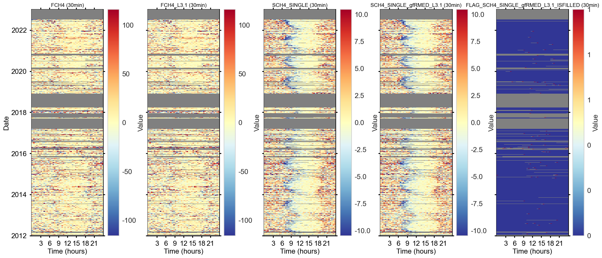
Report#
fpc.level31.report()
========================================
REPORT: STORAGE CORRECTION FOR FCH4
========================================
Swiss FluxNet processing chain, _L3.1: Storage Correction
The gap-filled storage term SCH4_SINGLE_gfRMED_L3.1 was added to flux FCH4.
The storage-corrected flux was stored as FCH4_L3.1.
The flux was available for 146409 records (FCH4).
The original, non-gapfilled storage term was available for 145935 records (SCH4_SINGLE).
The original storage term SCH4_SINGLE was missing for 474 flux records.
Without gap-filling the storage term (SCH4_SINGLE), 474 measured flux records (FCH4) are lost.
For this run, gap-filling of SCH4_SINGLE was * SELECTED *.
After gap-filling the storage term, it was available for an additional 474 records (SCH4_SINGLE_gfRMED_L3.1).
In the storage-corrected flux FCH4_L3.1 with 146409 records,
- 99.7% (145935 records) of used storage terms come from originally calculated data (SCH4_SINGLE)
- 0.3% (474 records) of used storage terms come from gap-filled data (SCH4_SINGLE_gfRMED_L3.1)
Stats for gap-filled storage terms:
NOV P01 MEDIAN P99
SCH4_SINGLE_gfRMED_L3.1 474 -10.094778 -0.079354 6.994461
Stats for measured storage terms:
NOV P01 MEDIAN P99
SCH4_SINGLE_gfRMED_L3.1 145935 -15.563748 -0.018668 14.312572
Optional: Analyze highest-quality flux (so far)#
Analysis of fluxes after Level-3.1 where the overall quality flag
QCF= 0This helps in understanding in what range the “true” flux occurs
Here, the highest-quality fluxes are additionally filtered for outlier values using the relatively fast Local Outlier Factor test
For this quick analysis, it is possible that the outlier test cuts off some “real” values that should be retained, but it nevertheless helps in understanding the flux range
QCF= 0 is best quality,QCF= medium quality,QCF= 2 bad quality and always rejectedThe difference between quality 0 and quality 1 or 2 is huge
analyze_highest_quality_flux(flux=fpc.fpc_df[fpc.filteredseries_hq.name], nighttime_flag=fpc.fpc_df['NIGHTTIME'])
>>> Removing outliers from highest-quality DAYTIME fluxes (FCH4_L3.1_QCF0)
>>> Outlier removal method: Local outlier factor across all data (n_neighbors=57, contamination=auto, repeat=False)
[LocalOutlierFactorAllData] running LocalOutlierFactorAllData ...
ITERATION#1: Total found outliers: 58 values (daytime+nighttime)
>>> Largest non-outlier flux >= 0 DAYTIME: 410.800763
>>> Smallest non-outlier flux >= 0 DAYTIME: 0.0014809999999999823
>>> Largest non-outlier flux < 0 DAYTIME: -0.00028159999999999297
>>> Smallest non-outlier flux < 0 DAYTIME: -65.93674
>>> Largest outlier flux >= 0 DAYTIME: 1234.5015
>>> Smallest outlier flux >= 0 DAYTIME: 433.65435
>>> Largest outlier flux < 0 DAYTIME: -68.834725
>>> Smallest outlier flux < 0 DAYTIME: -596.30213
>>> Removing outliers from highest-quality NIGHTTIME fluxes (FCH4_L3.1_QCF0)
>>> Outlier removal method: Local outlier factor across all data (n_neighbors=31, contamination=auto, repeat=False)
[LocalOutlierFactorAllData] running LocalOutlierFactorAllData ...
ITERATION#1: Total found outliers: 42 values (daytime+nighttime)
>>> Largest non-outlier flux >= 0 NIGHTTIME: 470.909
>>> Smallest non-outlier flux >= 0 NIGHTTIME: 0.0044800000000000395
>>> Largest non-outlier flux < 0 NIGHTTIME: -0.013889999999999958
>>> Smallest non-outlier flux < 0 NIGHTTIME: -58.37539
>>> Largest outlier flux >= 0 NIGHTTIME: 1139.5235
>>> Smallest outlier flux >= 0 NIGHTTIME: 483.24458799999996
>>> Largest outlier flux < 0 NIGHTTIME: -59.59287
>>> Smallest outlier flux < 0 NIGHTTIME: -727.068
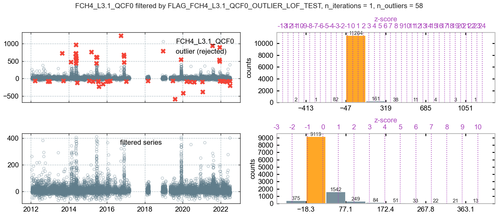
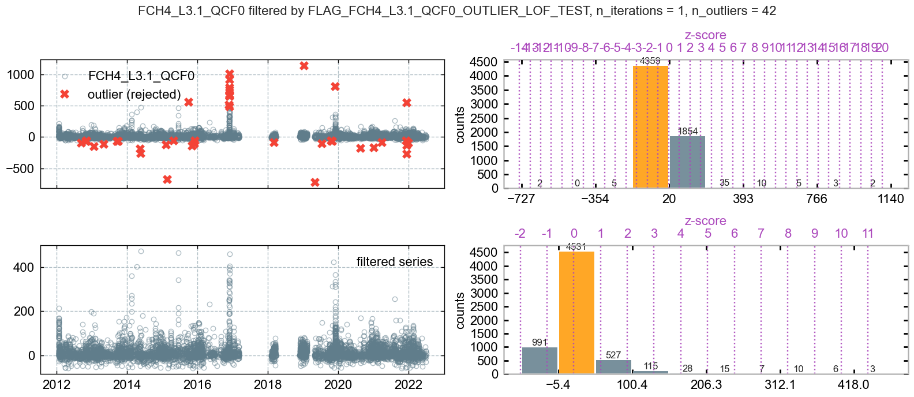
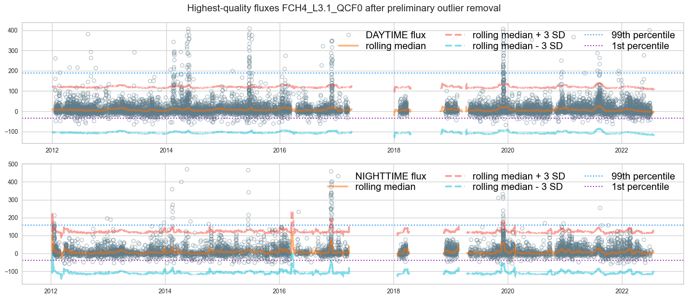
Level-3.2: OUTLIER DETECTION#
Running an outlier test creates a preview plot of the results
If the output looks as desired, run
fpc.level32_addflag()cell below the preview to accept the results you see in the plotAll subsequent tests will then be based on these results
This means that each test is run on the data already filtered by the previous test
Each test creates its own quality flag
At the end of Level-3.2, an overall quality flag
QCFis created that combines all of the individual flags into one single flag
Plot time series#
print(f"{fpc.filteredseries.name} \n(quality-controlled Level-3.1 version of {fpc.fluxcol})")
FCH4_L3.1_QCF
(quality-controlled Level-3.1 version of FCH4)
TimeSeries(series=fpc.fpc_df[fpc.filteredseries.name]).plot_interactive()
TimeSeries(series=fpc.fpc_df[fpc.filteredseries.name]).plot()
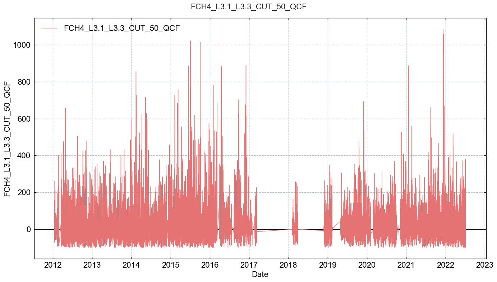
Initiate calculations#
fpc.level32_stepwise_outlier_detection()
Outlier flag: Absolute limits#
remove values outside a physically plausible range
typical value for CO2 flux
FC: +/-50 µmol m-2 s-1typical value for latent evaporation flux
LE: +800 / -50 W m-2typical value for sensible heat flux
H: +400 / -200 W m-2
# from diive.pkgs.outlierdetection.absolutelimits import AbsoluteLimits
# help(AbsoluteLimits)
MIN = -100
MAX = 1100
fpc.level32_flag_outliers_abslim_test(minval=MIN, maxval=MAX, showplot=True, verbose=True)
[AbsoluteLimits] running AbsoluteLimits ...
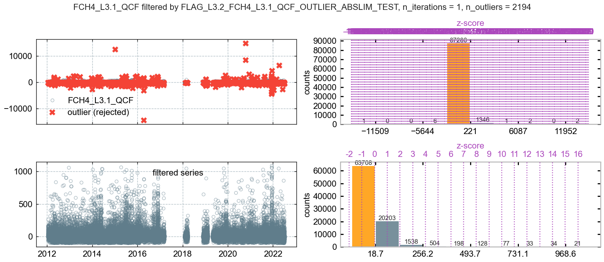
fpc.level32_addflag()
++Added flag column FLAG_L3.2_FCH4_L3.1_QCF_OUTLIER_ABSLIM_TEST to flag data
Outlier flag: Manual flag#
The interactive plot can be used to determine the exact start and end of time ranges or data points that need to be removed, e.g. due to known instrument failure
# from diive.pkgs.outlierdetection.manualremoval import ManualRemoval
# help(ManualRemoval)
# fpc.level32.showplot_cleaned(interactive=True) # True or False
# fpc.level32.showplot_cleaned(interactive=False) # True or False
# REMOVE_DATES = [
# ['2008-12-01', '2009-05-01'], # Removes date range between two datetimes (inclusive)
# # ['2008-12-01 00:00:15', '2022-05-03 06:45:00'], # Removes date range between two datetimes (inclusive)
# # '2023-12-12 12:45:00' # Removes data point with specific timestamp
# ]
# fpc.level32_flag_manualremoval_test(
# remove_dates=REMOVE_DATES,
# showplot=True, verbose=True)
# fpc.level32_addflag()
# fpc.level32.showplot_cleaned(interactive=True) # True or False
Outlier flag: Hampel filter, separate for daytime and nighttime#
Recommended filter
Is slow compared to other filters:
tested with 1 year of 30MIN time resolution data and it needed approx. 43 seconds on a fast desktop computer
# from diive.pkgs.outlierdetection.hampel import Hampel
# help(Hampel)
# %%time
# WINDOW_LENGTH = 48 * 3
# N_SIGMA_DT = 36
# N_SIGMA_NT = 36
# fpc.level32_flag_outliers_hampel_dtnt_test(window_length=WINDOW_LENGTH, n_sigma_dt=N_SIGMA_DT, n_sigma_nt=N_SIGMA_NT,
# showplot=True, verbose=True, repeat=True)
# fpc.level32_addflag()
Outlier flag: z-score across all data#
# from diive.pkgs.outlierdetection.zscore import zScore
# help(zScore)
# THRES_ZSCORE = 6
# fpc.level32_flag_outliers_zscore_test(thres_zscore=THRES_ZSCORE, showplot=True, verbose=True, repeat=True)
# fpc.level32_addflag()
Outlier flag: Hampel filter#
Recommended filter
Is slow compared to other filters:
tested with 1 year of 30MIN time resolution data and it needed approx. 33 seconds on a fast desktop computer
tested with 19 years of 30MIN time resolution data and it needed approx. 20 minutes on a fast desktop computer
# from diive.pkgs.outlierdetection.hampel import Hampel
# help(Hampel)
# WINDOW_LENGTH = 48 * 3
# N_SIGMA = 32
# # %%time
# fpc.level32_flag_outliers_hampel_test(window_length=WINDOW_LENGTH, n_sigma=N_SIGMA, showplot=True, verbose=True, repeat=True)
# fpc.level32_addflag()
Outlier flag: z-score over all data, separate for daytime and nighttime#
# from diive.pkgs.outlierdetection.zscore import zScoreDaytimeNighttime
# help(zScoreDaytimeNighttime)
# THRES_ZSCORE = 5
# fpc.level32_flag_outliers_zscore_dtnt_test(thres_zscore=THRES_ZSCORE, showplot=True, verbose=True, repeat=True)
# fpc.level32_addflag()
Outlier flag: Rolling z-score over all data#
# from diive.pkgs.outlierdetection.zscore import zScoreRolling
# help(zScoreRolling)
THRES_ZSCORE = 8
WINSIZE = 48 * 3
fpc.level32_flag_outliers_zscore_rolling_test(winsize=WINSIZE, thres_zscore=THRES_ZSCORE, showplot=True, verbose=True, repeat=True)
[zScoreRolling] running zScoreRolling ...
ITERATION#1: Total found outliers: 135 values
ITERATION#2: Total found outliers: 14 values
ITERATION#3: Total found outliers: 1 values
ITERATION#4: Total found outliers: 0 values
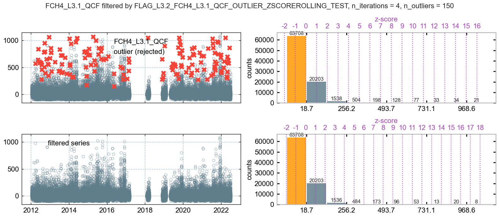
fpc.level32_addflag()
++Added flag column FLAG_L3.2_FCH4_L3.1_QCF_OUTLIER_ZSCOREROLLING_TEST to flag data
Outlier flag: Local standard deviation, with rolling median and rolling standard deviation#
# from diive.pkgs.outlierdetection.localsd import LocalSD
# help(LocalSD)
N_SD = 7
WINSIZE = 48 * 3
fpc.level32_flag_outliers_localsd_test(n_sd=N_SD, winsize=WINSIZE, constant_sd=False, showplot=True, verbose=True, repeat=True)
[LocalSD] running LocalSD ...
ITERATION#1: Total found outliers: 122 values
ITERATION#2: Total found outliers: 27 values
ITERATION#3: Total found outliers: 2 values
ITERATION#4: Total found outliers: 0 values
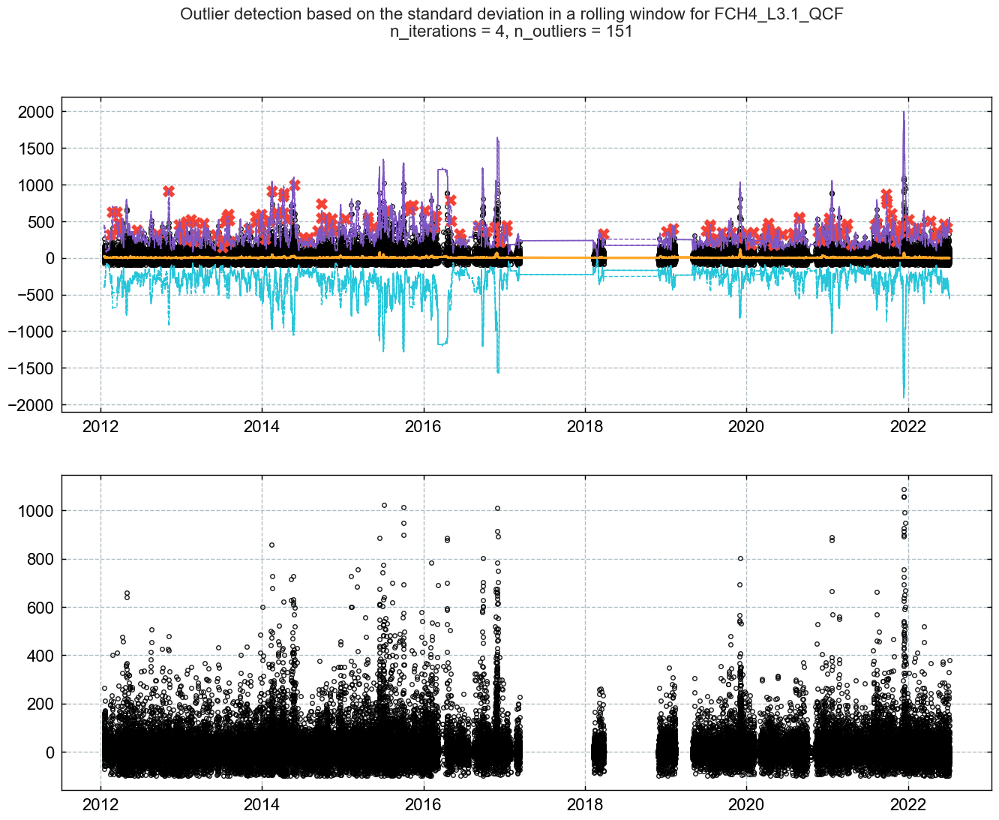
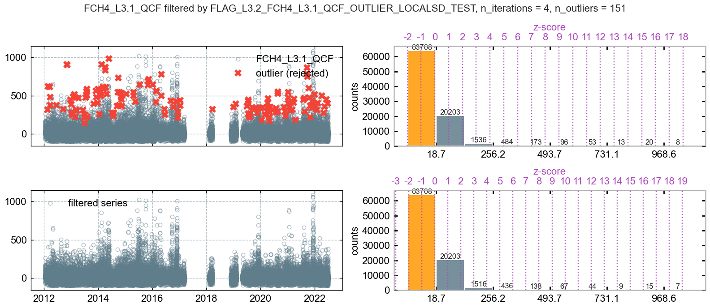
fpc.level32_addflag()
++Added flag column FLAG_L3.2_FCH4_L3.1_QCF_OUTLIER_LOCALSD_TEST to flag data
Outlier flag: Local standard deviation, with rolling median and constant standard deviation#
keep standard deviation constant by setting parameter
constant_sd=True
# N_SD = 8
# WINSIZE = 48 * 3
# fpc.level32_flag_outliers_localsd_test(n_sd=N_SD, winsize=WINSIZE, constant_sd=True, showplot=True, verbose=True, repeat=True)
# fpc.level32_addflag()
Outlier flag: Increments z-score#
# from diive.pkgs.outlierdetection.incremental import zScoreIncrements
# help(zScoreIncrements)
# THRES_ZSCORE = 4
# fpc.level32_flag_outliers_increments_zcore_test(thres_zscore=THRES_ZSCORE, showplot=True, verbose=True, repeat=True)
# fpc.level32_addflag()
Outlier flag: Local outlier factor, daytime/nighttime#
Test is run separately for daytime and nighttime data
Description of local outlier factor: here
# from diive.pkgs.outlierdetection.lof import LocalOutlierFactorDaytimeNighttime
# help(LocalOutlierFactorDaytimeNighttime)
# N_NEIGHBORS = None
# CONTAMINATION = None
# fpc.level32_flag_outliers_lof_dtnt_test(n_neighbors=N_NEIGHBORS, contamination=CONTAMINATION, showplot=True, verbose=True, repeat=False, n_jobs=-1)
# fpc.level32_addflag()
Outlier flag: Local outlier factor#
Test is run across all data
Description of local outlier factor: here
# from diive.pkgs.outlierdetection.lof import LocalOutlierFactorAllData
# help(LocalOutlierFactorAllData)
# N_NEIGHBORS = 24
# CONTAMINATION = None
# fpc.level32_flag_outliers_lof_test(n_neighbors=N_NEIGHBORS, contamination=CONTAMINATION, showplot=True, verbose=True, repeat=False, n_jobs=-1)
# fpc.level32_addflag()
Outlier flag: Absolute limits, separate for daytime and nighttime data#
# from diive.pkgs.outlierdetection.absolutelimits import AbsoluteLimitsDaytimeNighttime
# help(AbsoluteLimitsDaytimeNighttime)
# MIN_DT = -5
# MAX_DT = 70
# MIN_NT = -5
# MAX_NT = 40
# fpc.level32_flag_outliers_abslim_dtnt_test(daytime_minmax=[MIN_DT, MAX_DT], nighttime_minmax=[MIN_NT, MAX_NT], showplot=True, verbose=True)
# fpc.level32_addflag()
Outlier flag: Trim nighttime flux data#
# from diive.pkgs.outlierdetection.trim import TrimLow
# help(TrimLow)
# fpc.level32_flag_outliers_trim_low_test(trim_nighttime=True, lower_limit=-5, showplot=True, verbose=True)
# fpc.level32_addflag()
Finalize Level-3.2: Calculate overall quality flag (so far)#
fpc.finalize_level32()
++Added new column FLAG_L3.2_FCH4_L3.1_QCF_OUTLIER_ABSLIM_TEST.
++Added new column FLAG_L3.2_FCH4_L3.1_QCF_OUTLIER_ZSCOREROLLING_TEST.
++Added new column FLAG_L3.2_FCH4_L3.1_QCF_OUTLIER_LOCALSD_TEST.
++Added new column SUM_L3.2_FCH4_L3.1_HARDFLAGS.
++Added new column SUM_L3.2_FCH4_L3.1_SOFTFLAGS.
++Added new column SUM_L3.2_FCH4_L3.1_FLAGS.
++Added new column FLAG_L3.2_FCH4_L3.1_QCF.
++Added new column FCH4_L3.1_L3.2_QCF.
++Added new column FCH4_L3.1_L3.2_QCF0.
Available Level-3.2 variables#
This shows all available Level-3.2 variables for this flux
[x for x in fpc.fpc_df.columns if 'L3.2' in x]
['FLAG_L3.2_FCH4_L3.1_QCF_OUTLIER_ABSLIM_TEST',
'FLAG_L3.2_FCH4_L3.1_QCF_OUTLIER_ZSCOREROLLING_TEST',
'FLAG_L3.2_FCH4_L3.1_QCF_OUTLIER_LOCALSD_TEST',
'SUM_L3.2_FCH4_L3.1_HARDFLAGS',
'SUM_L3.2_FCH4_L3.1_SOFTFLAGS',
'SUM_L3.2_FCH4_L3.1_FLAGS',
'FLAG_L3.2_FCH4_L3.1_QCF',
'FCH4_L3.1_L3.2_QCF',
'FCH4_L3.1_L3.2_QCF0']
Plot filtered flux after Level-3.2#
In the four panels, from left to right:
flux after Level-3.1, before outlier removal
flux after Level-3.2, after outlier removal
sum of the individual test flags
overall flag
QCF(quality control flag), where0=best quality,1=medium quality,2=bad quality
fpc.level32_qcf.showplot_qcf_heatmaps()
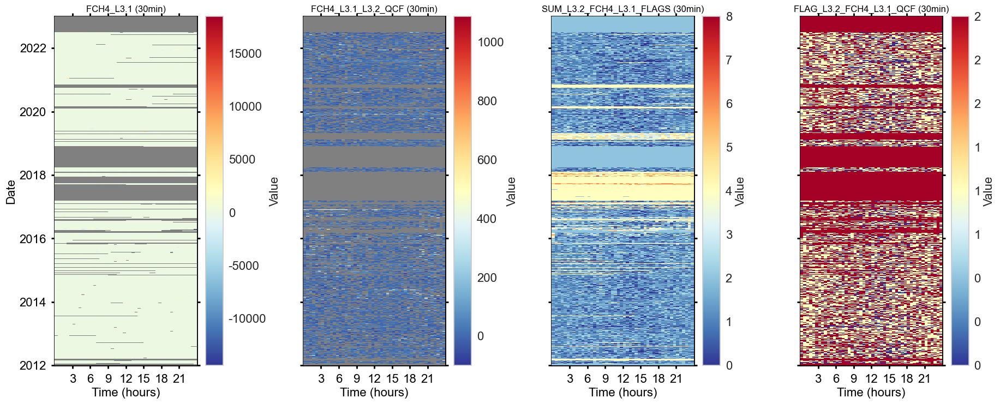
TimeSeries(series=fpc.filteredseries).plot()
# TimeSeries(series=fpc.filteredseries).plot_interactive()
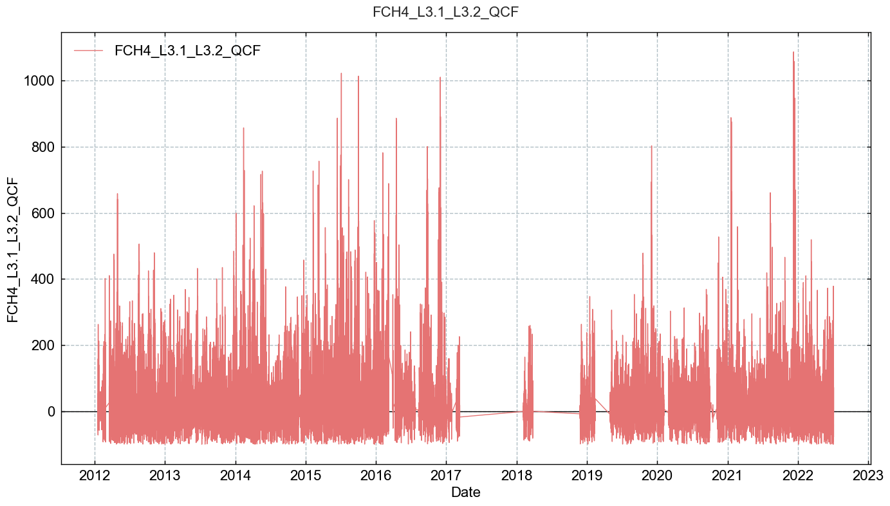
# fpc.level32_qcf.showplot_qcf_timeseries()
Reports#
fpc.level32_qcf.report_qcf_evolution()
========================================
QCF FLAG EVOLUTION
========================================
This output shows the evolution of the QCF overall quality flag
when test flags are applied sequentially to the variable FCH4_L3.1.
Number of FCH4_L3.1 records before QC: 146409
+++ FLAG_L2_FCH4_MISSING_TEST rejected 0 values (+0.00%) TOTALS: flag 0: 146409 (100.00%) / flag 1: 0 (0.00%) / flag 2: 0 (0.00%)
+++ FLAG_L2_FCH4_SSITC_TEST rejected 49805 values (+34.02%) TOTALS: flag 0: 20676 (14.12%) / flag 1: 75928 (51.86%) / flag 2: 49805 (34.02%)
+++ FLAG_L2_FCH4_COMPLETENESS_TEST rejected 3210 values (+2.19%) TOTALS: flag 0: 18657 (12.74%) / flag 1: 74737 (51.05%) / flag 2: 53015 (36.21%)
+++ FLAG_L2_FCH4_SCF_TEST rejected 76 values (+0.05%) TOTALS: flag 0: 18374 (12.55%) / flag 1: 74944 (51.19%) / flag 2: 53091 (36.26%)
+++ FLAG_L2_FCH4_CH4_VM97_SPIKE_HF_TEST rejected 0 values (+0.00%) TOTALS: flag 0: 18374 (12.55%) / flag 1: 74944 (51.19%) / flag 2: 53091 (36.26%)
+++ FLAG_L2_FCH4_CH4_VM97_AMPLITUDE_RESOLUTION_HF_TEST rejected 4389 values (+3.00%) TOTALS: flag 0: 17861 (12.20%) / flag 1: 71068 (48.54%) / flag 2: 57480 (39.26%)
+++ FLAG_L2_FCH4_CH4_VM97_DROPOUT_TEST rejected 0 values (+0.00%) TOTALS: flag 0: 17861 (12.20%) / flag 1: 71068 (48.54%) / flag 2: 57480 (39.26%)
+++ FLAG_L2_FCH4_VM97_AOA_HF_TEST rejected 291 values (+0.20%) TOTALS: flag 0: 17842 (12.19%) / flag 1: 70796 (48.35%) / flag 2: 57771 (39.46%)
+++ FLAG_L3.2_FCH4_L3.1_QCF_OUTLIER_ABSLIM_TEST rejected 2194 values (+1.50%) TOTALS: flag 0: 17815 (12.17%) / flag 1: 68629 (46.87%) / flag 2: 59965 (40.96%)
+++ FLAG_L3.2_FCH4_L3.1_QCF_OUTLIER_ZSCOREROLLING_TEST rejected 150 values (+0.10%) TOTALS: flag 0: 17811 (12.17%) / flag 1: 68483 (46.78%) / flag 2: 60115 (41.06%)
+++ FLAG_L3.2_FCH4_L3.1_QCF_OUTLIER_LOCALSD_TEST rejected 151 values (+0.10%) TOTALS: flag 0: 17810 (12.16%) / flag 1: 68333 (46.67%) / flag 2: 60266 (41.16%)
In total, 60266 (41.16%) of the available records were rejected in this step.
INFO Rejected DAYTIME records where QCF flag >= 2
INFO Rejected NIGHTTIME records where QCF flag >= 2
fpc.level32_qcf.report_qcf_series()
========================================
SUMMARY: FLAG_L3.2_FCH4_L3.1_QCF, QCF FLAG FOR FCH4_L3.1
========================================
Between 2012-01-01 00:15 and 2022-12-31 23:45 ...
Total flux records BEFORE quality checks: 146409 (75.91% of potential)
Available flux records AFTER quality checks: 86143 (58.84% of total)
Rejected flux records: 60266 (41.16% of total)
Potential flux records: 192864
Potential flux records missed: 46455 (24.09% of potential)
fpc.level32_qcf.report_qcf_flags()
========================================
REPORT: FLAGS INCL. MISSING VALUES
========================================
Stats with missing values in the dataset
FLAG_L2_FCH4_MISSING_TEST:
OVERALL flag 0.0: 146409 values (75.91%)
OVERALL flag 2.0: 46455 values (24.09%)
OVERALL flag missing: 0 values (0.00%)
DAYTIME flag 0.0: 71337 values (75.29%)
DAYTIME flag 2.0: 23410 values (24.71%)
DAYTIME flag missing: 0 values (0.00%)
NIGHTTIME flag 0.0: 75072 values (76.51%)
NIGHTTIME flag 2.0: 23045 values (23.49%)
NIGHTTIME flag missing: 0 values (0.00%)
FLAG_L2_FCH4_SSITC_TEST:
OVERALL flag 0.0: 20676 values (10.72%)
OVERALL flag 1.0: 75928 values (39.37%)
OVERALL flag 2.0: 49805 values (25.82%)
OVERALL flag missing: 46455 values (24.09%)
DAYTIME flag 0.0: 13185 values (13.92%)
DAYTIME flag 1.0: 34299 values (36.20%)
DAYTIME flag 2.0: 23853 values (25.18%)
DAYTIME flag missing: 23410 values (24.71%)
NIGHTTIME flag 0.0: 7491 values (7.63%)
NIGHTTIME flag 1.0: 41629 values (42.43%)
NIGHTTIME flag 2.0: 25952 values (26.45%)
NIGHTTIME flag missing: 23045 values (23.49%)
FLAG_L2_FCH4_COMPLETENESS_TEST:
OVERALL flag 0.0: 138775 values (71.95%)
OVERALL flag 1.0: 3342 values (1.73%)
OVERALL flag 2.0: 4296 values (2.23%)
OVERALL flag missing: 46451 values (24.08%)
DAYTIME flag 0.0: 67871 values (71.63%)
DAYTIME flag 1.0: 1706 values (1.80%)
DAYTIME flag 2.0: 1763 values (1.86%)
DAYTIME flag missing: 23407 values (24.70%)
NIGHTTIME flag 0.0: 70904 values (72.26%)
NIGHTTIME flag 1.0: 1636 values (1.67%)
NIGHTTIME flag 2.0: 2533 values (2.58%)
NIGHTTIME flag missing: 23044 values (23.49%)
FLAG_L2_FCH4_SCF_TEST:
OVERALL flag 0.0: 145162 values (75.27%)
OVERALL flag 1.0: 1139 values (0.59%)
OVERALL flag 2.0: 108 values (0.06%)
OVERALL flag missing: 46455 values (24.09%)
DAYTIME flag 0.0: 70864 values (74.79%)
DAYTIME flag 1.0: 444 values (0.47%)
DAYTIME flag 2.0: 29 values (0.03%)
DAYTIME flag missing: 23410 values (24.71%)
NIGHTTIME flag 0.0: 74298 values (75.72%)
NIGHTTIME flag 1.0: 695 values (0.71%)
NIGHTTIME flag 2.0: 79 values (0.08%)
NIGHTTIME flag missing: 23045 values (23.49%)
FLAG_L2_FCH4_CH4_VM97_SPIKE_HF_TEST:
OVERALL flag 0.0: 168223 values (87.22%)
OVERALL flag missing: 24641 values (12.78%)
DAYTIME flag 0.0: 82366 values (86.93%)
DAYTIME flag missing: 12381 values (13.07%)
NIGHTTIME flag 0.0: 85857 values (87.50%)
NIGHTTIME flag missing: 12260 values (12.50%)
FLAG_L2_FCH4_CH4_VM97_AMPLITUDE_RESOLUTION_HF_TEST:
OVERALL flag 0.0: 136310 values (70.68%)
OVERALL flag 2.0: 31913 values (16.55%)
OVERALL flag missing: 24641 values (12.78%)
DAYTIME flag 0.0: 66671 values (70.37%)
DAYTIME flag 2.0: 15695 values (16.57%)
DAYTIME flag missing: 12381 values (13.07%)
NIGHTTIME flag 0.0: 69639 values (70.98%)
NIGHTTIME flag 2.0: 16218 values (16.53%)
NIGHTTIME flag missing: 12260 values (12.50%)
FLAG_L2_FCH4_CH4_VM97_DROPOUT_TEST:
OVERALL flag 0.0: 168223 values (87.22%)
OVERALL flag missing: 24641 values (12.78%)
DAYTIME flag 0.0: 82366 values (86.93%)
DAYTIME flag missing: 12381 values (13.07%)
NIGHTTIME flag 0.0: 85857 values (87.50%)
NIGHTTIME flag missing: 12260 values (12.50%)
FLAG_L2_FCH4_VM97_AOA_HF_TEST:
OVERALL flag 0.0: 941 values (0.49%)
OVERALL flag 2.0: 538 values (0.28%)
OVERALL flag missing: 191385 values (99.23%)
DAYTIME flag 0.0: 477 values (0.50%)
DAYTIME flag 2.0: 406 values (0.43%)
DAYTIME flag missing: 93864 values (99.07%)
NIGHTTIME flag 0.0: 464 values (0.47%)
NIGHTTIME flag 2.0: 132 values (0.13%)
NIGHTTIME flag missing: 97521 values (99.39%)
FLAG_L2_FCH4_QCF:
OVERALL flag 0.0: 17842 values (9.25%)
OVERALL flag 1.0: 70796 values (36.71%)
OVERALL flag 2.0: 104226 values (54.04%)
OVERALL flag missing: 0 values (0.00%)
DAYTIME flag 0.0: 11567 values (12.21%)
DAYTIME flag 1.0: 32073 values (33.85%)
DAYTIME flag 2.0: 51107 values (53.94%)
DAYTIME flag missing: 0 values (0.00%)
NIGHTTIME flag 0.0: 6275 values (6.40%)
NIGHTTIME flag 1.0: 38723 values (39.47%)
NIGHTTIME flag 2.0: 53119 values (54.14%)
NIGHTTIME flag missing: 0 values (0.00%)
FLAG_L3.2_FCH4_L3.1_QCF_OUTLIER_ABSLIM_TEST:
OVERALL flag 0.0: 190670 values (98.86%)
OVERALL flag 2.0: 2194 values (1.14%)
OVERALL flag missing: 0 values (0.00%)
DAYTIME flag 0.0: 94080 values (99.30%)
DAYTIME flag 2.0: 667 values (0.70%)
DAYTIME flag missing: 0 values (0.00%)
NIGHTTIME flag 0.0: 96590 values (98.44%)
NIGHTTIME flag 2.0: 1527 values (1.56%)
NIGHTTIME flag missing: 0 values (0.00%)
FLAG_L3.2_FCH4_L3.1_QCF_OUTLIER_ZSCOREROLLING_TEST:
OVERALL flag 0.0: 192714 values (99.92%)
OVERALL flag 2.0: 150 values (0.08%)
OVERALL flag missing: 0 values (0.00%)
DAYTIME flag 0.0: 94709 values (99.96%)
DAYTIME flag 2.0: 38 values (0.04%)
DAYTIME flag missing: 0 values (0.00%)
NIGHTTIME flag 0.0: 98005 values (99.89%)
NIGHTTIME flag 2.0: 112 values (0.11%)
NIGHTTIME flag missing: 0 values (0.00%)
FLAG_L3.2_FCH4_L3.1_QCF_OUTLIER_LOCALSD_TEST:
OVERALL flag 0.0: 192713 values (99.92%)
OVERALL flag 2.0: 151 values (0.08%)
OVERALL flag missing: 0 values (0.00%)
DAYTIME flag 0.0: 94701 values (99.95%)
DAYTIME flag 2.0: 46 values (0.05%)
DAYTIME flag missing: 0 values (0.00%)
NIGHTTIME flag 0.0: 98012 values (99.89%)
NIGHTTIME flag 2.0: 105 values (0.11%)
NIGHTTIME flag missing: 0 values (0.00%)
FLAG_L3.2_FCH4_L3.1_QCF:
OVERALL flag 0.0: 17810 values (9.23%)
OVERALL flag 1.0: 68333 values (35.43%)
OVERALL flag 2.0: 106721 values (55.33%)
OVERALL flag missing: 0 values (0.00%)
DAYTIME flag 0.0: 11551 values (12.19%)
DAYTIME flag 1.0: 31338 values (33.08%)
DAYTIME flag 2.0: 51858 values (54.73%)
DAYTIME flag missing: 0 values (0.00%)
NIGHTTIME flag 0.0: 6259 values (6.38%)
NIGHTTIME flag 1.0: 36995 values (37.70%)
NIGHTTIME flag 2.0: 54863 values (55.92%)
NIGHTTIME flag missing: 0 values (0.00%)
========================================
REPORT: FLAGS FOR AVAILABLE RECORDS
========================================
Stats after removal of missing values
FLAG_L2_FCH4_MISSING_TEST:
OVERALL flag 0.0: 146409 values (100.00%)
OVERALL flag missing: 0 values (0.00%)
DAYTIME flag 0.0: 71337 values (100.00%)
DAYTIME flag missing: 0 values (0.00%)
NIGHTTIME flag 0.0: 75072 values (100.00%)
NIGHTTIME flag missing: 0 values (0.00%)
FLAG_L2_FCH4_SSITC_TEST:
OVERALL flag 0.0: 20676 values (14.12%)
OVERALL flag 1.0: 75928 values (51.86%)
OVERALL flag 2.0: 49805 values (34.02%)
OVERALL flag missing: 0 values (0.00%)
DAYTIME flag 0.0: 13185 values (18.48%)
DAYTIME flag 1.0: 34299 values (48.08%)
DAYTIME flag 2.0: 23853 values (33.44%)
DAYTIME flag missing: 0 values (0.00%)
NIGHTTIME flag 0.0: 7491 values (9.98%)
NIGHTTIME flag 1.0: 41629 values (55.45%)
NIGHTTIME flag 2.0: 25952 values (34.57%)
NIGHTTIME flag missing: 0 values (0.00%)
FLAG_L2_FCH4_COMPLETENESS_TEST:
OVERALL flag 0.0: 138775 values (94.79%)
OVERALL flag 1.0: 3342 values (2.28%)
OVERALL flag 2.0: 4292 values (2.93%)
OVERALL flag missing: 0 values (0.00%)
DAYTIME flag 0.0: 67871 values (95.14%)
DAYTIME flag 1.0: 1706 values (2.39%)
DAYTIME flag 2.0: 1760 values (2.47%)
DAYTIME flag missing: 0 values (0.00%)
NIGHTTIME flag 0.0: 70904 values (94.45%)
NIGHTTIME flag 1.0: 1636 values (2.18%)
NIGHTTIME flag 2.0: 2532 values (3.37%)
NIGHTTIME flag missing: 0 values (0.00%)
FLAG_L2_FCH4_SCF_TEST:
OVERALL flag 0.0: 145162 values (99.15%)
OVERALL flag 1.0: 1139 values (0.78%)
OVERALL flag 2.0: 108 values (0.07%)
OVERALL flag missing: 0 values (0.00%)
DAYTIME flag 0.0: 70864 values (99.34%)
DAYTIME flag 1.0: 444 values (0.62%)
DAYTIME flag 2.0: 29 values (0.04%)
DAYTIME flag missing: 0 values (0.00%)
NIGHTTIME flag 0.0: 74298 values (98.97%)
NIGHTTIME flag 1.0: 695 values (0.93%)
NIGHTTIME flag 2.0: 79 values (0.11%)
NIGHTTIME flag missing: 0 values (0.00%)
FLAG_L2_FCH4_CH4_VM97_SPIKE_HF_TEST:
OVERALL flag 0.0: 146409 values (100.00%)
OVERALL flag missing: 0 values (0.00%)
DAYTIME flag 0.0: 71337 values (100.00%)
DAYTIME flag missing: 0 values (0.00%)
NIGHTTIME flag 0.0: 75072 values (100.00%)
NIGHTTIME flag missing: 0 values (0.00%)
FLAG_L2_FCH4_CH4_VM97_AMPLITUDE_RESOLUTION_HF_TEST:
OVERALL flag 0.0: 136172 values (93.01%)
OVERALL flag 2.0: 10237 values (6.99%)
OVERALL flag missing: 0 values (0.00%)
DAYTIME flag 0.0: 66552 values (93.29%)
DAYTIME flag 2.0: 4785 values (6.71%)
DAYTIME flag missing: 0 values (0.00%)
NIGHTTIME flag 0.0: 69620 values (92.74%)
NIGHTTIME flag 2.0: 5452 values (7.26%)
NIGHTTIME flag missing: 0 values (0.00%)
FLAG_L2_FCH4_CH4_VM97_DROPOUT_TEST:
OVERALL flag 0.0: 146409 values (100.00%)
OVERALL flag missing: 0 values (0.00%)
DAYTIME flag 0.0: 71337 values (100.00%)
DAYTIME flag missing: 0 values (0.00%)
NIGHTTIME flag 0.0: 75072 values (100.00%)
NIGHTTIME flag missing: 0 values (0.00%)
FLAG_L2_FCH4_VM97_AOA_HF_TEST:
OVERALL flag 0.0: 936 values (0.64%)
OVERALL flag 2.0: 538 values (0.37%)
OVERALL flag missing: 144935 values (98.99%)
DAYTIME flag 0.0: 472 values (0.66%)
DAYTIME flag 2.0: 406 values (0.57%)
DAYTIME flag missing: 70459 values (98.77%)
NIGHTTIME flag 0.0: 464 values (0.62%)
NIGHTTIME flag 2.0: 132 values (0.18%)
NIGHTTIME flag missing: 74476 values (99.21%)
FLAG_L2_FCH4_QCF:
OVERALL flag 0.0: 17842 values (12.19%)
OVERALL flag 1.0: 70796 values (48.35%)
OVERALL flag 2.0: 57771 values (39.46%)
OVERALL flag missing: 0 values (0.00%)
DAYTIME flag 0.0: 11567 values (16.21%)
DAYTIME flag 1.0: 32073 values (44.96%)
DAYTIME flag 2.0: 27697 values (38.83%)
DAYTIME flag missing: 0 values (0.00%)
NIGHTTIME flag 0.0: 6275 values (8.36%)
NIGHTTIME flag 1.0: 38723 values (51.58%)
NIGHTTIME flag 2.0: 30074 values (40.06%)
NIGHTTIME flag missing: 0 values (0.00%)
FLAG_L3.2_FCH4_L3.1_QCF_OUTLIER_ABSLIM_TEST:
OVERALL flag 0.0: 144215 values (98.50%)
OVERALL flag 2.0: 2194 values (1.50%)
OVERALL flag missing: 0 values (0.00%)
DAYTIME flag 0.0: 70670 values (99.07%)
DAYTIME flag 2.0: 667 values (0.93%)
DAYTIME flag missing: 0 values (0.00%)
NIGHTTIME flag 0.0: 73545 values (97.97%)
NIGHTTIME flag 2.0: 1527 values (2.03%)
NIGHTTIME flag missing: 0 values (0.00%)
FLAG_L3.2_FCH4_L3.1_QCF_OUTLIER_ZSCOREROLLING_TEST:
OVERALL flag 0.0: 146259 values (99.90%)
OVERALL flag 2.0: 150 values (0.10%)
OVERALL flag missing: 0 values (0.00%)
DAYTIME flag 0.0: 71299 values (99.95%)
DAYTIME flag 2.0: 38 values (0.05%)
DAYTIME flag missing: 0 values (0.00%)
NIGHTTIME flag 0.0: 74960 values (99.85%)
NIGHTTIME flag 2.0: 112 values (0.15%)
NIGHTTIME flag missing: 0 values (0.00%)
FLAG_L3.2_FCH4_L3.1_QCF_OUTLIER_LOCALSD_TEST:
OVERALL flag 0.0: 146258 values (99.90%)
OVERALL flag 2.0: 151 values (0.10%)
OVERALL flag missing: 0 values (0.00%)
DAYTIME flag 0.0: 71291 values (99.94%)
DAYTIME flag 2.0: 46 values (0.06%)
DAYTIME flag missing: 0 values (0.00%)
NIGHTTIME flag 0.0: 74967 values (99.86%)
NIGHTTIME flag 2.0: 105 values (0.14%)
NIGHTTIME flag missing: 0 values (0.00%)
FLAG_L3.2_FCH4_L3.1_QCF:
OVERALL flag 0.0: 17810 values (12.16%)
OVERALL flag 1.0: 68333 values (46.67%)
OVERALL flag 2.0: 60266 values (41.16%)
OVERALL flag missing: 0 values (0.00%)
DAYTIME flag 0.0: 11551 values (16.19%)
DAYTIME flag 1.0: 31338 values (43.93%)
DAYTIME flag 2.0: 28448 values (39.88%)
DAYTIME flag missing: 0 values (0.00%)
NIGHTTIME flag 0.0: 6259 values (8.34%)
NIGHTTIME flag 1.0: 36995 values (49.28%)
NIGHTTIME flag 2.0: 31818 values (42.38%)
NIGHTTIME flag missing: 0 values (0.00%)
Save Level-3.2 results to file#
If needed, save results so far (input data and all created variables, e.g. flags and filtered fluxes) to a file
This can be useful if e.g. USTAR filtering is not needed and gap-filling is done elsewhere (ReddyProc…)
# results_df = fpc.get_data()
# filename = "51.1_FluxProcessingChain_after-L3.3_NEE"
# results_df.to_csv(f"{filename}.csv", index=True)
# save_parquet(data=results_df, filename=filename)
Level-3.3: USTAR FILTERING#
Daytime and nighttime data are filtered based on USTAR thresholds
Example USTAR thresholds from the analysis done by FLUXNET (2005-2023) for the intensively managed grassland CH-CHA, Chamau:
CUT_16:
0.0529445CUT_50:
0.0698982CUT_84:
0.0928408
The USTAR filtering is not applied to H and LE, because it has not been proved that when there are CO2 advective fluxes, these also impact energy fluxes, specifically due to the fact that when advection is in general large (nighttime), energy fluxes are small.
USTAR_SCENARIOS = ['CUT_50']
USTAR_THRESHOLDS = [0.0698982]
# USTAR_SCENARIOS = ['CUT_16', 'CUT_50', 'CUT_84']
# USTAR_THRESHOLDS = [0.0529445, 0.0698982, 0.0928408]
fpc.level33_constant_ustar(thresholds=USTAR_THRESHOLDS,
threshold_labels=USTAR_SCENARIOS,
showplot=False)
[FlagSingleConstantUstarThreshold] running FlagSingleConstantUstarThreshold ...
Total found outliers for USTAR threshold _L3.3_CUT_50 0.0698982: 51101 values
Finalize Level-3.3: Caculate overall final quality flag#
# Finalize: stores results for each USTAR scenario in a dict
fpc.finalize_level33()
Calculating overall quality flag QCF for USTAR scenario CUT_50...
++Added new column FLAG_L3.3_CUT_50_FCH4_L3.1_USTAR_TEST.
++Added new column SUM_L3.3_CUT_50_FCH4_L3.1_HARDFLAGS.
++Added new column SUM_L3.3_CUT_50_FCH4_L3.1_SOFTFLAGS.
++Added new column SUM_L3.3_CUT_50_FCH4_L3.1_FLAGS.
++Added new column FLAG_L3.3_CUT_50_FCH4_L3.1_QCF.
++Added new column FCH4_L3.1_L3.3_CUT_50_QCF.
++Added new column FCH4_L3.1_L3.3_CUT_50_QCF0.
Available Level-3.3 variables#
This shows all available Level-3.3 variables for this flux
[x for x in fpc.fpc_df.columns if 'L3.3' in x]
['FLAG_L3.3_CUT_50_FCH4_L3.1_USTAR_TEST',
'SUM_L3.3_CUT_50_FCH4_L3.1_HARDFLAGS',
'SUM_L3.3_CUT_50_FCH4_L3.1_SOFTFLAGS',
'SUM_L3.3_CUT_50_FCH4_L3.1_FLAGS',
'FLAG_L3.3_CUT_50_FCH4_L3.1_QCF',
'FCH4_L3.1_L3.3_CUT_50_QCF',
'FCH4_L3.1_L3.3_CUT_50_QCF0']
Plot filtered flux after Level-3.3#
In the four panels, from left to right:
flux after Level-3.1, before outlier removal and USTAR filtering
flux after Level-3.3, after outlier removal and USTAR filtering
sum of the individual test flags
overall flag
QCF(quality control flag), where0=best quality,1=medium quality,2=bad quality
for key, value in fpc.level33_qcf.items():
# TimeSeries(series=fpc.fpc_df[fluxhq]).plot_interactive()
# TimeSeries(series=fpc.fpc_df[FLUXVAR33QCF[key].name]).plot()
fpc.level33_qcf[key].showplot_qcf_heatmaps()
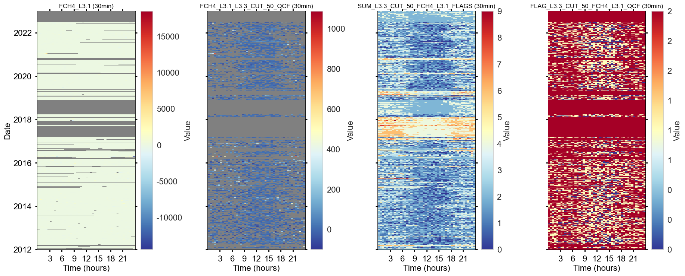
Reports#
for key, value in fpc.level33_qcf.items():
fpc.level33_qcf[key].report_qcf_evolution()
========================================
QCF FLAG EVOLUTION
========================================
This output shows the evolution of the QCF overall quality flag
when test flags are applied sequentially to the variable FCH4_L3.1.
Number of FCH4_L3.1 records before QC: 146409
+++ FLAG_L2_FCH4_MISSING_TEST rejected 0 values (+0.00%) TOTALS: flag 0: 146409 (100.00%) / flag 1: 0 (0.00%) / flag 2: 0 (0.00%)
+++ FLAG_L2_FCH4_SSITC_TEST rejected 49805 values (+34.02%) TOTALS: flag 0: 20676 (14.12%) / flag 1: 75928 (51.86%) / flag 2: 49805 (34.02%)
+++ FLAG_L2_FCH4_COMPLETENESS_TEST rejected 3210 values (+2.19%) TOTALS: flag 0: 18657 (12.74%) / flag 1: 74737 (51.05%) / flag 2: 53015 (36.21%)
+++ FLAG_L2_FCH4_SCF_TEST rejected 76 values (+0.05%) TOTALS: flag 0: 18374 (12.55%) / flag 1: 74944 (51.19%) / flag 2: 53091 (36.26%)
+++ FLAG_L2_FCH4_CH4_VM97_SPIKE_HF_TEST rejected 0 values (+0.00%) TOTALS: flag 0: 18374 (12.55%) / flag 1: 74944 (51.19%) / flag 2: 53091 (36.26%)
+++ FLAG_L2_FCH4_CH4_VM97_AMPLITUDE_RESOLUTION_HF_TEST rejected 4389 values (+3.00%) TOTALS: flag 0: 17861 (12.20%) / flag 1: 71068 (48.54%) / flag 2: 57480 (39.26%)
+++ FLAG_L2_FCH4_CH4_VM97_DROPOUT_TEST rejected 0 values (+0.00%) TOTALS: flag 0: 17861 (12.20%) / flag 1: 71068 (48.54%) / flag 2: 57480 (39.26%)
+++ FLAG_L2_FCH4_VM97_AOA_HF_TEST rejected 291 values (+0.20%) TOTALS: flag 0: 17842 (12.19%) / flag 1: 70796 (48.35%) / flag 2: 57771 (39.46%)
+++ FLAG_L3.2_FCH4_L3.1_QCF_OUTLIER_ABSLIM_TEST rejected 2194 values (+1.50%) TOTALS: flag 0: 17815 (12.17%) / flag 1: 68629 (46.87%) / flag 2: 59965 (40.96%)
+++ FLAG_L3.2_FCH4_L3.1_QCF_OUTLIER_ZSCOREROLLING_TEST rejected 150 values (+0.10%) TOTALS: flag 0: 17811 (12.17%) / flag 1: 68483 (46.78%) / flag 2: 60115 (41.06%)
+++ FLAG_L3.2_FCH4_L3.1_QCF_OUTLIER_LOCALSD_TEST rejected 151 values (+0.10%) TOTALS: flag 0: 17810 (12.16%) / flag 1: 68333 (46.67%) / flag 2: 60266 (41.16%)
+++ FLAG_L3.3_CUT_50_FCH4_L3.1_USTAR_TEST rejected 22554 values (+15.40%) TOTALS: flag 0: 15416 (10.53%) / flag 1: 48173 (32.90%) / flag 2: 82820 (56.57%)
In total, 82820 (56.57%) of the available records were rejected in this step.
INFO Rejected DAYTIME records where QCF flag >= 2
INFO Rejected NIGHTTIME records where QCF flag >= 2
for key, value in fpc.level33_qcf.items():
fpc.level33_qcf[key].report_qcf_series()
========================================
SUMMARY: FLAG_L3.3_CUT_50_FCH4_L3.1_QCF, QCF FLAG FOR FCH4_L3.1
========================================
Between 2012-01-01 00:15 and 2022-12-31 23:45 ...
Total flux records BEFORE quality checks: 146409 (75.91% of potential)
Available flux records AFTER quality checks: 63589 (43.43% of total)
Rejected flux records: 82820 (56.57% of total)
Potential flux records: 192864
Potential flux records missed: 46455 (24.09% of potential)
for key, value in fpc.level33_qcf.items():
fpc.level33_qcf[key].report_qcf_flags()
========================================
REPORT: FLAGS INCL. MISSING VALUES
========================================
Stats with missing values in the dataset
FLAG_L2_FCH4_MISSING_TEST:
OVERALL flag 0.0: 146409 values (75.91%)
OVERALL flag 2.0: 46455 values (24.09%)
OVERALL flag missing: 0 values (0.00%)
DAYTIME flag 0.0: 71337 values (75.29%)
DAYTIME flag 2.0: 23410 values (24.71%)
DAYTIME flag missing: 0 values (0.00%)
NIGHTTIME flag 0.0: 75072 values (76.51%)
NIGHTTIME flag 2.0: 23045 values (23.49%)
NIGHTTIME flag missing: 0 values (0.00%)
FLAG_L2_FCH4_SSITC_TEST:
OVERALL flag 0.0: 20676 values (10.72%)
OVERALL flag 1.0: 75928 values (39.37%)
OVERALL flag 2.0: 49805 values (25.82%)
OVERALL flag missing: 46455 values (24.09%)
DAYTIME flag 0.0: 13185 values (13.92%)
DAYTIME flag 1.0: 34299 values (36.20%)
DAYTIME flag 2.0: 23853 values (25.18%)
DAYTIME flag missing: 23410 values (24.71%)
NIGHTTIME flag 0.0: 7491 values (7.63%)
NIGHTTIME flag 1.0: 41629 values (42.43%)
NIGHTTIME flag 2.0: 25952 values (26.45%)
NIGHTTIME flag missing: 23045 values (23.49%)
FLAG_L2_FCH4_COMPLETENESS_TEST:
OVERALL flag 0.0: 138775 values (71.95%)
OVERALL flag 1.0: 3342 values (1.73%)
OVERALL flag 2.0: 4296 values (2.23%)
OVERALL flag missing: 46451 values (24.08%)
DAYTIME flag 0.0: 67871 values (71.63%)
DAYTIME flag 1.0: 1706 values (1.80%)
DAYTIME flag 2.0: 1763 values (1.86%)
DAYTIME flag missing: 23407 values (24.70%)
NIGHTTIME flag 0.0: 70904 values (72.26%)
NIGHTTIME flag 1.0: 1636 values (1.67%)
NIGHTTIME flag 2.0: 2533 values (2.58%)
NIGHTTIME flag missing: 23044 values (23.49%)
FLAG_L2_FCH4_SCF_TEST:
OVERALL flag 0.0: 145162 values (75.27%)
OVERALL flag 1.0: 1139 values (0.59%)
OVERALL flag 2.0: 108 values (0.06%)
OVERALL flag missing: 46455 values (24.09%)
DAYTIME flag 0.0: 70864 values (74.79%)
DAYTIME flag 1.0: 444 values (0.47%)
DAYTIME flag 2.0: 29 values (0.03%)
DAYTIME flag missing: 23410 values (24.71%)
NIGHTTIME flag 0.0: 74298 values (75.72%)
NIGHTTIME flag 1.0: 695 values (0.71%)
NIGHTTIME flag 2.0: 79 values (0.08%)
NIGHTTIME flag missing: 23045 values (23.49%)
FLAG_L2_FCH4_CH4_VM97_SPIKE_HF_TEST:
OVERALL flag 0.0: 168223 values (87.22%)
OVERALL flag missing: 24641 values (12.78%)
DAYTIME flag 0.0: 82366 values (86.93%)
DAYTIME flag missing: 12381 values (13.07%)
NIGHTTIME flag 0.0: 85857 values (87.50%)
NIGHTTIME flag missing: 12260 values (12.50%)
FLAG_L2_FCH4_CH4_VM97_AMPLITUDE_RESOLUTION_HF_TEST:
OVERALL flag 0.0: 136310 values (70.68%)
OVERALL flag 2.0: 31913 values (16.55%)
OVERALL flag missing: 24641 values (12.78%)
DAYTIME flag 0.0: 66671 values (70.37%)
DAYTIME flag 2.0: 15695 values (16.57%)
DAYTIME flag missing: 12381 values (13.07%)
NIGHTTIME flag 0.0: 69639 values (70.98%)
NIGHTTIME flag 2.0: 16218 values (16.53%)
NIGHTTIME flag missing: 12260 values (12.50%)
FLAG_L2_FCH4_CH4_VM97_DROPOUT_TEST:
OVERALL flag 0.0: 168223 values (87.22%)
OVERALL flag missing: 24641 values (12.78%)
DAYTIME flag 0.0: 82366 values (86.93%)
DAYTIME flag missing: 12381 values (13.07%)
NIGHTTIME flag 0.0: 85857 values (87.50%)
NIGHTTIME flag missing: 12260 values (12.50%)
FLAG_L2_FCH4_VM97_AOA_HF_TEST:
OVERALL flag 0.0: 941 values (0.49%)
OVERALL flag 2.0: 538 values (0.28%)
OVERALL flag missing: 191385 values (99.23%)
DAYTIME flag 0.0: 477 values (0.50%)
DAYTIME flag 2.0: 406 values (0.43%)
DAYTIME flag missing: 93864 values (99.07%)
NIGHTTIME flag 0.0: 464 values (0.47%)
NIGHTTIME flag 2.0: 132 values (0.13%)
NIGHTTIME flag missing: 97521 values (99.39%)
FLAG_L2_FCH4_QCF:
OVERALL flag 0.0: 17842 values (9.25%)
OVERALL flag 1.0: 70796 values (36.71%)
OVERALL flag 2.0: 104226 values (54.04%)
OVERALL flag missing: 0 values (0.00%)
DAYTIME flag 0.0: 11567 values (12.21%)
DAYTIME flag 1.0: 32073 values (33.85%)
DAYTIME flag 2.0: 51107 values (53.94%)
DAYTIME flag missing: 0 values (0.00%)
NIGHTTIME flag 0.0: 6275 values (6.40%)
NIGHTTIME flag 1.0: 38723 values (39.47%)
NIGHTTIME flag 2.0: 53119 values (54.14%)
NIGHTTIME flag missing: 0 values (0.00%)
FLAG_L3.2_FCH4_L3.1_QCF_OUTLIER_ABSLIM_TEST:
OVERALL flag 0.0: 190670 values (98.86%)
OVERALL flag 2.0: 2194 values (1.14%)
OVERALL flag missing: 0 values (0.00%)
DAYTIME flag 0.0: 94080 values (99.30%)
DAYTIME flag 2.0: 667 values (0.70%)
DAYTIME flag missing: 0 values (0.00%)
NIGHTTIME flag 0.0: 96590 values (98.44%)
NIGHTTIME flag 2.0: 1527 values (1.56%)
NIGHTTIME flag missing: 0 values (0.00%)
FLAG_L3.2_FCH4_L3.1_QCF_OUTLIER_ZSCOREROLLING_TEST:
OVERALL flag 0.0: 192714 values (99.92%)
OVERALL flag 2.0: 150 values (0.08%)
OVERALL flag missing: 0 values (0.00%)
DAYTIME flag 0.0: 94709 values (99.96%)
DAYTIME flag 2.0: 38 values (0.04%)
DAYTIME flag missing: 0 values (0.00%)
NIGHTTIME flag 0.0: 98005 values (99.89%)
NIGHTTIME flag 2.0: 112 values (0.11%)
NIGHTTIME flag missing: 0 values (0.00%)
FLAG_L3.2_FCH4_L3.1_QCF_OUTLIER_LOCALSD_TEST:
OVERALL flag 0.0: 192713 values (99.92%)
OVERALL flag 2.0: 151 values (0.08%)
OVERALL flag missing: 0 values (0.00%)
DAYTIME flag 0.0: 94701 values (99.95%)
DAYTIME flag 2.0: 46 values (0.05%)
DAYTIME flag missing: 0 values (0.00%)
NIGHTTIME flag 0.0: 98012 values (99.89%)
NIGHTTIME flag 2.0: 105 values (0.11%)
NIGHTTIME flag missing: 0 values (0.00%)
FLAG_L3.2_FCH4_L3.1_QCF:
OVERALL flag 0.0: 17810 values (9.23%)
OVERALL flag 1.0: 68333 values (35.43%)
OVERALL flag 2.0: 106721 values (55.33%)
OVERALL flag missing: 0 values (0.00%)
DAYTIME flag 0.0: 11551 values (12.19%)
DAYTIME flag 1.0: 31338 values (33.08%)
DAYTIME flag 2.0: 51858 values (54.73%)
DAYTIME flag missing: 0 values (0.00%)
NIGHTTIME flag 0.0: 6259 values (6.38%)
NIGHTTIME flag 1.0: 36995 values (37.70%)
NIGHTTIME flag 2.0: 54863 values (55.92%)
NIGHTTIME flag missing: 0 values (0.00%)
FLAG_L3.3_CUT_50_FCH4_L3.1_USTAR_TEST:
OVERALL flag 0.0: 141763 values (73.50%)
OVERALL flag 2.0: 51101 values (26.50%)
OVERALL flag missing: 0 values (0.00%)
DAYTIME flag 0.0: 82753 values (87.34%)
DAYTIME flag 2.0: 11994 values (12.66%)
DAYTIME flag missing: 0 values (0.00%)
NIGHTTIME flag 0.0: 59010 values (60.14%)
NIGHTTIME flag 2.0: 39107 values (39.86%)
NIGHTTIME flag missing: 0 values (0.00%)
FLAG_L3.3_CUT_50_FCH4_L3.1_QCF:
OVERALL flag 0.0: 15416 values (7.99%)
OVERALL flag 1.0: 48173 values (24.98%)
OVERALL flag 2.0: 129275 values (67.03%)
OVERALL flag missing: 0 values (0.00%)
DAYTIME flag 0.0: 10633 values (11.22%)
DAYTIME flag 1.0: 26955 values (28.45%)
DAYTIME flag 2.0: 57159 values (60.33%)
DAYTIME flag missing: 0 values (0.00%)
NIGHTTIME flag 0.0: 4783 values (4.87%)
NIGHTTIME flag 1.0: 21218 values (21.63%)
NIGHTTIME flag 2.0: 72116 values (73.50%)
NIGHTTIME flag missing: 0 values (0.00%)
========================================
REPORT: FLAGS FOR AVAILABLE RECORDS
========================================
Stats after removal of missing values
FLAG_L2_FCH4_MISSING_TEST:
OVERALL flag 0.0: 146409 values (100.00%)
OVERALL flag missing: 0 values (0.00%)
DAYTIME flag 0.0: 71337 values (100.00%)
DAYTIME flag missing: 0 values (0.00%)
NIGHTTIME flag 0.0: 75072 values (100.00%)
NIGHTTIME flag missing: 0 values (0.00%)
FLAG_L2_FCH4_SSITC_TEST:
OVERALL flag 0.0: 20676 values (14.12%)
OVERALL flag 1.0: 75928 values (51.86%)
OVERALL flag 2.0: 49805 values (34.02%)
OVERALL flag missing: 0 values (0.00%)
DAYTIME flag 0.0: 13185 values (18.48%)
DAYTIME flag 1.0: 34299 values (48.08%)
DAYTIME flag 2.0: 23853 values (33.44%)
DAYTIME flag missing: 0 values (0.00%)
NIGHTTIME flag 0.0: 7491 values (9.98%)
NIGHTTIME flag 1.0: 41629 values (55.45%)
NIGHTTIME flag 2.0: 25952 values (34.57%)
NIGHTTIME flag missing: 0 values (0.00%)
FLAG_L2_FCH4_COMPLETENESS_TEST:
OVERALL flag 0.0: 138775 values (94.79%)
OVERALL flag 1.0: 3342 values (2.28%)
OVERALL flag 2.0: 4292 values (2.93%)
OVERALL flag missing: 0 values (0.00%)
DAYTIME flag 0.0: 67871 values (95.14%)
DAYTIME flag 1.0: 1706 values (2.39%)
DAYTIME flag 2.0: 1760 values (2.47%)
DAYTIME flag missing: 0 values (0.00%)
NIGHTTIME flag 0.0: 70904 values (94.45%)
NIGHTTIME flag 1.0: 1636 values (2.18%)
NIGHTTIME flag 2.0: 2532 values (3.37%)
NIGHTTIME flag missing: 0 values (0.00%)
FLAG_L2_FCH4_SCF_TEST:
OVERALL flag 0.0: 145162 values (99.15%)
OVERALL flag 1.0: 1139 values (0.78%)
OVERALL flag 2.0: 108 values (0.07%)
OVERALL flag missing: 0 values (0.00%)
DAYTIME flag 0.0: 70864 values (99.34%)
DAYTIME flag 1.0: 444 values (0.62%)
DAYTIME flag 2.0: 29 values (0.04%)
DAYTIME flag missing: 0 values (0.00%)
NIGHTTIME flag 0.0: 74298 values (98.97%)
NIGHTTIME flag 1.0: 695 values (0.93%)
NIGHTTIME flag 2.0: 79 values (0.11%)
NIGHTTIME flag missing: 0 values (0.00%)
FLAG_L2_FCH4_CH4_VM97_SPIKE_HF_TEST:
OVERALL flag 0.0: 146409 values (100.00%)
OVERALL flag missing: 0 values (0.00%)
DAYTIME flag 0.0: 71337 values (100.00%)
DAYTIME flag missing: 0 values (0.00%)
NIGHTTIME flag 0.0: 75072 values (100.00%)
NIGHTTIME flag missing: 0 values (0.00%)
FLAG_L2_FCH4_CH4_VM97_AMPLITUDE_RESOLUTION_HF_TEST:
OVERALL flag 0.0: 136172 values (93.01%)
OVERALL flag 2.0: 10237 values (6.99%)
OVERALL flag missing: 0 values (0.00%)
DAYTIME flag 0.0: 66552 values (93.29%)
DAYTIME flag 2.0: 4785 values (6.71%)
DAYTIME flag missing: 0 values (0.00%)
NIGHTTIME flag 0.0: 69620 values (92.74%)
NIGHTTIME flag 2.0: 5452 values (7.26%)
NIGHTTIME flag missing: 0 values (0.00%)
FLAG_L2_FCH4_CH4_VM97_DROPOUT_TEST:
OVERALL flag 0.0: 146409 values (100.00%)
OVERALL flag missing: 0 values (0.00%)
DAYTIME flag 0.0: 71337 values (100.00%)
DAYTIME flag missing: 0 values (0.00%)
NIGHTTIME flag 0.0: 75072 values (100.00%)
NIGHTTIME flag missing: 0 values (0.00%)
FLAG_L2_FCH4_VM97_AOA_HF_TEST:
OVERALL flag 0.0: 936 values (0.64%)
OVERALL flag 2.0: 538 values (0.37%)
OVERALL flag missing: 144935 values (98.99%)
DAYTIME flag 0.0: 472 values (0.66%)
DAYTIME flag 2.0: 406 values (0.57%)
DAYTIME flag missing: 70459 values (98.77%)
NIGHTTIME flag 0.0: 464 values (0.62%)
NIGHTTIME flag 2.0: 132 values (0.18%)
NIGHTTIME flag missing: 74476 values (99.21%)
FLAG_L2_FCH4_QCF:
OVERALL flag 0.0: 17842 values (12.19%)
OVERALL flag 1.0: 70796 values (48.35%)
OVERALL flag 2.0: 57771 values (39.46%)
OVERALL flag missing: 0 values (0.00%)
DAYTIME flag 0.0: 11567 values (16.21%)
DAYTIME flag 1.0: 32073 values (44.96%)
DAYTIME flag 2.0: 27697 values (38.83%)
DAYTIME flag missing: 0 values (0.00%)
NIGHTTIME flag 0.0: 6275 values (8.36%)
NIGHTTIME flag 1.0: 38723 values (51.58%)
NIGHTTIME flag 2.0: 30074 values (40.06%)
NIGHTTIME flag missing: 0 values (0.00%)
FLAG_L3.2_FCH4_L3.1_QCF_OUTLIER_ABSLIM_TEST:
OVERALL flag 0.0: 144215 values (98.50%)
OVERALL flag 2.0: 2194 values (1.50%)
OVERALL flag missing: 0 values (0.00%)
DAYTIME flag 0.0: 70670 values (99.07%)
DAYTIME flag 2.0: 667 values (0.93%)
DAYTIME flag missing: 0 values (0.00%)
NIGHTTIME flag 0.0: 73545 values (97.97%)
NIGHTTIME flag 2.0: 1527 values (2.03%)
NIGHTTIME flag missing: 0 values (0.00%)
FLAG_L3.2_FCH4_L3.1_QCF_OUTLIER_ZSCOREROLLING_TEST:
OVERALL flag 0.0: 146259 values (99.90%)
OVERALL flag 2.0: 150 values (0.10%)
OVERALL flag missing: 0 values (0.00%)
DAYTIME flag 0.0: 71299 values (99.95%)
DAYTIME flag 2.0: 38 values (0.05%)
DAYTIME flag missing: 0 values (0.00%)
NIGHTTIME flag 0.0: 74960 values (99.85%)
NIGHTTIME flag 2.0: 112 values (0.15%)
NIGHTTIME flag missing: 0 values (0.00%)
FLAG_L3.2_FCH4_L3.1_QCF_OUTLIER_LOCALSD_TEST:
OVERALL flag 0.0: 146258 values (99.90%)
OVERALL flag 2.0: 151 values (0.10%)
OVERALL flag missing: 0 values (0.00%)
DAYTIME flag 0.0: 71291 values (99.94%)
DAYTIME flag 2.0: 46 values (0.06%)
DAYTIME flag missing: 0 values (0.00%)
NIGHTTIME flag 0.0: 74967 values (99.86%)
NIGHTTIME flag 2.0: 105 values (0.14%)
NIGHTTIME flag missing: 0 values (0.00%)
FLAG_L3.2_FCH4_L3.1_QCF:
OVERALL flag 0.0: 17810 values (12.16%)
OVERALL flag 1.0: 68333 values (46.67%)
OVERALL flag 2.0: 60266 values (41.16%)
OVERALL flag missing: 0 values (0.00%)
DAYTIME flag 0.0: 11551 values (16.19%)
DAYTIME flag 1.0: 31338 values (43.93%)
DAYTIME flag 2.0: 28448 values (39.88%)
DAYTIME flag missing: 0 values (0.00%)
NIGHTTIME flag 0.0: 6259 values (8.34%)
NIGHTTIME flag 1.0: 36995 values (49.28%)
NIGHTTIME flag 2.0: 31818 values (42.38%)
NIGHTTIME flag missing: 0 values (0.00%)
FLAG_L3.3_CUT_50_FCH4_L3.1_USTAR_TEST:
OVERALL flag 0.0: 107515 values (73.43%)
OVERALL flag 2.0: 38894 values (26.57%)
OVERALL flag missing: 0 values (0.00%)
DAYTIME flag 0.0: 62306 values (87.34%)
DAYTIME flag 2.0: 9031 values (12.66%)
DAYTIME flag missing: 0 values (0.00%)
NIGHTTIME flag 0.0: 45209 values (60.22%)
NIGHTTIME flag 2.0: 29863 values (39.78%)
NIGHTTIME flag missing: 0 values (0.00%)
FLAG_L3.3_CUT_50_FCH4_L3.1_QCF:
OVERALL flag 0.0: 15416 values (10.53%)
OVERALL flag 1.0: 48173 values (32.90%)
OVERALL flag 2.0: 82820 values (56.57%)
OVERALL flag missing: 0 values (0.00%)
DAYTIME flag 0.0: 10633 values (14.91%)
DAYTIME flag 1.0: 26955 values (37.79%)
DAYTIME flag 2.0: 33749 values (47.31%)
DAYTIME flag missing: 0 values (0.00%)
NIGHTTIME flag 0.0: 4783 values (6.37%)
NIGHTTIME flag 1.0: 21218 values (28.26%)
NIGHTTIME flag 2.0: 49071 values (65.37%)
NIGHTTIME flag missing: 0 values (0.00%)
Overview: data after Level-3.3#
Flux variable names#
fluxes_qcf = [c for c in fpc.fpc_df.columns if str(c).endswith("_QCF") and not str(c).startswith("FLAG_") and "L3.3" in c]
fluxes_qcf0 = [c for c in fpc.fpc_df.columns if
str(c).endswith("_QCF0") and not str(c).startswith("FLAG_") and "L3.3" in c]
print(f"Quality-controlled fluxes: {fluxes_qcf}")
print(f"Quality-controlled fluxes, HIGHEST QUALITY: {fluxes_qcf0}")
if (DAYTIME_ACCEPT_QCF_BELOW == 1) & (NIGHTTIMETIME_ACCEPT_QCF_BELOW == 1):
print(f"{'*' * 100}\nNote that since only QCF below 1 is accepted for daytime and nighttime data, "
f"the _QCF and _QCF0 variables are identical.")
Quality-controlled fluxes: ['FCH4_L3.1_L3.3_CUT_50_QCF']
Quality-controlled fluxes, HIGHEST QUALITY: ['FCH4_L3.1_L3.3_CUT_50_QCF0']
FLUXVAR2QCF = fpc.filteredseries_level2_qcf.name
FLUXVAR31QCF = fpc.filteredseries_level31_qcf.name
FLUXVAR32QCF = fpc.filteredseries_level32_qcf.name
FLUXVAR32QCF_HQ = f"{FLUXVAR32QCF}0"
FLUXVAR33QCF = fpc.filteredseries_level33_qcf
print("--------------------------")
print("OVERVIEW OF FLUX VARIABLES")
print("--------------------------")
print(
f""
f"{FLUXVAR} ... original input flux\n"
f"{FLUXVAR2QCF} ... flux quality-controlled with Level-2 flags\n --> not used in any further processing steps\n"
f"{FLUXVAR31QCF} ... flux quality-controlled with Level-2 flags, including Level-3.1 storage correction\n --> not used in any further processing steps\n"
f"{FLUXVAR32QCF} ... flux quality-controlled with Level-2 and Level-3.2 flags, including Level-3.1 storage correction)\n --> not used in any further processing steps\n"
f"{FLUXVAR32QCF_HQ} ... highest-quality flux (QCF=0), quality-controlled with Level-2 and Level-3.2 flags, including Level-3.1 storage correction)\n --> not used in any further processing steps\n"
)
print("Variables for further steps:")
for key, value in FLUXVAR33QCF.items():
print(
f"{FLUXVAR33QCF[key].name} ... flux quality-controlled with Level-2 and Level-3.2 flags, and after Level-3.3 USTAR filtering ({key}), including Level-3.1 storage correction\n--> to be used in gap-filling and all further steps")
if (DAYTIME_ACCEPT_QCF_BELOW == 1) & (NIGHTTIMETIME_ACCEPT_QCF_BELOW == 1):
print(f"{'*' * 100}\nNote that since only QCF below 1 is accepted for daytime and nighttime data, "
f"the _QCF and _QCF0 variables are identical.")
--------------------------
OVERVIEW OF FLUX VARIABLES
--------------------------
FCH4 ... original input flux
FCH4_L2_QCF ... flux quality-controlled with Level-2 flags
--> not used in any further processing steps
FCH4_L3.1_QCF ... flux quality-controlled with Level-2 flags, including Level-3.1 storage correction
--> not used in any further processing steps
FCH4_L3.1_L3.2_QCF ... flux quality-controlled with Level-2 and Level-3.2 flags, including Level-3.1 storage correction)
--> not used in any further processing steps
FCH4_L3.1_L3.2_QCF0 ... highest-quality flux (QCF=0), quality-controlled with Level-2 and Level-3.2 flags, including Level-3.1 storage correction)
--> not used in any further processing steps
Variables for further steps:
FCH4_L3.1_L3.3_CUT_50_QCF ... flux quality-controlled with Level-2 and Level-3.2 flags, and after Level-3.3 USTAR filtering (CUT_50), including Level-3.1 storage correction
--> to be used in gap-filling and all further steps
Plot quality-controlled flux after Level-3.3#
Plot flux after storage-correction, flux quality control, outlier removal and USTAR filtering
for key, value in FLUXVAR33QCF.items():
# TimeSeries(series=fpc.fpc_df[fluxhq]).plot_interactive()
TimeSeries(series=fpc.fpc_df[FLUXVAR33QCF[key].name]).plot()
# Creating a dictionary by passing Series objects as values
frame = {
f'original ({FLUXVAR})': fpc.fpc_df[FLUXVAR],
f'+ flux quality flags ({FLUXVAR2QCF})': fpc.fpc_df[FLUXVAR2QCF],
f'++ storage correction ({FLUXVAR31QCF})': fpc.fpc_df[FLUXVAR31QCF],
f'+++ outlier removal ({FLUXVAR32QCF})': fpc.fpc_df[FLUXVAR32QCF]
}
for key, value in FLUXVAR33QCF.items():
frame[f'+++ USTAR filtering ({key}, {FLUXVAR33QCF[key].name})'] = FLUXVAR33QCF[key]
overview = pd.DataFrame(frame)
overview.cumsum().plot(title=f"Cumulative", figsize=(14, 7), x_compat=True, alpha=1);
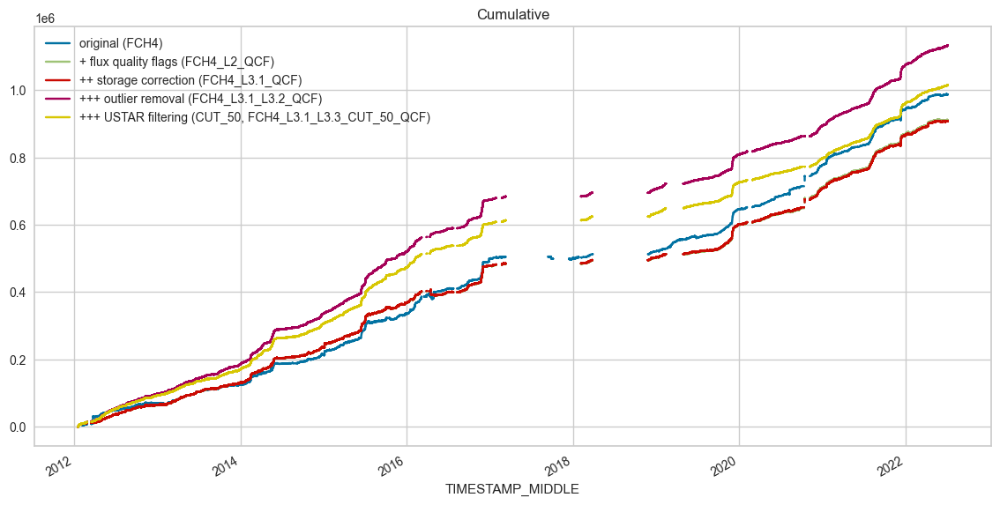
Available Level-3.3 fluxes#
_fluxcols = [x for x in fpc.fpc_df.columns if
'L3.1' and 'L3.3' in x and str(x).endswith('_QCF') and not str(x).startswith('FLAG_')]
_fluxcols
['FCH4_L3.1_L3.3_CUT_50_QCF']
_subset = fpc.fpc_df[_fluxcols].copy()
_subset.head()
| FCH4_L3.1_L3.3_CUT_50_QCF | |
|---|---|
| TIMESTAMP_MIDDLE | |
| 2012-01-01 00:15:00 | NaN |
| 2012-01-01 00:45:00 | NaN |
| 2012-01-01 01:15:00 | NaN |
| 2012-01-01 01:45:00 | NaN |
| 2012-01-01 02:15:00 | NaN |
_subset.plot(subplots=True, x_compat=True,
title="Available Level-3.3 fluxes after application of all quality checks", figsize=(12, 4.5));
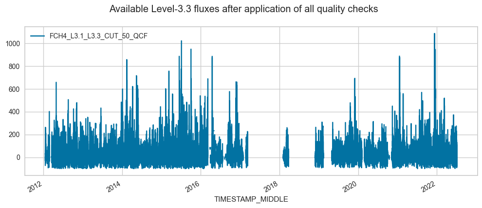
# # Draw boxplots
# for _f in _fluxcols:
# boxplots_df = fpc.fpc_df[[_f, "DAYTIME"]].copy()
# boxplots_df["MONTH"] = boxplots_df.index.month
# sns.set_theme(style="ticks", palette="pastel")
# plt.figure(figsize=(12, 3))
# sns.boxplot(x="MONTH", y=_f, palette=["r", "b"], hue="DAYTIME", data=boxplots_df).set_title(f"Boxplot of {_f}")
# sns.despine(offset=10, trim=True)
# plt.axhline(0, color="black");
# # Draw a nested violinplot and split the violins for easier comparison
# for _f in _fluxcols:
# plt.figure(figsize=(20, 2))
# sns.violinplot(data=boxplots_df, x="MONTH", y=fpc.fpc_df[_f], hue="DAYTIME", split=True, palette=["r", "b"], gap=.1,
# inner="quart")
# plt.axhline(0, color="black")
Save Level-3.3 results to file#
If needed, save results so far (input data and all created variables, e.g. flags and filtered fluxes) to a file
This can be useful if e.g. gap-filling should be done elsewhere (ReddyProc…)
# # results_df = fpc.get_data()
# out_df = fpc.fpc_df.copy()
# filename = "32.2_FluxProcessingChain_L3.3_NEE-results"
# out_df.to_csv(f"{filename}.csv", index=True)
# save_parquet(data=out_df, filename=filename)
Export for MDS gap-filling in REddyProc#
# from diive.core.times.times import insert_timestamp
# export = results_df.copy()
# exportcols = ['NEE_L3.1_L3.3_CUT_16_QCF', 'NEE_L3.1_L3.3_CUT_50_QCF', 'NEE_L3.1_L3.3_CUT_84_QCF',
# 'SW_IN_T1_2_1', 'TA_T1_2_1', 'VPD_T1_2_1']
# export = export[exportcols].copy()
# locs = (export.index.year >= 2005) & (export.index.year <= 2023)
# export = export[locs].copy()
# export = insert_timestamp(data=export, convention="end", set_as_index=True)
# export
# filename = "32.3_FluxProcessingChain_L3.3_NEE-subset-forREddyProc"
# export.to_csv(f"{filename}.csv", index=True)
# save_parquet(data=export, filename=filename)
Level-4.1: GAP-FILLING#
Introduced in
diivev0.85.0, gap-filling can now be done using both random forest and MDSFor gap-filling using MDS, make sure that variables are in the required units: short-wave incoming radiation in
W m-2, air temperature in°C, VPD inhPa
Parameters:
mds_settingsare parameters for the MDS gap-filling method, see docstring here for more detailsrf_settingsare parameters for scikit’sRandomForestRegressormodel, see their official documentation for allowed parametersml_feature_settingsare general settings for machine-learning models (such as random forest)
MGMT_VARS = ["TIMESINCE_MGMT_FERT_MIN_FOOTPRINT", "TIMESINCE_MGMT_FERT_ORG_FOOTPRINT",
"TIMESINCE_MGMT_GRAZING_FOOTPRINT", "TIMESINCE_MGMT_MOWING_FOOTPRINT",
"TIMESINCE_MGMT_SOILCULTIVATION_FOOTPRINT", "TIMESINCE_MGMT_SOWING_FOOTPRINT",
"TIMESINCE_MGMT_PESTICIDE_HERBICIDE_FOOTPRINT", "TIMESINCE_PREC_RAIN_TOT_GF1_0.5_1"]
FEATURES = ["SWC_GF1_0.15_1_gfXG", "SWC_GF1_0.15_1_gfXG_MEAN3H",
"TS_GF1_0.04_1_gfXG_MEAN3H", "TS_GF1_0.15_1_gfXG_MEAN3H", "TS_GF1_0.4_1_gfXG_MEAN3H",
"PREC_RAIN_TOT_GF1_0.5_1", "PREC_RAIN_TOT_GF1_0.5_1_MEAN3H"] + MGMT_VARS
fpc.level41_gapfilling_longterm(
run_mds=False,
run_random_forest=True,
verbose=True,
ml_feature_settings={
'features': FEATURES,
'features_lag': [-24, -6],
'features_lag_stepsize': 6,
'features_lag_exclude_cols': MGMT_VARS, # Management variables are not lagged
'reduce_features': True,
'include_timestamp_as_features': True,
'add_continuous_record_number': False,
'perm_n_repeats': 5,
},
rf_settings={
'n_estimators': 500,
'random_state': 42,
'min_samples_split': 2,
'min_samples_leaf': 1,
'n_jobs': -1
},
# mds_settings={
# 'swin': "SW_IN_T1_2_1",
# 'ta': "TA_T1_2_1",
# 'vpd': "VPD_T1_2_1",
# 'swin_class': 50,
# 'ta_class': 2.5,
# 'vpd_class': 0.5,
# 'min_n_vals_nt': 0
# }
)
============================================================
Starting gap-filling for
FCH4_L3.1_L3.3_CUT_50_QCF
using <class 'sklearn.ensemble._forest.RandomForestRegressor'>
============================================================
Adding new data columns ...
++ Added new columns with lagged variants for: ['SWC_GF1_0.15_1_gfXG', 'SWC_GF1_0.15_1_gfXG_MEAN3H', 'TS_GF1_0.04_1_gfXG_MEAN3H', 'TS_GF1_0.15_1_gfXG_MEAN3H', 'TS_GF1_0.4_1_gfXG_MEAN3H', 'PREC_RAIN_TOT_GF1_0.5_1', 'PREC_RAIN_TOT_GF1_0.5_1_MEAN3H'] (lags between -24 and -6 with stepsize 6), no lagged variants for: ['TIMESINCE_MGMT_FERT_MIN_FOOTPRINT', 'TIMESINCE_MGMT_FERT_ORG_FOOTPRINT', 'TIMESINCE_MGMT_GRAZING_FOOTPRINT', 'TIMESINCE_MGMT_MOWING_FOOTPRINT', 'TIMESINCE_MGMT_SOILCULTIVATION_FOOTPRINT', 'TIMESINCE_MGMT_SOWING_FOOTPRINT', 'TIMESINCE_MGMT_PESTICIDE_HERBICIDE_FOOTPRINT', 'TIMESINCE_PREC_RAIN_TOT_GF1_0.5_1', 'FCH4_L3.1_L3.3_CUT_50_QCF']. Shifting the time series created gaps which were then filled with the nearest value.
++ Added new columns with timestamp info: ['.YEAR', '.SEASON', '.MONTH', '.WEEK', '.DOY', '.HOUR', '.YEARMONTH', '.YEARDOY', '.YEARWEEK']
Sanitizing timestamp ...
>>> Validating timestamp naming of timestamp column TIMESTAMP_MIDDLE ... Timestamp name OK.
>>> Converting timestamp TIMESTAMP_MIDDLE to datetime ... OK
>>> All rows have timestamp TIMESTAMP_MIDDLE, no rows removed.
>>> Sorting timestamp TIMESTAMP_MIDDLE ascending ...
>>> Removing data records with duplicate indexes ... OK (no duplicates found in timestamp index)
>>> Creating continuous <30 * Minutes> timestamp index for timestamp TIMESTAMP_MIDDLE between 2012-01-01 00:15:00 and 2022-12-31 23:45:00 ...
[neighboring_years] Assigned [2012, 2013, 2014] to data pool for 2012.
[neighboring_years] Assigned [2012, 2013, 2014] to data pool for 2013.
[neighboring_years] Assigned [2013, 2014, 2015] to data pool for 2014.
[neighboring_years] Assigned [2014, 2015, 2016] to data pool for 2015.
[neighboring_years] Assigned [2015, 2016, 2017] to data pool for 2016.
[neighboring_years] Assigned [2016, 2017, 2018] to data pool for 2017.
[neighboring_years] Assigned [2017, 2018, 2019] to data pool for 2018.
[neighboring_years] Assigned [2018, 2019, 2020] to data pool for 2019.
[neighboring_years] Assigned [2019, 2020, 2021] to data pool for 2020.
[neighboring_years] Assigned [2020, 2021, 2022] to data pool for 2021.
[neighboring_years] Assigned [2020, 2021, 2022] to data pool for 2022.
Initializing model for 2012 ...
============================================================
Starting gap-filling for
FCH4_L3.1_L3.3_CUT_50_QCF
using <class 'sklearn.ensemble._forest.RandomForestRegressor'>
============================================================
Initializing model for 2013 ...
============================================================
Starting gap-filling for
FCH4_L3.1_L3.3_CUT_50_QCF
using <class 'sklearn.ensemble._forest.RandomForestRegressor'>
============================================================
Initializing model for 2014 ...
============================================================
Starting gap-filling for
FCH4_L3.1_L3.3_CUT_50_QCF
using <class 'sklearn.ensemble._forest.RandomForestRegressor'>
============================================================
Initializing model for 2015 ...
============================================================
Starting gap-filling for
FCH4_L3.1_L3.3_CUT_50_QCF
using <class 'sklearn.ensemble._forest.RandomForestRegressor'>
============================================================
Initializing model for 2016 ...
============================================================
Starting gap-filling for
FCH4_L3.1_L3.3_CUT_50_QCF
using <class 'sklearn.ensemble._forest.RandomForestRegressor'>
============================================================
Initializing model for 2017 ...
============================================================
Starting gap-filling for
FCH4_L3.1_L3.3_CUT_50_QCF
using <class 'sklearn.ensemble._forest.RandomForestRegressor'>
============================================================
Initializing model for 2018 ...
============================================================
Starting gap-filling for
FCH4_L3.1_L3.3_CUT_50_QCF
using <class 'sklearn.ensemble._forest.RandomForestRegressor'>
============================================================
Initializing model for 2019 ...
============================================================
Starting gap-filling for
FCH4_L3.1_L3.3_CUT_50_QCF
using <class 'sklearn.ensemble._forest.RandomForestRegressor'>
============================================================
Initializing model for 2020 ...
============================================================
Starting gap-filling for
FCH4_L3.1_L3.3_CUT_50_QCF
using <class 'sklearn.ensemble._forest.RandomForestRegressor'>
============================================================
Initializing model for 2021 ...
============================================================
Starting gap-filling for
FCH4_L3.1_L3.3_CUT_50_QCF
using <class 'sklearn.ensemble._forest.RandomForestRegressor'>
============================================================
Initializing model for 2022 ...
============================================================
Starting gap-filling for
FCH4_L3.1_L3.3_CUT_50_QCF
using <class 'sklearn.ensemble._forest.RandomForestRegressor'>
============================================================
---
Reducing features based on permutation importance for year 2012 ...
Feature reduction based on permutation importance ...
>>> Calculating feature importances (permutation importance, 5 repeats) ...
>>> Setting threshold for feature rejection to 0.10869608972474505.
>>> Removing rejected features from model data ...
---
Reducing features based on permutation importance for year 2013 ...
Feature reduction based on permutation importance ...
>>> Calculating feature importances (permutation importance, 5 repeats) ...
>>> Setting threshold for feature rejection to 0.10869608972474502.
>>> Removing rejected features from model data ...
---
Reducing features based on permutation importance for year 2014 ...
Feature reduction based on permutation importance ...
>>> Calculating feature importances (permutation importance, 5 repeats) ...
>>> Setting threshold for feature rejection to 0.10130103015867635.
>>> Removing rejected features from model data ...
---
Reducing features based on permutation importance for year 2015 ...
Feature reduction based on permutation importance ...
>>> Calculating feature importances (permutation importance, 5 repeats) ...
>>> Setting threshold for feature rejection to 0.08691263687030049.
>>> Removing rejected features from model data ...
---
Reducing features based on permutation importance for year 2016 ...
Feature reduction based on permutation importance ...
>>> Calculating feature importances (permutation importance, 5 repeats) ...
>>> Setting threshold for feature rejection to 0.09949921488621072.
>>> Removing rejected features from model data ...
---
Reducing features based on permutation importance for year 2017 ...
Feature reduction based on permutation importance ...
>>> Calculating feature importances (permutation importance, 5 repeats) ...
>>> Setting threshold for feature rejection to 0.06469743544354863.
>>> Removing rejected features from model data ...
---
Reducing features based on permutation importance for year 2018 ...
Feature reduction based on permutation importance ...
>>> Calculating feature importances (permutation importance, 5 repeats) ...
>>> Setting threshold for feature rejection to 0.10365624903818116.
>>> Removing rejected features from model data ...
---
Reducing features based on permutation importance for year 2019 ...
Feature reduction based on permutation importance ...
>>> Calculating feature importances (permutation importance, 5 repeats) ...
>>> Setting threshold for feature rejection to 0.09752925419031447.
>>> Removing rejected features from model data ...
---
Reducing features based on permutation importance for year 2020 ...
Feature reduction based on permutation importance ...
>>> Calculating feature importances (permutation importance, 5 repeats) ...
>>> Setting threshold for feature rejection to 0.08685666740563665.
>>> Removing rejected features from model data ...
---
Reducing features based on permutation importance for year 2021 ...
Feature reduction based on permutation importance ...
>>> Calculating feature importances (permutation importance, 5 repeats) ...
>>> Setting threshold for feature rejection to 0.09376835727211896.
>>> Removing rejected features from model data ...
---
Reducing features based on permutation importance for year 2022 ...
Feature reduction based on permutation importance ...
>>> Calculating feature importances (permutation importance, 5 repeats) ...
>>> Setting threshold for feature rejection to 0.09376835727211899.
>>> Removing rejected features from model data ...
---
Finished reducing features based on permutation importance for all years.
List of features after reduction: ['.HOUR', '.SEASON', '.SWC_GF1_0.15_1_gfXG-18', '.SWC_GF1_0.15_1_gfXG_MEAN3H-24', '.TS_GF1_0.04_1_gfXG_MEAN3H-12', '.TS_GF1_0.04_1_gfXG_MEAN3H-18', '.TS_GF1_0.04_1_gfXG_MEAN3H-24', '.TS_GF1_0.04_1_gfXG_MEAN3H-6', '.TS_GF1_0.15_1_gfXG_MEAN3H-24', '.TS_GF1_0.15_1_gfXG_MEAN3H-6', '.TS_GF1_0.4_1_gfXG_MEAN3H-18', '.TS_GF1_0.4_1_gfXG_MEAN3H-24', '.YEARMONTH', 'TIMESINCE_MGMT_FERT_MIN_FOOTPRINT', 'TIMESINCE_MGMT_FERT_ORG_FOOTPRINT', 'TIMESINCE_MGMT_GRAZING_FOOTPRINT', 'TIMESINCE_MGMT_MOWING_FOOTPRINT', 'TIMESINCE_MGMT_PESTICIDE_HERBICIDE_FOOTPRINT', 'TIMESINCE_MGMT_SOILCULTIVATION_FOOTPRINT', 'TIMESINCE_MGMT_SOWING_FOOTPRINT', 'TIMESINCE_PREC_RAIN_TOT_GF1_0.5_1', 'TS_GF1_0.04_1_gfXG_MEAN3H', 'TS_GF1_0.4_1_gfXG_MEAN3H'].
Each feature was selected in at least one year.
---
[neighboring_years] Assigned [2012, 2013, 2014] to data pool for 2012.
[neighboring_years] Assigned [2012, 2013, 2014] to data pool for 2013.
[neighboring_years] Assigned [2013, 2014, 2015] to data pool for 2014.
[neighboring_years] Assigned [2014, 2015, 2016] to data pool for 2015.
[neighboring_years] Assigned [2015, 2016, 2017] to data pool for 2016.
[neighboring_years] Assigned [2016, 2017, 2018] to data pool for 2017.
[neighboring_years] Assigned [2017, 2018, 2019] to data pool for 2018.
[neighboring_years] Assigned [2018, 2019, 2020] to data pool for 2019.
[neighboring_years] Assigned [2019, 2020, 2021] to data pool for 2020.
[neighboring_years] Assigned [2020, 2021, 2022] to data pool for 2021.
[neighboring_years] Assigned [2020, 2021, 2022] to data pool for 2022.
Initializing model for 2012 ...
============================================================
Starting gap-filling for
FCH4_L3.1_L3.3_CUT_50_QCF
using <class 'sklearn.ensemble._forest.RandomForestRegressor'>
============================================================
Initializing model for 2013 ...
============================================================
Starting gap-filling for
FCH4_L3.1_L3.3_CUT_50_QCF
using <class 'sklearn.ensemble._forest.RandomForestRegressor'>
============================================================
Initializing model for 2014 ...
============================================================
Starting gap-filling for
FCH4_L3.1_L3.3_CUT_50_QCF
using <class 'sklearn.ensemble._forest.RandomForestRegressor'>
============================================================
Initializing model for 2015 ...
============================================================
Starting gap-filling for
FCH4_L3.1_L3.3_CUT_50_QCF
using <class 'sklearn.ensemble._forest.RandomForestRegressor'>
============================================================
Initializing model for 2016 ...
============================================================
Starting gap-filling for
FCH4_L3.1_L3.3_CUT_50_QCF
using <class 'sklearn.ensemble._forest.RandomForestRegressor'>
============================================================
Initializing model for 2017 ...
============================================================
Starting gap-filling for
FCH4_L3.1_L3.3_CUT_50_QCF
using <class 'sklearn.ensemble._forest.RandomForestRegressor'>
============================================================
Initializing model for 2018 ...
============================================================
Starting gap-filling for
FCH4_L3.1_L3.3_CUT_50_QCF
using <class 'sklearn.ensemble._forest.RandomForestRegressor'>
============================================================
Initializing model for 2019 ...
============================================================
Starting gap-filling for
FCH4_L3.1_L3.3_CUT_50_QCF
using <class 'sklearn.ensemble._forest.RandomForestRegressor'>
============================================================
Initializing model for 2020 ...
============================================================
Starting gap-filling for
FCH4_L3.1_L3.3_CUT_50_QCF
using <class 'sklearn.ensemble._forest.RandomForestRegressor'>
============================================================
Initializing model for 2021 ...
============================================================
Starting gap-filling for
FCH4_L3.1_L3.3_CUT_50_QCF
using <class 'sklearn.ensemble._forest.RandomForestRegressor'>
============================================================
Initializing model for 2022 ...
============================================================
Starting gap-filling for
FCH4_L3.1_L3.3_CUT_50_QCF
using <class 'sklearn.ensemble._forest.RandomForestRegressor'>
============================================================
Training model for 2012 ...
Training final model ...
>>> Training model <class 'sklearn.ensemble._forest.RandomForestRegressor'> based on data between 2012-01-18 10:45:00 and 2014-12-31 23:15:00 ...
>>> Fitting model to training data ...
>>> Using model to predict target FCH4_L3.1_L3.3_CUT_50_QCF in unseen test data ...
>>> Using model to calculate permutation importance based on unseen test data ...
>>> Calculating prediction scores based on predicting unseen test data of FCH4_L3.1_L3.3_CUT_50_QCF ...
>>> Collecting results, details about training and testing can be accessed by calling .report_traintest().
>>> Done.
Gap-filling 2012 ...
Gap-filling using final model ...
>>> Using final model on all data to predict target FCH4_L3.1_L3.3_CUT_50_QCF ...
>>> Using final model on all data to calculate permutation importance ...
>>> Calculating prediction scores based on all data predicting FCH4_L3.1_L3.3_CUT_50_QCF ...
>>> Predicting target FCH4_L3.1_L3.3_CUT_50_QCF where all features are available ... predicted 52608 records.
>>> Collecting results for final model ...
>>> Filling 29264 missing records in target with predictions from final model ...
>>> Storing gap-filled time series in variable FCH4_L3.1_L3.3_CUT_50_QCF_gfRF ...
>>> Restoring original timestamp in results ...
>>> Combining predictions from full model and fallback model ...
Training model for 2013 ...
Training final model ...
>>> Training model <class 'sklearn.ensemble._forest.RandomForestRegressor'> based on data between 2012-01-18 10:45:00 and 2014-12-31 23:15:00 ...
>>> Fitting model to training data ...
>>> Using model to predict target FCH4_L3.1_L3.3_CUT_50_QCF in unseen test data ...
>>> Using model to calculate permutation importance based on unseen test data ...
>>> Calculating prediction scores based on predicting unseen test data of FCH4_L3.1_L3.3_CUT_50_QCF ...
>>> Collecting results, details about training and testing can be accessed by calling .report_traintest().
>>> Done.
Gap-filling 2013 ...
Gap-filling using final model ...
>>> Using final model on all data to predict target FCH4_L3.1_L3.3_CUT_50_QCF ...
>>> Using final model on all data to calculate permutation importance ...
>>> Calculating prediction scores based on all data predicting FCH4_L3.1_L3.3_CUT_50_QCF ...
>>> Predicting target FCH4_L3.1_L3.3_CUT_50_QCF where all features are available ... predicted 52608 records.
>>> Collecting results for final model ...
>>> Filling 29264 missing records in target with predictions from final model ...
>>> Storing gap-filled time series in variable FCH4_L3.1_L3.3_CUT_50_QCF_gfRF ...
>>> Restoring original timestamp in results ...
>>> Combining predictions from full model and fallback model ...
Training model for 2014 ...
Training final model ...
>>> Training model <class 'sklearn.ensemble._forest.RandomForestRegressor'> based on data between 2013-01-01 01:15:00 and 2015-12-31 23:45:00 ...
>>> Fitting model to training data ...
>>> Using model to predict target FCH4_L3.1_L3.3_CUT_50_QCF in unseen test data ...
>>> Using model to calculate permutation importance based on unseen test data ...
>>> Calculating prediction scores based on predicting unseen test data of FCH4_L3.1_L3.3_CUT_50_QCF ...
>>> Collecting results, details about training and testing can be accessed by calling .report_traintest().
>>> Done.
Gap-filling 2014 ...
Gap-filling using final model ...
>>> Using final model on all data to predict target FCH4_L3.1_L3.3_CUT_50_QCF ...
>>> Using final model on all data to calculate permutation importance ...
>>> Calculating prediction scores based on all data predicting FCH4_L3.1_L3.3_CUT_50_QCF ...
>>> Predicting target FCH4_L3.1_L3.3_CUT_50_QCF where all features are available ... predicted 52560 records.
>>> Collecting results for final model ...
>>> Filling 29323 missing records in target with predictions from final model ...
>>> Storing gap-filled time series in variable FCH4_L3.1_L3.3_CUT_50_QCF_gfRF ...
>>> Restoring original timestamp in results ...
>>> Combining predictions from full model and fallback model ...
Training model for 2015 ...
Training final model ...
>>> Training model <class 'sklearn.ensemble._forest.RandomForestRegressor'> based on data between 2014-01-01 03:15:00 and 2016-12-31 23:15:00 ...
>>> Fitting model to training data ...
>>> Using model to predict target FCH4_L3.1_L3.3_CUT_50_QCF in unseen test data ...
>>> Using model to calculate permutation importance based on unseen test data ...
>>> Calculating prediction scores based on predicting unseen test data of FCH4_L3.1_L3.3_CUT_50_QCF ...
>>> Collecting results, details about training and testing can be accessed by calling .report_traintest().
>>> Done.
Gap-filling 2015 ...
Gap-filling using final model ...
>>> Using final model on all data to predict target FCH4_L3.1_L3.3_CUT_50_QCF ...
>>> Using final model on all data to calculate permutation importance ...
>>> Calculating prediction scores based on all data predicting FCH4_L3.1_L3.3_CUT_50_QCF ...
>>> Predicting target FCH4_L3.1_L3.3_CUT_50_QCF where all features are available ... predicted 52608 records.
>>> Collecting results for final model ...
>>> Filling 32190 missing records in target with predictions from final model ...
>>> Storing gap-filled time series in variable FCH4_L3.1_L3.3_CUT_50_QCF_gfRF ...
>>> Restoring original timestamp in results ...
>>> Combining predictions from full model and fallback model ...
Training model for 2016 ...
Training final model ...
>>> Training model <class 'sklearn.ensemble._forest.RandomForestRegressor'> based on data between 2015-01-01 01:15:00 and 2017-03-11 15:15:00 ...
>>> Fitting model to training data ...
>>> Using model to predict target FCH4_L3.1_L3.3_CUT_50_QCF in unseen test data ...
>>> Using model to calculate permutation importance based on unseen test data ...
>>> Calculating prediction scores based on predicting unseen test data of FCH4_L3.1_L3.3_CUT_50_QCF ...
>>> Collecting results, details about training and testing can be accessed by calling .report_traintest().
>>> Done.
Gap-filling 2016 ...
Gap-filling using final model ...
>>> Using final model on all data to predict target FCH4_L3.1_L3.3_CUT_50_QCF ...
>>> Using final model on all data to calculate permutation importance ...
>>> Calculating prediction scores based on all data predicting FCH4_L3.1_L3.3_CUT_50_QCF ...
>>> Predicting target FCH4_L3.1_L3.3_CUT_50_QCF where all features are available ... predicted 52608 records.
>>> Collecting results for final model ...
>>> Filling 38893 missing records in target with predictions from final model ...
>>> Storing gap-filled time series in variable FCH4_L3.1_L3.3_CUT_50_QCF_gfRF ...
>>> Restoring original timestamp in results ...
>>> Combining predictions from full model and fallback model ...
Training model for 2017 ...
Training final model ...
>>> Training model <class 'sklearn.ensemble._forest.RandomForestRegressor'> based on data between 2016-01-01 01:45:00 and 2018-12-31 20:15:00 ...
>>> Fitting model to training data ...
>>> Using model to predict target FCH4_L3.1_L3.3_CUT_50_QCF in unseen test data ...
>>> Using model to calculate permutation importance based on unseen test data ...
>>> Calculating prediction scores based on predicting unseen test data of FCH4_L3.1_L3.3_CUT_50_QCF ...
>>> Collecting results, details about training and testing can be accessed by calling .report_traintest().
>>> Done.
Gap-filling 2017 ...
Gap-filling using final model ...
>>> Using final model on all data to predict target FCH4_L3.1_L3.3_CUT_50_QCF ...
>>> Using final model on all data to calculate permutation importance ...
>>> Calculating prediction scores based on all data predicting FCH4_L3.1_L3.3_CUT_50_QCF ...
>>> Predicting target FCH4_L3.1_L3.3_CUT_50_QCF where all features are available ... predicted 52608 records.
>>> Collecting results for final model ...
>>> Filling 44402 missing records in target with predictions from final model ...
>>> Storing gap-filled time series in variable FCH4_L3.1_L3.3_CUT_50_QCF_gfRF ...
>>> Restoring original timestamp in results ...
>>> Combining predictions from full model and fallback model ...
Training model for 2018 ...
Training final model ...
>>> Training model <class 'sklearn.ensemble._forest.RandomForestRegressor'> based on data between 2017-01-01 04:15:00 and 2019-12-31 22:45:00 ...
>>> Fitting model to training data ...
>>> Using model to predict target FCH4_L3.1_L3.3_CUT_50_QCF in unseen test data ...
>>> Using model to calculate permutation importance based on unseen test data ...
>>> Calculating prediction scores based on predicting unseen test data of FCH4_L3.1_L3.3_CUT_50_QCF ...
>>> Collecting results, details about training and testing can be accessed by calling .report_traintest().
>>> Done.
Gap-filling 2018 ...
Gap-filling using final model ...
>>> Using final model on all data to predict target FCH4_L3.1_L3.3_CUT_50_QCF ...
>>> Using final model on all data to calculate permutation importance ...
>>> Calculating prediction scores based on all data predicting FCH4_L3.1_L3.3_CUT_50_QCF ...
>>> Predicting target FCH4_L3.1_L3.3_CUT_50_QCF where all features are available ... predicted 52560 records.
>>> Collecting results for final model ...
>>> Filling 43706 missing records in target with predictions from final model ...
>>> Storing gap-filled time series in variable FCH4_L3.1_L3.3_CUT_50_QCF_gfRF ...
>>> Restoring original timestamp in results ...
>>> Combining predictions from full model and fallback model ...
Training model for 2019 ...
Training final model ...
>>> Training model <class 'sklearn.ensemble._forest.RandomForestRegressor'> based on data between 2018-02-05 15:45:00 and 2020-12-31 20:45:00 ...
>>> Fitting model to training data ...
>>> Using model to predict target FCH4_L3.1_L3.3_CUT_50_QCF in unseen test data ...
>>> Using model to calculate permutation importance based on unseen test data ...
>>> Calculating prediction scores based on predicting unseen test data of FCH4_L3.1_L3.3_CUT_50_QCF ...
>>> Collecting results, details about training and testing can be accessed by calling .report_traintest().
>>> Done.
Gap-filling 2019 ...
Gap-filling using final model ...
>>> Using final model on all data to predict target FCH4_L3.1_L3.3_CUT_50_QCF ...
>>> Using final model on all data to calculate permutation importance ...
>>> Calculating prediction scores based on all data predicting FCH4_L3.1_L3.3_CUT_50_QCF ...
>>> Predicting target FCH4_L3.1_L3.3_CUT_50_QCF where all features are available ... predicted 52608 records.
>>> Collecting results for final model ...
>>> Filling 38354 missing records in target with predictions from final model ...
>>> Storing gap-filled time series in variable FCH4_L3.1_L3.3_CUT_50_QCF_gfRF ...
>>> Restoring original timestamp in results ...
>>> Combining predictions from full model and fallback model ...
Training model for 2020 ...
Training final model ...
>>> Training model <class 'sklearn.ensemble._forest.RandomForestRegressor'> based on data between 2019-01-01 04:15:00 and 2021-12-31 23:45:00 ...
>>> Fitting model to training data ...
>>> Using model to predict target FCH4_L3.1_L3.3_CUT_50_QCF in unseen test data ...
>>> Using model to calculate permutation importance based on unseen test data ...
>>> Calculating prediction scores based on predicting unseen test data of FCH4_L3.1_L3.3_CUT_50_QCF ...
>>> Collecting results, details about training and testing can be accessed by calling .report_traintest().
>>> Done.
Gap-filling 2020 ...
Gap-filling using final model ...
>>> Using final model on all data to predict target FCH4_L3.1_L3.3_CUT_50_QCF ...
>>> Using final model on all data to calculate permutation importance ...
>>> Calculating prediction scores based on all data predicting FCH4_L3.1_L3.3_CUT_50_QCF ...
>>> Predicting target FCH4_L3.1_L3.3_CUT_50_QCF where all features are available ... predicted 52608 records.
>>> Collecting results for final model ...
>>> Filling 32280 missing records in target with predictions from final model ...
>>> Storing gap-filled time series in variable FCH4_L3.1_L3.3_CUT_50_QCF_gfRF ...
>>> Restoring original timestamp in results ...
>>> Combining predictions from full model and fallback model ...
Training model for 2021 ...
Training final model ...
>>> Training model <class 'sklearn.ensemble._forest.RandomForestRegressor'> based on data between 2020-01-01 01:45:00 and 2022-07-06 08:45:00 ...
>>> Fitting model to training data ...
>>> Using model to predict target FCH4_L3.1_L3.3_CUT_50_QCF in unseen test data ...
>>> Using model to calculate permutation importance based on unseen test data ...
>>> Calculating prediction scores based on predicting unseen test data of FCH4_L3.1_L3.3_CUT_50_QCF ...
>>> Collecting results, details about training and testing can be accessed by calling .report_traintest().
>>> Done.
Gap-filling 2021 ...
Gap-filling using final model ...
>>> Using final model on all data to predict target FCH4_L3.1_L3.3_CUT_50_QCF ...
>>> Using final model on all data to calculate permutation importance ...
>>> Calculating prediction scores based on all data predicting FCH4_L3.1_L3.3_CUT_50_QCF ...
>>> Predicting target FCH4_L3.1_L3.3_CUT_50_QCF where all features are available ... predicted 52608 records.
>>> Collecting results for final model ...
>>> Filling 33956 missing records in target with predictions from final model ...
>>> Storing gap-filled time series in variable FCH4_L3.1_L3.3_CUT_50_QCF_gfRF ...
>>> Restoring original timestamp in results ...
>>> Combining predictions from full model and fallback model ...
Training model for 2022 ...
Training final model ...
>>> Training model <class 'sklearn.ensemble._forest.RandomForestRegressor'> based on data between 2020-01-01 01:45:00 and 2022-07-06 08:45:00 ...
>>> Fitting model to training data ...
>>> Using model to predict target FCH4_L3.1_L3.3_CUT_50_QCF in unseen test data ...
>>> Using model to calculate permutation importance based on unseen test data ...
>>> Calculating prediction scores based on predicting unseen test data of FCH4_L3.1_L3.3_CUT_50_QCF ...
>>> Collecting results, details about training and testing can be accessed by calling .report_traintest().
>>> Done.
Gap-filling 2022 ...
Gap-filling using final model ...
>>> Using final model on all data to predict target FCH4_L3.1_L3.3_CUT_50_QCF ...
>>> Using final model on all data to calculate permutation importance ...
>>> Calculating prediction scores based on all data predicting FCH4_L3.1_L3.3_CUT_50_QCF ...
>>> Predicting target FCH4_L3.1_L3.3_CUT_50_QCF where all features are available ... predicted 52608 records.
>>> Collecting results for final model ...
>>> Filling 33956 missing records in target with predictions from final model ...
>>> Storing gap-filled time series in variable FCH4_L3.1_L3.3_CUT_50_QCF_gfRF ...
>>> Restoring original timestamp in results ...
>>> Combining predictions from full model and fallback model ...
Collecting results for 2012 ...
Collecting results for 2013 ...
Collecting results for 2014 ...
Collecting results for 2015 ...
Collecting results for 2016 ...
Collecting results for 2017 ...
Collecting results for 2018 ...
Collecting results for 2019 ...
Collecting results for 2020 ...
Collecting results for 2021 ...
Collecting results for 2022 ...
Get results#
Results from the flux processing chain can be accessed using
.get_data()This returns a dataframe containing all input data and all newly generated variables, such as quality flags, quality-filtered fluxes and gap-filled fluxes
results = fpc.get_data(verbose=1)
results
NEW VARIABLES FROM FLUX PROCESSING CHAIN:
++ FLAG_L2_FCH4_MISSING_TEST
++ FLAG_L2_FCH4_SSITC_TEST
++ FLAG_L2_FCH4_COMPLETENESS_TEST
++ FLAG_L2_FCH4_SCF_TEST
++ FLAG_L2_FCH4_CH4_VM97_SPIKE_HF_TEST
++ FLAG_L2_FCH4_CH4_VM97_AMPLITUDE_RESOLUTION_HF_TEST
++ FLAG_L2_FCH4_CH4_VM97_DROPOUT_TEST
++ FLAG_L2_FCH4_VM97_AOA_HF_TEST
++ SUM_L2_FCH4_HARDFLAGS
++ SUM_L2_FCH4_SOFTFLAGS
++ SUM_L2_FCH4_FLAGS
++ FLAG_L2_FCH4_QCF
++ FCH4_L2_QCF
++ FCH4_L2_QCF0
++ SCH4_SINGLE_gfRMED_L3.1
++ FLAG_SCH4_SINGLE_gfRMED_L3.1_ISFILLED
++ FCH4_L3.1
++ FCH4_L3.1_QCF
++ FCH4_L3.1_QCF0
++ FLAG_L3.2_FCH4_L3.1_QCF_OUTLIER_ABSLIM_TEST
++ FLAG_L3.2_FCH4_L3.1_QCF_OUTLIER_ZSCOREROLLING_TEST
++ FLAG_L3.2_FCH4_L3.1_QCF_OUTLIER_LOCALSD_TEST
++ SUM_L3.2_FCH4_L3.1_HARDFLAGS
++ SUM_L3.2_FCH4_L3.1_SOFTFLAGS
++ SUM_L3.2_FCH4_L3.1_FLAGS
++ FLAG_L3.2_FCH4_L3.1_QCF
++ FCH4_L3.1_L3.2_QCF
++ FCH4_L3.1_L3.2_QCF0
++ FLAG_L3.3_CUT_50_FCH4_L3.1_USTAR_TEST
++ SUM_L3.3_CUT_50_FCH4_L3.1_HARDFLAGS
++ SUM_L3.3_CUT_50_FCH4_L3.1_SOFTFLAGS
++ SUM_L3.3_CUT_50_FCH4_L3.1_FLAGS
++ FLAG_L3.3_CUT_50_FCH4_L3.1_QCF
++ FCH4_L3.1_L3.3_CUT_50_QCF
++ FCH4_L3.1_L3.3_CUT_50_QCF0
++ FCH4_L3.1_L3.3_CUT_50_QCF_gfRF
++ FLAG_FCH4_L3.1_L3.3_CUT_50_QCF_gfRF_ISFILLED
No variables in input data were overwritten, only new variables added.
| AIR_CP | AIR_DENSITY | AIR_MV | AIR_RHO_CP | AOA_METHOD | AXES_ROTATION_METHOD | ... | SUM_L3.3_CUT_50_FCH4_L3.1_FLAGS | FLAG_L3.3_CUT_50_FCH4_L3.1_QCF | FCH4_L3.1_L3.3_CUT_50_QCF | FCH4_L3.1_L3.3_CUT_50_QCF0 | FCH4_L3.1_L3.3_CUT_50_QCF_gfRF | FLAG_FCH4_L3.1_L3.3_CUT_50_QCF_gfRF_ISFILLED | |
|---|---|---|---|---|---|---|---|---|---|---|---|---|---|
| TIMESTAMP_MIDDLE | |||||||||||||
| 2012-01-01 00:15:00 | 1005.25 | 1.21394 | 0.023860 | 1220.31 | 0.0 | 1.0 | ... | 2.0 | 2.0 | NaN | NaN | 45.898927 | 1 |
| 2012-01-01 00:45:00 | 1005.25 | 1.21553 | 0.023829 | 1221.91 | 0.0 | 1.0 | ... | 4.0 | 2.0 | NaN | NaN | 21.577251 | 1 |
| 2012-01-01 01:15:00 | 1005.25 | 1.21616 | 0.023817 | 1222.54 | 0.0 | 1.0 | ... | 2.0 | 2.0 | NaN | NaN | 21.389219 | 1 |
| 2012-01-01 01:45:00 | 1007.13 | 1.21394 | 0.023828 | 1222.59 | 0.0 | 1.0 | ... | 4.0 | 2.0 | NaN | NaN | 42.189790 | 1 |
| 2012-01-01 02:15:00 | 1007.73 | 1.21281 | 0.023841 | 1222.19 | 0.0 | 1.0 | ... | 2.0 | 2.0 | NaN | NaN | 41.268222 | 1 |
| ... | ... | ... | ... | ... | ... | ... | ... | ... | ... | ... | ... | ... | ... |
| 2022-12-31 21:45:00 | 1009.77 | 1.22031 | 0.023660 | 1232.23 | 0.0 | 1.0 | ... | 2.0 | 2.0 | NaN | NaN | 268.716548 | 1 |
| 2022-12-31 22:15:00 | 1009.88 | 1.21896 | 0.023685 | 1231.00 | 0.0 | 1.0 | ... | 2.0 | 2.0 | NaN | NaN | 267.533878 | 1 |
| 2022-12-31 22:45:00 | 1009.63 | 1.22288 | 0.023613 | 1234.66 | 0.0 | 1.0 | ... | 2.0 | 2.0 | NaN | NaN | 267.202961 | 1 |
| 2022-12-31 23:15:00 | 1009.64 | 1.22307 | 0.023609 | 1234.86 | 0.0 | 1.0 | ... | 2.0 | 2.0 | NaN | NaN | 267.059620 | 1 |
| 2022-12-31 23:45:00 | 1009.45 | 1.22619 | 0.023552 | 1237.78 | 0.0 | 1.0 | ... | 2.0 | 2.0 | NaN | NaN | 266.487558 | 1 |
192864 rows × 557 columns
Model scores#
pd.set_option('display.max_columns', 500)
pd.set_option('display.max_rows', 500)
pd.set_option('display.width', 9999)
fpc.report_gapfilling_model_scores()
MODEL SCORES (random_forest): CUT_50
2012 2013 2014 2015 2016 2017 2018 2019 2020 2021 2022
mae 16.035499 16.035499 17.565445 19.632170 19.724783 16.696313 12.906731 12.772099 14.181368 14.498775 14.498775
medae 7.288636 7.288636 7.861398 8.401994 7.937688 6.430191 5.786045 5.812332 6.149891 6.336371 6.336371
mse 1011.891531 1011.891531 1296.296972 1733.116033 1757.391010 1494.912296 657.331756 622.381041 928.342267 1028.891190 1028.891190
rmse 31.810243 31.810243 36.004124 41.630710 41.921248 38.664096 25.638482 24.947566 30.468710 32.076334 32.076334
mape 2.202577 2.202577 2.408376 2.235589 2.384539 2.295363 2.800048 2.869389 3.495061 2.671907 2.671907
maxe 634.572114 634.572114 897.188471 855.959550 613.701164 831.273883 359.030999 394.576587 922.743274 833.215912 833.215912
r2 0.639075 0.639075 0.667812 0.673921 0.693763 0.666227 0.676848 0.676610 0.695007 0.663269 0.663269
fpc.report_gapfilling_feature_importances()
FEATURE IMPORTANCES (random_forest): CUT_50
YEAR 2012 2013 2014 2015 2016 2017 2018 2019 2020 2021 2022
FEATURE
.TS_GF1_0.04_1_gfXG_MEAN3H-6 0.605353 0.605353 0.159669 0.190957 0.104721 1.063004 0.089662 0.092605 0.098867 0.130393 0.130393
TIMESINCE_MGMT_GRAZING_FOOTPRINT 0.452604 0.452604 0.530099 0.467434 0.565800 0.963718 0.836446 0.889919 0.727803 0.434797 0.434797
TS_GF1_0.04_1_gfXG_MEAN3H 0.331189 0.331189 0.187584 0.159378 0.191267 0.299863 0.166575 0.234978 0.162600 0.144290 0.144290
.TS_GF1_0.04_1_gfXG_MEAN3H-24 0.288333 0.288333 0.160885 0.128429 0.125995 0.101366 0.089388 0.131985 0.146974 0.134546 0.134546
.TS_GF1_0.4_1_gfXG_MEAN3H-18 0.240513 0.240513 0.111705 0.084434 0.066546 0.077502 0.055611 0.055783 0.077042 0.115659 0.115659
.TS_GF1_0.04_1_gfXG_MEAN3H-18 0.200321 0.200321 0.184726 0.094319 0.169977 0.153312 0.118316 0.121731 0.091019 0.096975 0.096975
.TS_GF1_0.15_1_gfXG_MEAN3H-6 0.185550 0.185550 0.064259 0.056035 0.058728 0.066955 0.058504 0.070655 0.068999 0.048379 0.048379
.TS_GF1_0.4_1_gfXG_MEAN3H-24 0.178684 0.178684 0.096674 0.087959 0.060781 0.226138 0.066415 0.107829 0.114864 0.112028 0.112028
.HOUR 0.170276 0.170276 0.169644 0.179340 0.194926 0.103701 0.153170 0.200992 0.143743 0.154436 0.154436
.TS_GF1_0.04_1_gfXG_MEAN3H-12 0.165690 0.165690 0.145307 0.184272 0.189456 0.116464 0.070752 0.097287 0.102922 0.132515 0.132515
.TS_GF1_0.15_1_gfXG_MEAN3H-24 0.147389 0.147389 0.105360 0.103016 0.104711 0.103272 0.080813 0.096613 0.125225 0.152294 0.152294
TIMESINCE_PREC_RAIN_TOT_GF1_0.5_1 0.145749 0.145749 0.188047 0.150908 0.151711 0.134909 0.149717 0.134337 0.116534 0.126600 0.126600
.SWC_GF1_0.15_1_gfXG_MEAN3H-24 0.140205 0.140205 0.080943 0.082577 0.088539 0.210408 0.117349 0.133343 0.092478 0.119905 0.119905
.SEASON 0.128136 0.128136 0.001799 0.002425 0.001202 0.001025 0.000955 0.002095 0.001685 0.000897 0.000897
.SWC_GF1_0.15_1_gfXG-18 0.117161 0.117161 0.137912 0.100688 0.155239 0.063584 0.317582 0.140888 0.113749 0.112478 0.112478
TS_GF1_0.4_1_gfXG_MEAN3H 0.115771 0.115771 0.069472 0.069963 0.162677 0.069359 0.083027 0.050297 0.163678 0.068745 0.068745
TIMESINCE_MGMT_SOILCULTIVATION_FOOTPRINT 0.107105 0.107105 0.177458 0.238557 0.070778 0.046794 0.144874 0.083148 0.081218 0.063330 0.063330
TIMESINCE_MGMT_FERT_ORG_FOOTPRINT 0.093072 0.093072 0.068887 0.138768 0.379380 0.298285 0.039122 0.050798 0.079748 0.064492 0.064492
TIMESINCE_MGMT_MOWING_FOOTPRINT 0.084740 0.084740 0.160569 0.297134 0.167781 0.113571 0.018017 0.036555 0.033360 0.041164 0.041164
TIMESINCE_MGMT_PESTICIDE_HERBICIDE_FOOTPRINT 0.084483 0.084483 0.049877 0.078477 0.079652 0.026054 0.071189 0.108344 0.125435 0.593609 0.593609
TIMESINCE_MGMT_FERT_MIN_FOOTPRINT 0.066703 0.066703 0.178408 0.199550 0.984991 1.869894 0.019336 0.055444 0.089985 0.184432 0.184432
TIMESINCE_MGMT_SOWING_FOOTPRINT 0.064522 0.064522 0.212181 0.223741 0.057477 0.037674 0.078476 0.107946 0.080654 0.060745 0.060745
.YEARMONTH 0.004748 0.004748 0.006378 0.035432 0.005644 0.007616 0.009111 0.125025 0.236989 0.039640 0.039640
During long-term gap-filling, different years are pooled together to predict one central year, i.e., multiple models are used.
The used data pools can be display with:
fpc.report_gapfilling_poolyears()
DATA POOLS USED FOR MACHINE-LEARNING GAP-FILLING:
2012: random_forest used data from [2012, 2013, 2014] for gap-filling FCH4_L3.1_L3.3_CUT_50_QCF and producing --> FCH4_L3.1_L3.3_CUT_50_QCF_gfRF
2013: random_forest used data from [2012, 2013, 2014] for gap-filling FCH4_L3.1_L3.3_CUT_50_QCF and producing --> FCH4_L3.1_L3.3_CUT_50_QCF_gfRF
2014: random_forest used data from [2013, 2014, 2015] for gap-filling FCH4_L3.1_L3.3_CUT_50_QCF and producing --> FCH4_L3.1_L3.3_CUT_50_QCF_gfRF
2015: random_forest used data from [2014, 2015, 2016] for gap-filling FCH4_L3.1_L3.3_CUT_50_QCF and producing --> FCH4_L3.1_L3.3_CUT_50_QCF_gfRF
2016: random_forest used data from [2015, 2016, 2017] for gap-filling FCH4_L3.1_L3.3_CUT_50_QCF and producing --> FCH4_L3.1_L3.3_CUT_50_QCF_gfRF
2017: random_forest used data from [2016, 2017, 2018] for gap-filling FCH4_L3.1_L3.3_CUT_50_QCF and producing --> FCH4_L3.1_L3.3_CUT_50_QCF_gfRF
2018: random_forest used data from [2017, 2018, 2019] for gap-filling FCH4_L3.1_L3.3_CUT_50_QCF and producing --> FCH4_L3.1_L3.3_CUT_50_QCF_gfRF
2019: random_forest used data from [2018, 2019, 2020] for gap-filling FCH4_L3.1_L3.3_CUT_50_QCF and producing --> FCH4_L3.1_L3.3_CUT_50_QCF_gfRF
2020: random_forest used data from [2019, 2020, 2021] for gap-filling FCH4_L3.1_L3.3_CUT_50_QCF and producing --> FCH4_L3.1_L3.3_CUT_50_QCF_gfRF
2021: random_forest used data from [2020, 2021, 2022] for gap-filling FCH4_L3.1_L3.3_CUT_50_QCF and producing --> FCH4_L3.1_L3.3_CUT_50_QCF_gfRF
2022: random_forest used data from [2020, 2021, 2022] for gap-filling FCH4_L3.1_L3.3_CUT_50_QCF and producing --> FCH4_L3.1_L3.3_CUT_50_QCF_gfRF
Names of gap-filled variables#
print("Used model, USTAR scenario, non-gapfilled variable and gap-filled variable:")
fpc.report_gapfilling_variables()
Used model, USTAR scenario, non-gapfilled variable and gap-filled variable:
random_forest (CUT_50): FCH4_L3.1_L3.3_CUT_50_QCF -> FCH4_L3.1_L3.3_CUT_50_QCF_gfRF
gapfilled_names = fpc.get_gapfilled_names()
gapfilled_names
['FCH4_L3.1_L3.3_CUT_50_QCF_gfRF']
Gap-filled data can also be accessed directly. To get all gap-filled variables and also the same variables before gap-filling in a dataframe, use .get_gapfilled_variables():
gapfilled_vars = fpc.get_gapfilled_variables()
gapfilled_vars.head(3)
| FCH4_L3.1_L3.3_CUT_50_QCF_gfRF | FCH4_L3.1_L3.3_CUT_50_QCF | |
|---|---|---|
| TIMESTAMP_MIDDLE | ||
| 2012-01-01 00:15:00 | 45.898927 | NaN |
| 2012-01-01 00:45:00 | 21.577251 | NaN |
| 2012-01-01 01:15:00 | 21.389219 | NaN |
The names of the flux that was gap-filled can be accessed like this:
nongapfilled_names = fpc.get_nongapfilled_names()
nongapfilled_names
['FCH4_L3.1_L3.3_CUT_50_QCF']
Plot: gap-filled heatmaps#
fpc.showplot_gapfilled_heatmap()
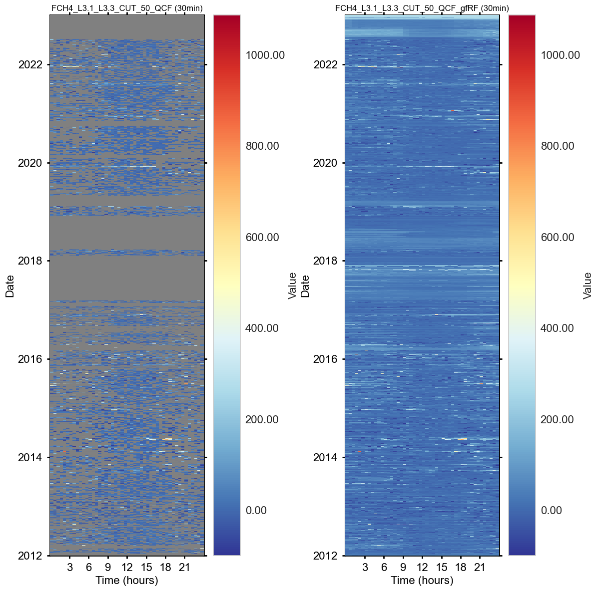
Plot: Gap-filled cumulatives per year#
fpc.showplot_gapfilled_cumulative(gain=0.000216198, units=r'($\mathrm{kg\ CH_4-C\ ha^{-1}}$)', per_year=True)
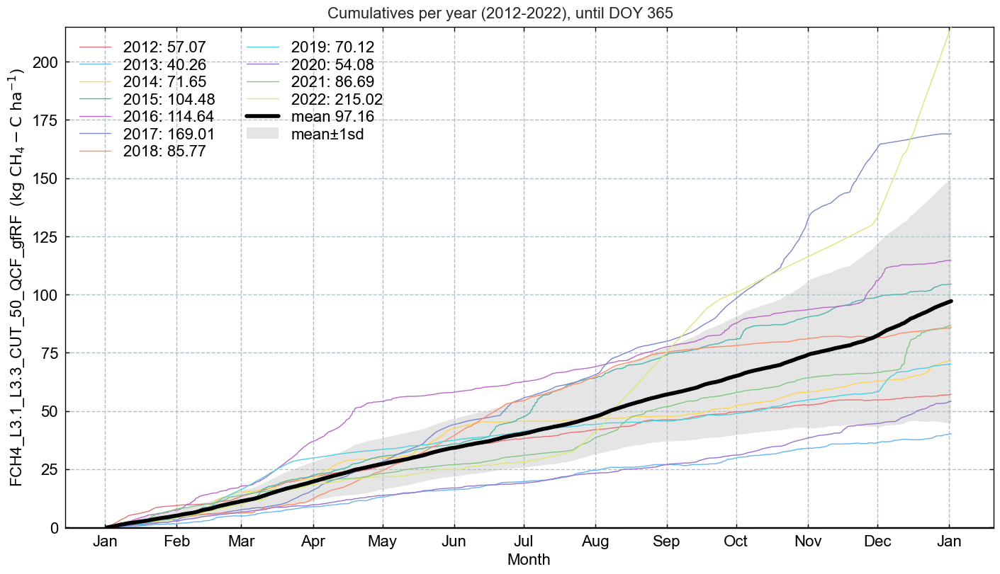
Plot: gap-filled cumulative across all data#
fpc.showplot_gapfilled_cumulative(gain=0.000216198, units=r'($\mathrm{kg\ CH_4-C\ ha^{-1}}$)', per_year=False)
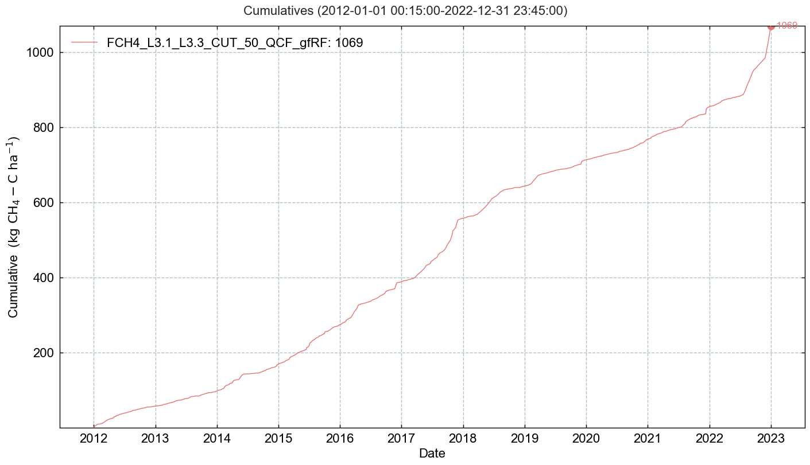
Plot: model feature ranks per year#
fpc.showplot_feature_ranks_per_year()
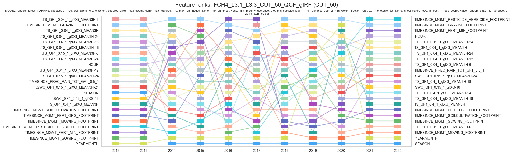
Save results to file#
Save results to file for futher processing
This can be useful if you want to use the data in another software, e.g. continuing post-processing using the library
ReddyProcinRParquetformat is recommended for large datasets
suffix = "FCH4"
Option 1: Save complete data (input data and results)#
# outfile = f"FluxProcessingChain_L4.1_complete_{suffix}"
# results.to_csv(f"{outfile}.csv") # large file, slow to read
# save_parquet(data=results, filename=f"{outfile}") # Smaller file, very fast to read
Option 2: Save flux processing chain results (without input data)#
Needed if you want to continue post-processing in notebooks
Can also be used in
Rwith thearrowpackage
outfile = f"52.1_FluxProcessingChain_L4.1_{suffix}_CUT_50"
fpc.fpc_df.to_csv(f"{outfile}.csv") # large file, slow to read
save_parquet(data=fpc.fpc_df, filename=f"{outfile}") # Smaller file, very fast to read
Saved file 52.1_FluxProcessingChain_L4.1_FCH4_CUT_50.parquet (0.339 seconds).
'52.1_FluxProcessingChain_L4.1_FCH4_CUT_50.parquet'
End of notebook#
Congratulations, you reached the end of this notebook! Before you go let’s store your finish time.
dt_string = datetime.now().strftime("%Y-%m-%d %H:%M:%S")
print(f"Finished. {dt_string}")
Finished. 2024-12-21 00:00:28